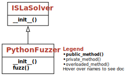

Testing Compilers#
In this chapter, we will make use of grammars and grammar-based testing to systematically generate program code – for instance, to test a compiler or an interpreter. Not very surprisingly, we use Python and the Python interpreter as our domain.
We chose Python not only because the rest of the book is also based on Python. Most importantly, Python brings lots of built-in infrastructure we can leverage, especially
parsers that convert Python code into an abstract syntax tree (AST) representation and
unparsers that take an AST and convert it back into Python code.
This allows us to leverage grammars that operate on ASTs rather than concrete syntax, greatly reducing complexity.
from bookutils import YouTubeVideo
YouTubeVideo('Nr1xbKj_WRQ')
Prerequisites
You must read the chapter on Fuzzing with Grammars to understand how grammars and grammar-based testing work.
# ignore
import sys
# ignore
if sys.version_info < (3, 10):
print("This code requires Python 3.10 or later")
sys.exit(0)
Synopsis#
To use the code provided in this chapter, write
>>> from fuzzingbook.PythonFuzzer import <identifier>
and then make use of the following features.
This chapter provides a PythonFuzzer class that allows producing arbitrary Python code elements:
>>> fuzzer = PythonFuzzer()
>>> print(fuzzer.fuzz())
def R():
break
By default, PythonFuzzer produces a function definition – that is, a list of statements as above.
You can pass a start_symbol argument to state which Python element you’d like to have:
>>> fuzzer = PythonFuzzer('<While>')
>>> print(fuzzer.fuzz())
while {set()[set():set():set()]}:
C = set()
D @= set()
break
else:
return
Here is a list of all possible start symbols. Their names reflect the nonterminals from the Python ast module documentation.
>>> sorted(list(PYTHON_AST_GRAMMAR.keys()))
['<Assert>',
'<Assign>',
'<Attribute>',
'<AugAssign>',
'<BinOp>',
'<BoolOp>',
'<Break>',
'<Call>',
'<Compare>',
'<Constant>',
'<Continue>',
'<Delete>',
'<Dict>',
'<EmptySet>',
'<Expr>',
'<For>',
'<FunctionDef>',
'<If>',
'<List>',
'<Module>',
'<Name>',
'<Pass>',
'<Return>',
'<Set>',
'<Slice>',
'<Starred>',
'<Subscript>',
'<Tuple>',
'<UnaryOp>',
'<While>',
'<With>',
'<arg>',
'<arg_list>',
'<args>',
'<args_param>',
'<arguments>',
'<bool>',
'<boolop>',
'<cmpop>',
'<cmpop_list>',
'<cmpops>',
'<decorator_list_param>',
'<defaults_param>',
'<digit>',
'<digits>',
'<expr>',
'<expr_list>',
'<exprs>',
'<float>',
'<func>',
'<id>',
'<id_continue>',
'<id_start>',
'<identifier>',
'<integer>',
'<keyword>',
'<keyword_list>',
'<keywords>',
'<keywords_param>',
'<kw_defaults_param>',
'<kwarg>',
'<kwonlyargs_param>',
'<lhs_Attribute>',
'<lhs_List>',
'<lhs_Name>',
'<lhs_Starred>',
'<lhs_Subscript>',
'<lhs_Tuple>',
'<lhs_expr>',
'<lhs_exprs>',
'<literal>',
'<mod>',
'<none>',
'<nonempty_expr_list>',
'<nonempty_lhs_expr_list>',
'<nonempty_stmt_list>',
'<nonzerodigit>',
'<not_double_quotes>',
'<not_single_quotes>',
'<operator>',
'<orelse_param>',
'<posonlyargs_param>',
'<returns>',
'<start>',
'<stmt>',
'<stmt_list>',
'<stmts>',
'<string>',
'<type_comment>',
'<type_ignore>',
'<type_ignore_list>',
'<type_ignore_param>',
'<type_ignores>',
'<unaryop>',
'<vararg>',
'<withitem>',
'<withitem_list>',
'<withitems>']
If you’d like more control over Python code generation, here is what is happening behind the scenes.
The EBNF grammar PYTHON_AST_GRAMMAR can parse and produce abstract syntax trees for Python.
To produce a Python module without PythonFuzzer, you would take these steps:
Step 1: Create a non-EBNF grammar suitable for ISLaSolver (or any other grammar fuzzer):
>>> python_ast_grammar = convert_ebnf_grammar(PYTHON_AST_GRAMMAR)
Step 2: Feed the resulting grammar into a grammar fuzzer such as ISLa:
>>> solver = ISLaSolver(python_ast_grammar, start_symbol='<FunctionDef>')
Step 3: Have the grammar fuzzer produce a string. This string represents an AST.
>>> ast_string = str(solver.solve())
>>> ast_string
'FunctionDef(name=\'y\', args=arguments(posonlyargs=[], args=[], kwonlyargs=[], kw_defaults=[], defaults=[]), body=[Return()], decorator_list=[Call(func=Name(id="set", ctx=Load()), args=[], keywords=[])])'
Step 4: Convert the AST into an actual Python AST data structure.
>>> from ast import *
>>> abstract_syntax_tree = eval(ast_string)
Step 5: Finally, convert the AST structure back into readable Python code:
>>> ast.fix_missing_locations(abstract_syntax_tree)
>>> print(ast.unparse(abstract_syntax_tree))
@set()
def y():
return
The chapter has many more applications, including parsing and mutating Python code, evolutionary fuzzing, and more.
Here are the details on the PythonFuzzer constructor:
PythonFuzzer(self, start_symbol: Optional[str] = None, *, grammar: Optional[Dict[str, List[Union[str, Tuple[str, Dict[str, Any]]]]]] = None, constraint: Optional[str] = None, **kw_params) -> None
Produce Python code. Parameters are:
start_symbol: The grammatical entity to be generated (default:<FunctionDef>)grammar: The EBNF grammar to be used (default:PYTHON__AST_GRAMMAR); andconstraintan ISLa constraint (if any).
Additional keyword parameters are passed to the ISLaSolver superclass.

A Grammar for Concrete Code#
To produce code, it is fairly easy to write a grammar with concrete syntax. If we want to produce, say, arithmetic expressions, we can easily create a concrete grammar which does precisely that.
import bookutils.setup
from Grammars import Grammar
from Grammars import is_valid_grammar, convert_ebnf_grammar, extend_grammar, trim_grammar
from typing import Optional
We use the Fuzzingbook format for grammars, in which grammars are represented as dictionaries from symbols to lists of expansion alternatives.
EXPR_GRAMMAR: Grammar = {
"<start>":
["<expr>"],
"<expr>":
["<term> + <expr>", "<term> - <expr>", "<term>"],
"<term>":
["<factor> * <term>", "<factor> / <term>", "<factor>"],
"<factor>":
["+<factor>",
"-<factor>",
"(<expr>)",
"<integer>.<integer>",
"<integer>"],
"<integer>":
["<digit><integer>", "<digit>"],
"<digit>":
["0", "1", "2", "3", "4", "5", "6", "7", "8", "9"]
}
assert is_valid_grammar(EXPR_GRAMMAR)
We can use this grammar to produce syntactically valid arithmetic expressions. We use the ISLa solver as our generator, as it is the most powerful; but we could also use any other of our grammar fuzzers such as GrammarFuzzer at this point.
from isla.solver import ISLaSolver # type: ignore
Here are some concrete inputs produced from the grammar:
expr_solver = ISLaSolver(EXPR_GRAMMAR)
for _ in range(10):
print(expr_solver.solve())
4.3 + 512 / -(7 / 6 - 0 / 9 * 1 * 1) * +8.3 / 7 * 4 / 6
(4 / 7 + 1) / (4) / 9 / 8 + 4 / (3 + 6 - 7)
+--(--(-9) * (4 * 7 + (4) + 4) + --(+(3)) - 6 + 0 / 7 + 7)
(2 * 6 + 0 - 5) * 4 - +1 * (2 - 2) / 8 / 6
(+-(0 - (1) * 7 / 3)) / ((1 * 3 + 8) + 9 - +1 / --0) - 5 * (-+939.491)
+2.9 * 0 / 501.19814 / --+--(6.05002)
+-8.8 / (1) * -+1 + -8 + 9 - 3 / 8 * 6 + 4 * 3 * 5
(+(8 / 9 - 1 - 7)) + ---06.30 / +4.39
8786.82 - +01.170 / 9.2 - +(7) + 1 * 9 - 0
+-6 * 0 / 5 * (-(1.7 * +(-1 / +4.9 * 5 * 1 * 2) + -4.2 + (6 + -5) / (4 * 3 + 4)))
We could extend the grammar further to also produce assignments and other statements, and piece by piece cover the entire syntax of the programming language. However, this would be a not-so-great idea. Why?
The problem is that when testing compilers, you not only want to be able to produce code, but also to parse code, such that you can mutate and manipulate it at will. And this is where our “concrete” syntax will give us problems. While we can easily parse code (or expressions) that exactly adheres to the syntax…
expr_solver.check('2 + 2')
True
… a single space will already suffice to make it fail…
expr_solver.check('2 + 2')
Error parsing "2 + 2" starting with "<start>"
False
… as does the absence of spaces:
expr_solver.check('2+2')
Error parsing "2+2" starting with "<start>"
False
Indeed, spaces are optional in most programming languages. We could update our grammar such that it can handle optional spaces at all times (introducing a <space> nonterminal). But then, there are other features like comments…
expr_solver.check('2 + 2 # should be 4')
Error parsing "2 + 2 # should be 4" starting with "<start>"
False
… or continuation lines …
expr_solver.check('2 + \\\n2') # An expression split over two lines
Error parsing "2 + \
2" starting with "<start>"
False
that our grammar would have to cover.
On top, there are language features that cannot be even represented properly in a context-free grammar:
In the C programming language, for instance, the parser needs to know whether an identifier has been defined as a type
In Python, indentation levels cannot be represented by a context-free grammar.
For this reason, it is often a good idea to make use of a dedicated parser (or preprocessor) to turn input into a more abstract representation - typically a tree structure. In programming languages, such a tree is called an abstract syntax tree (AST); it is the data structure that compilers operate on.
Abstract Syntax Trees#
Abstract Syntax Trees (ASTs) that represent program code are among the most complex data structures in the world (if not the most complex data structures) - notably because they reflect all the complexity of the programming language and its features. The good news is that in Python, working with ASTs is particularly easy - one can work with them using standard language features.
Let us illustrate ASTs using an example. Here is a piece of code that we’d like to work with:
def main():
print("Hello, world!") # A simple example
main()
Hello, world!
Let us obtain the source code of this function:
import inspect
main_source = inspect.getsource(main)
print(main_source)
def main():
print("Hello, world!") # A simple example
We make use of the Python AST module to convert this code string to an AST and back.
import ast
With ast.parse(), we can parse the main() source into an AST:
main_tree = ast.parse(main_source)
This is what this tree looks like:
from bookutils import show_ast
show_ast(main_tree)
We see how the function definition has become a FunctionDef node, whose third child is an Expr node, which in turn becomes a Call – of the "print" function with an argument of "Hello, world!".
Each of these AST nodes comes as a constructor – that is, we can invoke FunctionDef() to obtain a function definition node, or Call() to obtain a call node.
These constructors take the AST children as arguments, but also lots of optional arguments (which we did not use so far). The dump of the AST into a string reveals all the arguments for each constructor:
print(ast.dump(main_tree, indent=4))
Module(
body=[
FunctionDef(
name='main',
args=arguments(
posonlyargs=[],
args=[],
kwonlyargs=[],
kw_defaults=[],
defaults=[]),
body=[
Expr(
value=Call(
func=Name(id='print', ctx=Load()),
args=[
Constant(value='Hello, world!')],
keywords=[]))],
decorator_list=[])],
type_ignores=[])
The Python ast documentation lists all these constructors, which make up the abstract syntax. There are more than 100 individual constructors! (We said that ASTs are complex, right?)
The nice thing about the above string representation is that we can take it as is and turn it into a tree again:
from ast import *
my_main_tree = Module(
body=[
FunctionDef(
name='main',
args=arguments(
posonlyargs=[],
args=[],
kwonlyargs=[],
kw_defaults=[],
defaults=[]),
body=[
Expr(
value=Call(
func=Name(id='print', ctx=Load()),
args=[
Constant(value='Hello, world!')],
keywords=[]))],
decorator_list=[])],
type_ignores=[])
We can take this tree and compile it into executable code:
my_main_tree = fix_missing_locations(my_main_tree) # required for trees built from constructors
my_main_code = compile(my_main_tree, filename='<unknown>', mode='exec')
del main # This deletes the definition of main()
exec(my_main_code) # This defines main() again from `code`
main()
Hello, world!
We can also unparse the tree (= turn it into source code again). (Note how the comment got lost during parsing.)
print(ast.unparse(my_main_tree))
def main():
print('Hello, world!')
Hence, we can
Parse concrete code into ASTs (with
ast.parse())Generate new ASTs and mutate existing ones
Unparse ASTs to obtain concrete code again (with
ast.unparse())
To generate and mutate ASTs (step #2, above), we need means to produce correct ASTs, invoking all constructors with the correct arguments. The plan is thus to have a grammar for ASTs, which produces (and parses) ASTs as we like.
A Grammar for ASTs#
Programming language grammars are among the most complicated formal grammars around, and ASTs reflect much of this complexity. We will use the abstract AST grammar as specified in the Python documentation as base, and build a formal context-free grammar step by step.
Constants#
We will start with simple constants – strings and integers. Again, we use the fuzzingbook syntax for grammars, as it allows for easier extension.
import string
ANYTHING_BUT_DOUBLE_QUOTES_AND_BACKSLASH = (string.digits + string.ascii_letters + string.punctuation + ' ').replace('"', '').replace('\\', '')
ANYTHING_BUT_SINGLE_QUOTES_AND_BACKSLASH = (string.digits + string.ascii_letters + string.punctuation + ' ').replace("'", '').replace('\\', '')
ANYTHING_BUT_DOUBLE_QUOTES_AND_BACKSLASH
"0123456789abcdefghijklmnopqrstuvwxyzABCDEFGHIJKLMNOPQRSTUVWXYZ!#$%&'()*+,-./:;<=>?@[]^_`{|}~ "
ANYTHING_BUT_SINGLE_QUOTES_AND_BACKSLASH
'0123456789abcdefghijklmnopqrstuvwxyzABCDEFGHIJKLMNOPQRSTUVWXYZ!"#$%&()*+,-./:;<=>?@[]^_`{|}~ '
PYTHON_AST_CONSTANTS_GRAMMAR: Grammar = {
'<start>': [ '<expr>' ],
# Expressions
'<expr>': [ '<Constant>', '<Expr>' ],
'<Expr>': [ 'Expr(value=<expr>)' ],
# Constants
'<Constant>': [ 'Constant(value=<literal>)' ],
'<literal>': [ '<string>', '<integer>', '<float>', '<bool>', '<none>' ],
# Strings
'<string>': [ '"<not_double_quotes>*"', "'<not_single_quotes>*'" ],
'<not_double_quotes>': list(ANYTHING_BUT_DOUBLE_QUOTES_AND_BACKSLASH),
'<not_single_quotes>': list(ANYTHING_BUT_SINGLE_QUOTES_AND_BACKSLASH),
# FIXME: The actual rules for Python strings are also more complex:
# https://docs.python.org/3/reference/lexical_analysis.html#numeric-literals
# Numbers
'<integer>': [ '<digit>', '<nonzerodigit><digits>' ],
'<float>': [ '<integer>.<integer>' ],
'<nonzerodigit>': ['1', '2', '3', '4', '5', '6', '7', '8', '9'],
'<digits>': [ '<digit><digits>', '<digit>' ],
'<digit>': ['0', '1', '2', '3', '4', '5', '6', '7', '8', '9'],
# FIXME: There are _many_ more ways to express numbers in Python; see
# https://docs.python.org/3/reference/lexical_analysis.html#numeric-literals
# More
'<bool>': [ 'True', 'False' ],
'<none>': [ 'None' ],
# FIXME: Not supported: bytes, format strings, regex strings...
}
Note that we use extended Backus-Naur form in our grammars (here: <string>):
<elem>+stands for one or more instances of<elem>;<elem>*stands for zero or more instances of<elem>;<elem>?stands for one or zero instances of<elem>.
A call to is_valid_grammar() ensures our grammar is free of common mistakes. Don’t write grammars without it!
assert is_valid_grammar(PYTHON_AST_CONSTANTS_GRAMMAR)
constants_grammar = convert_ebnf_grammar(PYTHON_AST_CONSTANTS_GRAMMAR)
constants_solver = ISLaSolver(constants_grammar)
constants_tree_str = str(constants_solver.solve())
print(constants_tree_str)
Expr(value=Constant(value=None))
We can create an AST from this expression and turn it into Python code (well, a literal):
constants_tree = eval(constants_tree_str)
ast.unparse(constants_tree)
'None'
Let’s do this a number of times:
def test_samples(grammar: Grammar, iterations: int = 10, start_symbol = None, log: bool = True):
g = convert_ebnf_grammar(grammar)
solver = ISLaSolver(g, start_symbol=start_symbol, max_number_free_instantiations=iterations)
for i in range(iterations):
tree_str = str(solver.solve())
tree = eval(tree_str)
ast.fix_missing_locations(tree)
if log:
code = ast.unparse(tree)
print(f'{code:40} # {tree_str}')
test_samples(PYTHON_AST_CONSTANTS_GRAMMAR)
False # Expr(value=Constant(value=False))
2 # Constant(value=2)
None # Constant(value=None)
'#' # Constant(value="#")
550.81 # Constant(value=550.81)
True # Constant(value=True)
'.' # Constant(value='.')
467 # Constant(value=467)
7894 # Constant(value=7894)
263 # Constant(value=263)
Our grammar can also parse ASTs obtained from concrete code.
sample_constant_code = "4711"
sample_constant_ast = ast.parse(sample_constant_code).body[0] # get the `Expr` node
sample_constant_ast_str = ast.dump(sample_constant_ast)
print(sample_constant_ast_str)
Expr(value=Constant(value=4711))
constant_solver = ISLaSolver(constants_grammar)
constant_solver.check(sample_constant_ast_str)
True
Let us now come up with a quiz question: Does our grammar support negative numbers?
For this, let’s first find out if the Constant() constructor also take a negative number as an argument? It turns out it can:
ast.unparse(Constant(value=-1))
'-1'
But what happens if we parse a negative number, say -1? One might assume that this simply results in a Constant(-1), right? Try it out yourself!
from bookutils import quiz
quiz("If we parse a negative number, do we obtain ",
[
"a `Constant()` with a negative value, or",
"a unary `-` operator applied to a positive value?"
], 1 ** 0 + 1 ** 1)
Quiz
The answer is that parsing -1 yields a unary minus USub() applied to a positive value:
print(ast.dump(ast.parse('-1')))
Module(body=[Expr(value=UnaryOp(op=USub(), operand=Constant(value=1)))], type_ignores=[])
As unary operators are not part of our grammar (yet), it cannot handle negative numbers:
sample_constant_code = "-1"
sample_constant_ast = ast.parse(sample_constant_code).body[0] # get the `Expr` node
sample_constant_ast_str = ast.dump(sample_constant_ast)
constant_solver = ISLaSolver(constants_grammar)
constant_solver.check(sample_constant_ast_str)
Error parsing "Expr(value=UnaryOp(op=USub(), operand=Constant(value=1)))" starting with "<start>"
False
In the next sections, we will gradually expand our grammar with more and more Python features, eventually covering (almost) the entire language.
Excursion: Composites#
Let us add composite constants – lists, dictionaries, tuples, etc. Here is how these are represented in an AST:
print(ast.dump(ast.parse("{ 'a': set() }"), indent=4))
Module(
body=[
Expr(
value=Dict(
keys=[
Constant(value='a')],
values=[
Call(
func=Name(id='set', ctx=Load()),
args=[],
keywords=[])]))],
type_ignores=[])
Let us encode these into a grammar, again using the definitions from the abstract AST grammar.
All these structures also take contexts in which identifiers are used – Load() if they are used for evaluation, Store() if they appear on the left-hand side of an assignment (yes, in Python, you can have a tuple on the left-hand side of an assignment, say (x, y) = (1, 2)), and Del() if they are used as operands in a del statement. Right now, we only use Load() and Del() interchangeably.
PYTHON_AST_COMPOSITES_GRAMMAR: Grammar = extend_grammar(
PYTHON_AST_CONSTANTS_GRAMMAR, {
'<expr>': PYTHON_AST_CONSTANTS_GRAMMAR['<expr>'] + [
'<Dict>', '<Set>', '<List>', '<Tuple>'
],
'<Dict>': [ 'Dict(keys=<expr_list>, values=<expr_list>)' ],
'<Set>': [ 'Set(elts=<nonempty_expr_list>)', '<EmptySet>' ],
'<EmptySet>': [ 'Call(func=Name(id="set", ctx=Load()), args=[], keywords=[])' ],
'<List>': [
'List(elts=<expr_list>, ctx=Load())',
'List(elts=<expr_list>, ctx=Del())',
],
'<Tuple>': [
'Tuple(elts=<expr_list>, ctx=Load())',
'Tuple(elts=<expr_list>, ctx=Del())',
],
# Lists of expressions
'<expr_list>': [ '[<exprs>?]' ],
'<nonempty_expr_list>': [ '[<exprs>]' ],
'<exprs>': [ '<expr>', '<exprs>, <expr>' ],
})
assert is_valid_grammar(PYTHON_AST_COMPOSITES_GRAMMAR)
for elt in [ '<Constant>', '<Dict>', '<Set>', '<List>', '<Tuple>' ]:
print(elt)
test_samples(PYTHON_AST_COMPOSITES_GRAMMAR, start_symbol=elt)
print()
<Constant>
'c' # Constant(value='c')
96.7 # Constant(value=96.7)
None # Constant(value=None)
False # Constant(value=False)
505 # Constant(value=505)
'U' # Constant(value="U")
True # Constant(value=True)
41398 # Constant(value=41398)
24 # Constant(value=24)
72 # Constant(value=72)
<Dict>
{} # Dict(keys=[], values=[List(elts=[Dict(keys=[List(elts=[Constant(value=9.63)], ctx=Load())], values=[Tuple(elts=[Call(func=Name(id="set", ctx=Load()), args=[], keywords=[]), Set(elts=[Constant(value=True), Call(func=Name(id="set", ctx=Load()), args=[], keywords=[])])], ctx=Load())]), Constant(value=2), Tuple(elts=[Constant(value=''), Constant(value=False), Set(elts=[Call(func=Name(id="set", ctx=Load()), args=[], keywords=[])]), Expr(value=List(elts=[Constant(value=None)], ctx=Load())), Call(func=Name(id="set", ctx=Load()), args=[], keywords=[])], ctx=Del())], ctx=Del())])
{577: ''} # Dict(keys=[Constant(value=577), Constant(value=34), Constant(value=286), Constant(value=7051)], values=[Constant(value="")])
{90: 14} # Dict(keys=[Constant(value=90)], values=[Constant(value=14), Constant(value=88), Constant(value=435)])
{"nF}[ (^{bXBrwzf-P@geW'.]~G>;O2i&/t7Cc5:QU1jR4q_8VJ)Hsxd#o*aT3Sv!$ku?IhMpmA,EL0ZN=`9yK|<Y6lD+%I": 'Gym]A&K;70{jJLC"DV)/Y S.eNMEQq^%?i+-b!hz|gcUBvW485O#pPu~d:(F>_<a}kI2norf9H[T,lXt=w6@Z*1$xs`"R3'} # Dict(keys=[Constant(value="nF}[ (^{bXBrwzf-P@geW'.]~G>;O2i&/t7Cc5:QU1jR4q_8VJ)Hsxd#o*aT3Sv!$ku?IhMpmA,EL0ZN=`9yK|<Y6lD+%I")], values=[Constant(value='Gym]A&K;70{jJLC"DV)/Y S.eNMEQq^%?i+-b!hz|gcUBvW485O#pPu~d:(F>_<a}kI2norf9H[T,lXt=w6@Z*1$xs`"R3')])
{} # Dict(keys=[], values=[])
{} # Dict(keys=[], values=[])
{} # Dict(keys=[], values=[Call(func=Name(id="set", ctx=Load()), args=[], keywords=[]), Constant(value=True), Constant(value=687596.53), Dict(keys=[Set(elts=[Expr(value=Set(elts=[Set(elts=[Call(func=Name(id="set", ctx=Load()), args=[], keywords=[])]), Constant(value=34.676)]))])], values=[Set(elts=[Set(elts=[List(elts=[Call(func=Name(id="set", ctx=Load()), args=[], keywords=[]), Set(elts=[Call(func=Name(id="set", ctx=Load()), args=[], keywords=[])]), List(elts=[Call(func=Name(id="set", ctx=Load()), args=[], keywords=[]), Call(func=Name(id="set", ctx=Load()), args=[], keywords=[])], ctx=Load())], ctx=Del())])])]), List(elts=[], ctx=Load())])
{} # Dict(keys=[], values=[])
{} # Dict(keys=[Call(func=Name(id="set", ctx=Load()), args=[], keywords=[])], values=[])
{} # Dict(keys=[Tuple(elts=[], ctx=Del())], values=[])
<Set>
{
[], 79.2} # Set(elts=[Expr(value=List(elts=[], ctx=Del())), Constant(value=79.2)])
set() # Call(func=Name(id="set", ctx=Load()), args=[], keywords=[])
{{{False: [set()], None: []}, (({20: set()},),)}} # Set(elts=[Set(elts=[Dict(keys=[Constant(value=False), Constant(value=None)], values=[List(elts=[Call(func=Name(id="set", ctx=Load()), args=[], keywords=[])], ctx=Load()), List(elts=[], ctx=Del())]), Tuple(elts=[Tuple(elts=[Dict(keys=[Constant(value=20)], values=[Call(func=Name(id="set", ctx=Load()), args=[], keywords=[]), Call(func=Name(id="set", ctx=Load()), args=[], keywords=[]), Constant(value=True), List(elts=[], ctx=Del())])], ctx=Load())], ctx=Del())])])
{'Z'} # Set(elts=[Constant(value='Z')])
{3763, ''} # Set(elts=[Constant(value=3763), Constant(value="")])
{475, 136, 95, 841, 58} # Set(elts=[Constant(value=475), Constant(value=136), Constant(value=95), Constant(value=841), Constant(value=58)])
{"F3Ye]1UZz&sPrG:D-R`k?5d+SM,/4b!uE fW;L$)@oQ'h^qI[(lXgN0wmt=~Jav86|Vp%72CcOBj_nHK<9A*#i}yTx>{."} # Set(elts=[Constant(value="F3Ye]1UZz&sPrG:D-R`k?5d+SM,/4b!uE fW;L$)@oQ'h^qI[(lXgN0wmt=~Jav86|Vp%72CcOBj_nHK<9A*#i}yTx>{.")])
{66, 7} # Set(elts=[Constant(value=66), Constant(value=7)])
{set(), '', None, '_P[', 'L}w,6'} # Set(elts=[Call(func=Name(id="set", ctx=Load()), args=[], keywords=[]), Constant(value=''), Constant(value=None), Constant(value='_P['), Constant(value='L}w,6')])
{'51I{Ef&u;kThXbRo]cV/8)Q@W>4|=J7lHge"+^y%(rv<q.DM:najxi9OUG?!KS zsd2t-Fm3NApB#0$~C`*PY'} # Set(elts=[Constant(value='51I{Ef&u;kThXbRo]cV/8)Q@W>4|=J7lHge"+^y%(rv<q.DM:najxi9OUG?!KS zsd2t-Fm3NApB#0$~C`*PY')])
<List>
[[], {831.3: (7, set(), {('1',)})}] # List(elts=[List(elts=[], ctx=Load()), Dict(keys=[Constant(value=831.30), Constant(value=None), Expr(value=Tuple(elts=[Constant(value=""), Constant(value=True), Constant(value=False)], ctx=Del()))], values=[Tuple(elts=[Constant(value=7), Call(func=Name(id="set", ctx=Load()), args=[], keywords=[]), Set(elts=[Tuple(elts=[Constant(value='1')], ctx=Load())])], ctx=Load())])], ctx=Del())
[22] # List(elts=[Constant(value=22)], ctx=Load())
[64] # List(elts=[Constant(value=64)], ctx=Load())
[56] # List(elts=[Constant(value=56)], ctx=Del())
[9589] # List(elts=[Constant(value=9589)], ctx=Load())
[780] # List(elts=[Constant(value=780)], ctx=Del())
[164, 47] # List(elts=[Constant(value=164), Constant(value=47)], ctx=Load())
["^dG@0 N26zE73qSfX,>xhPlW#j.1cQO4bF+A:LZR'CT=$i_", 'tJI`]gD_M/8yu!%<n~&H|9w*)Ur5sk(e}[vap?V-oK{BYm;eccmO'] # List(elts=[Constant(value="^dG@0 N26zE73qSfX,>xhPlW#j.1cQO4bF+A:LZR'CT=$i_"), Constant(value="tJI`]gD_M/8yu!%<n~&H|9w*)Ur5sk(e}[vap?V-oK{BYm;eccmO")], ctx=Load())
['e]@JX9LBnA:0Ha^3KVf OWuFT%*8ZGtp/x`Cw"li|Mq?_UI45$)zNh#gDcs;!-d[,(~{>bYrE<.RQ27}&moSk+vjP=6y9'] # List(elts=[Constant(value='e]@JX9LBnA:0Ha^3KVf OWuFT%*8ZGtp/x`Cw"li|Mq?_UI45$)zNh#gDcs;!-d[,(~{>bYrE<.RQ27}&moSk+vjP=6y9')], ctx=Load())
[set(), set()] # List(elts=[Call(func=Name(id="set", ctx=Load()), args=[], keywords=[]), Call(func=Name(id="set", ctx=Load()), args=[], keywords=[])], ctx=Load())
<Tuple>
() # Tuple(elts=[], ctx=Load())
(set(),) # Tuple(elts=[Call(func=Name(id="set", ctx=Load()), args=[], keywords=[])], ctx=Del())
(set(), [],
1.4, [[None], True], {set(): (False, {set()})}) # Tuple(elts=[Call(func=Name(id="set", ctx=Load()), args=[], keywords=[]), List(elts=[], ctx=Del()), Expr(value=Constant(value=1.4)), List(elts=[List(elts=[Constant(value=None)], ctx=Load()), Constant(value=True)], ctx=Load()), Dict(keys=[Call(func=Name(id="set", ctx=Load()), args=[], keywords=[]), Set(elts=[Call(func=Name(id="set", ctx=Load()), args=[], keywords=[])]), Expr(value=Constant(value=False))], values=[Tuple(elts=[Constant(value=False), Set(elts=[Call(func=Name(id="set", ctx=Load()), args=[], keywords=[])])], ctx=Load())])], ctx=Del())
('',) # Tuple(elts=[Constant(value="")], ctx=Load())
(93,) # Tuple(elts=[Constant(value=93)], ctx=Load())
(28371613, 51, 892, 45, 10678, '') # Tuple(elts=[Constant(value=28371613), Constant(value=51), Constant(value=892), Constant(value=45), Constant(value=10678), Constant(value='')], ctx=Del())
(72, 632) # Tuple(elts=[Constant(value=72), Constant(value=632)], ctx=Load())
('p[R#U', '5JRh~3', 'aAI>V+LBk60Ogp') # Tuple(elts=[Constant(value='p[R#U'), Constant(value="5JRh~3"), Constant(value="aAI>V+LBk60Ogp")], ctx=Load())
(363,) # Tuple(elts=[Constant(value=363)], ctx=Del())
('a*wyz!$CcJ.TDj?<8Q`o}|fG~3%FX/O:r@YW5dK,MqLt^l&B(PbH1_ZInkimvSV4x> u{+2gs)h"e9NA;76]=E-0;',) # Tuple(elts=[Constant(value='a*wyz!$CcJ.TDj?<8Q`o}|fG~3%FX/O:r@YW5dK,MqLt^l&B(PbH1_ZInkimvSV4x> u{+2gs)h"e9NA;76]=E-0;')], ctx=Load())
You may encounter a number of uncommon expressions here. For instance:
()is an empty tuple.(1,)is a tuple with one element.{}is an empty dictionary;{1}is a set with one element.An empty set is denoted by
set().
The fact that we use set() to represent empty sets is actually a feature of our PYTHON_AST_COMPOSITES_GRAMMAR grammar.
If we invoke the Set() AST constructor without any elements, we obtain this beautiful expression…
print(ast.unparse(Set(elts=[])))
{*()}
… which indeed evaluates into an empty set.
{*()}
set()
Technically speaking, all of this is correct, but we’d like to stick to (somewhat) more readable code. If you want to confuse your programmer friends, always use {*()} instead of set().
End of Excursion#
Excursion: Expressions#
Let us extend our grammar with expressions. The Python parser already takes care of precedence rules, so we can treat all unary and binary operators in a similar fashion.
print(ast.dump(ast.parse("2 + 2 is not False"), indent=4))
Module(
body=[
Expr(
value=Compare(
left=BinOp(
left=Constant(value=2),
op=Add(),
right=Constant(value=2)),
ops=[
IsNot()],
comparators=[
Constant(value=False)]))],
type_ignores=[])
PYTHON_AST_EXPRS_GRAMMAR: Grammar = extend_grammar(PYTHON_AST_COMPOSITES_GRAMMAR, {
'<expr>': PYTHON_AST_COMPOSITES_GRAMMAR['<expr>'] + [
'<BoolOp>', '<BinOp>', '<UnaryOp>', '<Compare>',
],
# Booleans: and or
'<BoolOp>': [ 'BoolOp(op=<boolop>, values=<expr_list>)' ],
'<boolop>': [ 'And()', 'Or()' ],
# Binary operators: + - * ...
'<BinOp>': [ 'BinOp(left=<expr>, op=<operator>, right=<expr>)' ],
'<operator>': [ 'Add()', 'Sub()', 'Mult()', 'MatMult()',
'Div()', 'Mod()', 'Pow()',
'LShift()', 'RShift()', 'BitOr()', 'BitXor()', 'BitAnd()',
'FloorDiv()' ],
# Unary operators: not + - ...
'<UnaryOp>': [ 'UnaryOp(op=<unaryop>, operand=<expr>)'],
'<unaryop>': [ 'Invert()', 'Not()', 'UAdd()', 'USub()' ],
# Comparisons: == != < <= > >= is in ...
'<Compare>': [ 'Compare(left=<expr>, ops=<cmpop_list>, comparators=<expr_list>)'],
'<cmpop_list>': [ '[<cmpops>?]' ],
'<cmpops>': [ '<cmpop>', '<cmpop>, <cmpops>' ],
'<cmpop>': [ 'Eq()', 'NotEq()', 'Lt()', 'LtE()', 'Gt()', 'GtE()',
'Is()', 'IsNot()', 'In()', 'NotIn()' ],
# FIXME: There's a few more expressions: GeneratorExp, Await, YieldFrom, ...
})
assert is_valid_grammar(PYTHON_AST_EXPRS_GRAMMAR)
for elt in [ '<BoolOp>', '<BinOp>', '<UnaryOp>', '<Compare>' ]:
print(elt)
test_samples(PYTHON_AST_EXPRS_GRAMMAR, start_symbol=elt)
print()
<BoolOp>
() and {-([]) / (set(), set()), {
True: set()}} # BoolOp(op=And(), values=[BoolOp(op=Or(), values=[]), Set(elts=[BinOp(left=UnaryOp(op=USub(), operand=Compare(left=List(elts=[], ctx=Del()), ops=[], comparators=[])), op=Div(), right=Tuple(elts=[Call(func=Name(id="set", ctx=Load()), args=[], keywords=[]), Call(func=Name(id="set", ctx=Load()), args=[], keywords=[])], ctx=Load())), Dict(keys=[Expr(value=Constant(value=True))], values=[Call(func=Name(id="set", ctx=Load()), args=[], keywords=[]), Call(func=Name(id="set", ctx=Load()), args=[], keywords=[]), Call(func=Name(id="set", ctx=Load()), args=[], keywords=[]), List(elts=[], ctx=Load())])])])
(set(), set(), set() @ set() | set() + set()) and set() ** (set() ^ set()) * set() # BoolOp(op=And(), values=[Tuple(elts=[Call(func=Name(id="set", ctx=Load()), args=[], keywords=[]), Call(func=Name(id="set", ctx=Load()), args=[], keywords=[]), BinOp(left=BinOp(left=Call(func=Name(id="set", ctx=Load()), args=[], keywords=[]), op=MatMult(), right=Call(func=Name(id="set", ctx=Load()), args=[], keywords=[])), op=BitOr(), right=BinOp(left=Call(func=Name(id="set", ctx=Load()), args=[], keywords=[]), op=Add(), right=Call(func=Name(id="set", ctx=Load()), args=[], keywords=[])))], ctx=Del()), BinOp(left=BinOp(left=Call(func=Name(id="set", ctx=Load()), args=[], keywords=[]), op=Pow(), right=BinOp(left=Call(func=Name(id="set", ctx=Load()), args=[], keywords=[]), op=BitXor(), right=Call(func=Name(id="set", ctx=Load()), args=[], keywords=[]))), op=Mult(), right=Call(func=Name(id="set", ctx=Load()), args=[], keywords=[]))])
set() % (set() >> set()) - (set() << set()) or set() & set() # BoolOp(op=Or(), values=[BinOp(left=BinOp(left=Call(func=Name(id="set", ctx=Load()), args=[], keywords=[]), op=Mod(), right=BinOp(left=Call(func=Name(id="set", ctx=Load()), args=[], keywords=[]), op=RShift(), right=Call(func=Name(id="set", ctx=Load()), args=[], keywords=[]))), op=Sub(), right=BinOp(left=Call(func=Name(id="set", ctx=Load()), args=[], keywords=[]), op=LShift(), right=Call(func=Name(id="set", ctx=Load()), args=[], keywords=[]))), BinOp(left=Call(func=Name(id="set", ctx=Load()), args=[], keywords=[]), op=BitAnd(), right=Call(func=Name(id="set", ctx=Load()), args=[], keywords=[]))])
'8' or 6 # BoolOp(op=Or(), values=[Constant(value='8'), Constant(value=6)])
~+123.95 # BoolOp(op=Or(), values=[UnaryOp(op=Invert(), operand=UnaryOp(op=UAdd(), operand=Constant(value=123.95)))])
not False // None # BoolOp(op=Or(), values=[UnaryOp(op=Not(), operand=BinOp(left=Constant(value=False), op=FloorDiv(), right=Constant(value=None)))])
'S' and 6180 in 397494 # BoolOp(op=And(), values=[Constant(value="S"), Compare(left=Constant(value=6180), ops=[In()], comparators=[Constant(value=397494)])])
41 # BoolOp(op=And(), values=[Constant(value=41)])
214 # BoolOp(op=Or(), values=[Constant(value=214)])
5818 and "N1qoR6ak 2UJTWyh>!B)/#YKe0]=w{E.-Q`F[5'&^9cA~<V+M$bnLu%H8I3;g*D?rz7Xj:}pPvif_GOtx4,(ZCdmls|@YiT" and 70 and 884 # BoolOp(op=And(), values=[Constant(value=5818), Constant(value="N1qoR6ak 2UJTWyh>!B)/#YKe0]=w{E.-Q`F[5'&^9cA~<V+M$bnLu%H8I3;g*D?rz7Xj:}pPvif_GOtx4,(ZCdmls|@YiT"), Constant(value=70), Constant(value=884)])
<BinOp>
{} - 33 # BinOp(left=Expr(value=Dict(keys=[], values=[Tuple(elts=[UnaryOp(op=Invert(), operand=List(elts=[List(elts=[Call(func=Name(id="set", ctx=Load()), args=[], keywords=[])], ctx=Load()), Tuple(elts=[], ctx=Del()), BoolOp(op=And(), values=[Set(elts=[Call(func=Name(id="set", ctx=Load()), args=[], keywords=[])]), List(elts=[Call(func=Name(id="set", ctx=Load()), args=[], keywords=[]), Call(func=Name(id="set", ctx=Load()), args=[], keywords=[]), BinOp(left=Call(func=Name(id="set", ctx=Load()), args=[], keywords=[]), op=Mod(), right=Call(func=Name(id="set", ctx=Load()), args=[], keywords=[]))], ctx=Load())])], ctx=Del())), BinOp(left=Call(func=Name(id="set", ctx=Load()), args=[], keywords=[]), op=Pow(), right=Compare(left=Tuple(elts=[], ctx=Load()), ops=[], comparators=[Call(func=Name(id="set", ctx=Load()), args=[], keywords=[]), Call(func=Name(id="set", ctx=Load()), args=[], keywords=[])]))], ctx=Del())])), op=Sub(), right=Constant(value=33))
set() / (set() << set()) * (set() >> set()) // (set() @ set() & set()) # BinOp(left=BinOp(left=BinOp(left=Call(func=Name(id="set", ctx=Load()), args=[], keywords=[]), op=Div(), right=BinOp(left=Call(func=Name(id="set", ctx=Load()), args=[], keywords=[]), op=LShift(), right=Call(func=Name(id="set", ctx=Load()), args=[], keywords=[]))), op=Mult(), right=BinOp(left=Call(func=Name(id="set", ctx=Load()), args=[], keywords=[]), op=RShift(), right=Call(func=Name(id="set", ctx=Load()), args=[], keywords=[]))), op=FloorDiv(), right=BinOp(left=BinOp(left=Call(func=Name(id="set", ctx=Load()), args=[], keywords=[]), op=MatMult(), right=Call(func=Name(id="set", ctx=Load()), args=[], keywords=[])), op=BitAnd(), right=Call(func=Name(id="set", ctx=Load()), args=[], keywords=[])))
None ^ False # BinOp(left=Constant(value=None), op=BitXor(), right=Constant(value=False))
-'' + +7719.5 # BinOp(left=UnaryOp(op=USub(), operand=Constant(value="")), op=Add(), right=UnaryOp(op=UAdd(), operand=Constant(value=7719.5)))
(set() or 906) >> ('F') | (not (True)) % ((set() and set()) << False) # BinOp(left=BinOp(left=BoolOp(op=Or(), values=[Compare(left=Call(func=Name(id="set", ctx=Load()), args=[], keywords=[]), ops=[], comparators=[]), Constant(value=906)]), op=RShift(), right=BoolOp(op=Or(), values=[Constant(value='F')])), op=BitOr(), right=BinOp(left=UnaryOp(op=Not(), operand=BoolOp(op=Or(), values=[Constant(value=True)])), op=Mod(), right=BinOp(left=BoolOp(op=And(), values=[Compare(left=Call(func=Name(id="set", ctx=Load()), args=[], keywords=[]), ops=[], comparators=[]), Compare(left=Call(func=Name(id="set", ctx=Load()), args=[], keywords=[]), ops=[], comparators=[])]), op=LShift(), right=Constant(value=False))))
((set()) > None != set()) | ((set())) # BinOp(left=Compare(left=Compare(left=Call(func=Name(id="set", ctx=Load()), args=[], keywords=[]), ops=[], comparators=[]), ops=[Gt(), NotEq()], comparators=[Constant(value=None), Call(func=Name(id="set", ctx=Load()), args=[], keywords=[])]), op=BitOr(), right=Compare(left=Compare(left=Call(func=Name(id="set", ctx=Load()), args=[], keywords=[]), ops=[], comparators=[]), ops=[], comparators=[Constant(value=True)]))
524 - 188 # BinOp(left=Constant(value=524), op=Sub(), right=Constant(value=188))
6214 / 81 # BinOp(left=Constant(value=6214), op=Div(), right=Constant(value=81))
26 / 43 # BinOp(left=Constant(value=26), op=Div(), right=Constant(value=43))
"s85;3Rw?ST!NI]_-eJ(x7'kG|z}C^&fWLnY[Z,rV*Qj.`Ed%:4<t" ^ '/$ao6 U{2cim@hHtF>b+vX)KBg1l=qyMDp~O0#A9uPa+l' # BinOp(left=Constant(value="s85;3Rw?ST!NI]_-eJ(x7'kG|z}C^&fWLnY[Z,rV*Qj.`Ed%:4<t"), op=BitXor(), right=Constant(value="/$ao6 U{2cim@hHtF>b+vX)KBg1l=qyMDp~O0#A9uPa+l"))
<UnaryOp>
+(set(),
[]) # UnaryOp(op=UAdd(), operand=Tuple(elts=[Call(func=Name(id="set", ctx=Load()), args=[], keywords=[]), Expr(value=List(elts=[], ctx=Del()))], ctx=Del()))
~(None) # UnaryOp(op=Invert(), operand=BoolOp(op=Or(), values=[Constant(value=None)]))
-(((not {set(), set()})) & {set(): set(), (): set()}) # UnaryOp(op=USub(), operand=BinOp(left=Compare(left=UnaryOp(op=Not(), operand=Set(elts=[Call(func=Name(id="set", ctx=Load()), args=[], keywords=[]), Call(func=Name(id="set", ctx=Load()), args=[], keywords=[])])), ops=[], comparators=[Call(func=Name(id="set", ctx=Load()), args=[], keywords=[]), Call(func=Name(id="set", ctx=Load()), args=[], keywords=[]), Call(func=Name(id="set", ctx=Load()), args=[], keywords=[])]), op=BitAnd(), right=Dict(keys=[Call(func=Name(id="set", ctx=Load()), args=[], keywords=[]), Tuple(elts=[], ctx=Load())], values=[Call(func=Name(id="set", ctx=Load()), args=[], keywords=[]), Call(func=Name(id="set", ctx=Load()), args=[], keywords=[]), List(elts=[Call(func=Name(id="set", ctx=Load()), args=[], keywords=[])], ctx=Load())])))
-((set() + set()) % ((set() << set()) / (set() ^ set()))) ** (set() // set() >> set() * set()) # UnaryOp(op=USub(), operand=BinOp(left=BinOp(left=BinOp(left=Call(func=Name(id="set", ctx=Load()), args=[], keywords=[]), op=Add(), right=Call(func=Name(id="set", ctx=Load()), args=[], keywords=[])), op=Mod(), right=BinOp(left=BinOp(left=Call(func=Name(id="set", ctx=Load()), args=[], keywords=[]), op=LShift(), right=Call(func=Name(id="set", ctx=Load()), args=[], keywords=[])), op=Div(), right=BinOp(left=Call(func=Name(id="set", ctx=Load()), args=[], keywords=[]), op=BitXor(), right=Call(func=Name(id="set", ctx=Load()), args=[], keywords=[])))), op=Pow(), right=BinOp(left=BinOp(left=Call(func=Name(id="set", ctx=Load()), args=[], keywords=[]), op=FloorDiv(), right=Call(func=Name(id="set", ctx=Load()), args=[], keywords=[])), op=RShift(), right=BinOp(left=Call(func=Name(id="set", ctx=Load()), args=[], keywords=[]), op=Mult(), right=Call(func=Name(id="set", ctx=Load()), args=[], keywords=[])))))
-True # UnaryOp(op=USub(), operand=Constant(value=True))
+(4.3 @ (823 - '&') | '') # UnaryOp(op=UAdd(), operand=BinOp(left=BinOp(left=Constant(value=4.30), op=MatMult(), right=BinOp(left=Constant(value=823), op=Sub(), right=Constant(value='&'))), op=BitOr(), right=Constant(value="")))
~(False <= 51 not in 959) # UnaryOp(op=Invert(), operand=BoolOp(op=And(), values=[Compare(left=Constant(value=False), ops=[LtE(), NotIn()], comparators=[Constant(value=51), Constant(value=959)])]))
~17 # UnaryOp(op=Invert(), operand=Constant(value=17))
not 26 # UnaryOp(op=Not(), operand=Constant(value=26))
-68 # UnaryOp(op=USub(), operand=Constant(value=68))
<Compare>
() # Compare(left=BoolOp(op=Or(), values=[]), ops=[], comparators=[Expr(value=Constant(value=8)), Tuple(elts=[List(elts=[Call(func=Name(id="set", ctx=Load()), args=[], keywords=[])], ctx=Del()), Dict(keys=[Call(func=Name(id="set", ctx=Load()), args=[], keywords=[])], values=[]), Set(elts=[Call(func=Name(id="set", ctx=Load()), args=[], keywords=[]), Tuple(elts=[], ctx=Del())]), UnaryOp(op=UAdd(), operand=BinOp(left=Compare(left=Tuple(elts=[], ctx=Load()), ops=[], comparators=[Call(func=Name(id="set", ctx=Load()), args=[], keywords=[])]), op=Add(), right=List(elts=[Call(func=Name(id="set", ctx=Load()), args=[], keywords=[]), Call(func=Name(id="set", ctx=Load()), args=[], keywords=[])], ctx=Load())))], ctx=Del())])
(set() & set()) / (set() @ (set() - set())) not in set() ^ set() # Compare(left=BinOp(left=BinOp(left=Call(func=Name(id="set", ctx=Load()), args=[], keywords=[]), op=BitAnd(), right=Call(func=Name(id="set", ctx=Load()), args=[], keywords=[])), op=Div(), right=BinOp(left=Call(func=Name(id="set", ctx=Load()), args=[], keywords=[]), op=MatMult(), right=BinOp(left=Call(func=Name(id="set", ctx=Load()), args=[], keywords=[]), op=Sub(), right=Call(func=Name(id="set", ctx=Load()), args=[], keywords=[])))), ops=[NotIn()], comparators=[BinOp(left=Call(func=Name(id="set", ctx=Load()), args=[], keywords=[]), op=BitXor(), right=Call(func=Name(id="set", ctx=Load()), args=[], keywords=[])), BinOp(left=Call(func=Name(id="set", ctx=Load()), args=[], keywords=[]), op=Mult(), right=Call(func=Name(id="set", ctx=Load()), args=[], keywords=[]))])
set() % set() // None << (set() - set() >> set() ** set()) <= set() | set() > set() + set() # Compare(left=BinOp(left=BinOp(left=BinOp(left=Call(func=Name(id="set", ctx=Load()), args=[], keywords=[]), op=Mod(), right=Call(func=Name(id="set", ctx=Load()), args=[], keywords=[])), op=FloorDiv(), right=Constant(value=None)), op=LShift(), right=BinOp(left=BinOp(left=Call(func=Name(id="set", ctx=Load()), args=[], keywords=[]), op=Sub(), right=Call(func=Name(id="set", ctx=Load()), args=[], keywords=[])), op=RShift(), right=BinOp(left=Call(func=Name(id="set", ctx=Load()), args=[], keywords=[]), op=Pow(), right=Call(func=Name(id="set", ctx=Load()), args=[], keywords=[])))), ops=[LtE(), Gt()], comparators=[BinOp(left=Call(func=Name(id="set", ctx=Load()), args=[], keywords=[]), op=BitOr(), right=Call(func=Name(id="set", ctx=Load()), args=[], keywords=[])), BinOp(left=Call(func=Name(id="set", ctx=Load()), args=[], keywords=[]), op=Add(), right=Call(func=Name(id="set", ctx=Load()), args=[], keywords=[])), Constant(value=True)])
-632.86 != (not ~(not (''))) # Compare(left=UnaryOp(op=USub(), operand=Constant(value=632.860)), ops=[NotEq()], comparators=[UnaryOp(op=Not(), operand=UnaryOp(op=Invert(), operand=UnaryOp(op=Not(), operand=BoolOp(op=And(), values=[Constant(value='')]))))])
'' >= 717 is not False # Compare(left=Constant(value=""), ops=[GtE(), IsNot(), Eq()], comparators=[Constant(value=717), Constant(value=False)])
15 < 39 # Compare(left=Constant(value=15), ops=[Lt(), Is(), Gt(), In()], comparators=[Constant(value=39)])
548 != 934688 # Compare(left=Constant(value=548), ops=[NotEq(), LtE()], comparators=[Constant(value=934688)])
"w-xSGA8TI{%pRcq6e!_E:}P]9LM/&b1+7*lBDnvu)[o`3dY|Oj~JU<#Z'rH;g,f>@Q0tKk4N$iVaFhzW52y=(C.? sXm^{ " in 425 # Compare(left=Constant(value="w-xSGA8TI{%pRcq6e!_E:}P]9LM/&b1+7*lBDnvu)[o`3dY|Oj~JU<#Z'rH;g,f>@Q0tKk4N$iVaFhzW52y=(C.? sXm^{ "), ops=[In()], comparators=[Constant(value=425), Constant(value=21270)])
'H]3Ky.2p-:#6F%9V{X^8)lMD[;7Otk/hgImvcJf& E`uG}w?PY:' >= 'nCALds|1zjq4BZ$"ab*@_(e<!rT=iUW~05+,Q>oNSxRVpF' # Compare(left=Constant(value='H]3Ky.2p-:#6F%9V{X^8)lMD[;7Otk/hgImvcJf& E`uG}w?PY:'), ops=[GtE(), Gt(), NotIn(), IsNot(), GtE()], comparators=[Constant(value='nCALds|1zjq4BZ$"ab*@_(e<!rT=iUW~05+,Q>oNSxRVpF')])
6.3 # Compare(left=Constant(value=6.3), ops=[], comparators=[])
Not all of these expressions are type-correct. For instance, set() * set() raises a type error at runtime. They can be properly parsed, though.
How good is our grammar at this point? Let us create 20 expressions and check how many of these
parse without
SyntaxErrorevaluate without
TypeError.
expr_iterations = 20
bad_syntax = 0
bad_type = 0
ast_exprs_grammar = convert_ebnf_grammar(PYTHON_AST_EXPRS_GRAMMAR)
expr_solver = ISLaSolver(ast_exprs_grammar, max_number_free_instantiations=expr_iterations)
for i in range(expr_iterations):
expr_tree = eval(str(expr_solver.solve()))
expr_tree = fix_missing_locations(expr_tree)
expr_str = ast.unparse(expr_tree)
print(i, expr_str)
try:
... # insert parsing code here
except SyntaxError:
bad_syntax += 1
except TypeError:
bad_type += 1
try:
... # <-- insert evaluation code here
except TypeError:
bad_type += 1
except SyntaxError:
bad_syntax += 1
print(f"Bad syntax: {bad_syntax}/{expr_iterations}")
print(f"Bad type: {bad_type}/{expr_iterations}")
0 set()
1
2 [
~(False,) >> {635: (set() @ set() & set(),), 99.1 not in set() ** set(): {[set() ^ set()]}}]
3 (set() * set() - (set() + set())) / ((set() ^ set()) % set() | set() << set() % set())
4 not None
5 -+(True and '#' and 'x')
6 (8876 > 46 in 36 != 50)
7 24
8 "LfDW-kSM|tpB&+V*RgQ7U]3xq)zh~n^`wTdie5jvPN: A2K?$ZGJ(X;%@sr9mcIu!}OC/1><b=y'0H8o_.4lFYa{6[,>E?"
9 'o,awXihgeM[581Bln"RA60^k2N_L=d$C`7U~f)(&ZG]#m+DqF|PjpIQ<.4ur@ T!-W}Vs:Y{*zOEJb3StHK>?y%c/;iv9'
10 ((set()) < set() is set()) >= ((set()))
11 ((set())) == ((set()) <= set())
12
13
14 set()
15 set()
16 []
17
18 ((() or 'k5'))
19 () | []
Bad syntax: 0/20
Bad type: 0/20
We’re not doing too bad here. It is possible, in principle, to use ISLa constraints such that the resulting code will be properly typed - but this would take hundreds to thousands of rules. We will leave this exercise to the reader.
Note that you should not repeat this experiment once identifiers come into play. There is a remote chance that the fuzzer synthesizes a call like os.remove("/") – and away goes your file system!
End of Excursion#
Excursion: Names and Function Calls#
Let us add some identifiers such that we can call functions.
ID_START = string.ascii_letters + '_'
ID_CONTINUE = ID_START + string.digits
ID_CONTINUE
'abcdefghijklmnopqrstuvwxyzABCDEFGHIJKLMNOPQRSTUVWXYZ_0123456789'
print(ast.dump(ast.parse("xyzzy(a, b=c)"), indent=4))
Module(
body=[
Expr(
value=Call(
func=Name(id='xyzzy', ctx=Load()),
args=[
Name(id='a', ctx=Load())],
keywords=[
keyword(
arg='b',
value=Name(id='c', ctx=Load()))]))],
type_ignores=[])
PYTHON_AST_IDS_GRAMMAR: Grammar = extend_grammar(PYTHON_AST_EXPRS_GRAMMAR, {
'<expr>': PYTHON_AST_EXPRS_GRAMMAR['<expr>'] + [
'<Name>', '<Call>'
],
# Identifiers
'<Name>': [
'Name(id=<identifier>, ctx=Load())',
'Name(id=<identifier>, ctx=Del())'
],
'<identifier>': [ "'<id>'" ],
'<id>': [ '<id_start><id_continue>*' ],
'<id_start>': list(ID_START),
'<id_continue>': list(ID_CONTINUE),
# FIXME: Actual rules are a bit more complex; see
# https://docs.python.org/3/reference/lexical_analysis.html#identifiers
# Function Calls
'<Call>': [ 'Call(func=<func><args_param><keywords_param>)' ],
'<args_param>': [ ', args=<expr_list>' ],
'<keywords_param>': [ ', keywords=<keyword_list>' ],
'<func>': [ '<expr>' ], # Actually <Expr>, but this is more readable and parses 90%
'<keyword_list>': [ '[<keywords>?]' ],
'<keywords>': [ '<keyword>', '<keyword>, <keywords>' ],
'<keyword>': [ 'keyword(arg=<identifier>, value=<expr>)' ]
})
# do import this unconditionally
if sys.version_info >= (3, 13):
PYTHON_AST_IDS_GRAMMAR: Grammar = extend_grammar(PYTHON_AST_IDS_GRAMMAR, {
# As of 3.13, args and keywords parameters are optional
'<Call>': [ 'Call(func=<func><args_param>?<keywords_param>?)' ],
})
assert is_valid_grammar(PYTHON_AST_IDS_GRAMMAR)
for elt in [ '<Name>', '<Call>' ]:
print(elt)
test_samples(PYTHON_AST_IDS_GRAMMAR, start_symbol=elt)
print()
<Name>
n # Name(id='n', ctx=Load())
vmGtKyT3Oq1gBC_srAIRaeQw6Dh8V5oLdj9FcvHfb4MpPZiNuEJ27WYU0lnkSxX9Lz # Name(id='vmGtKyT3Oq1gBC_srAIRaeQw6Dh8V5oLdj9FcvHfb4MpPZiNuEJ27WYU0lnkSxX9Lz', ctx=Del())
h # Name(id='h', ctx=Load())
L # Name(id='L', ctx=Del())
M # Name(id='M', ctx=Load())
g # Name(id='g', ctx=Del())
P # Name(id='P', ctx=Del())
It # Name(id='It', ctx=Del())
jGn7g # Name(id='jGn7g', ctx=Load())
psj # Name(id='psj', ctx=Del())
<Call>
{{set(): set()}(+set())}(m7K, (), u=[set() // set()]) # Call(func=Set(elts=[Call(func=Dict(keys=[Call(func=Name(id="set", ctx=Load()), args=[], keywords=[]), Call(func=Name(id="set", ctx=Load()), args=[], keywords=[])], values=[Call(func=Name(id="set", ctx=Load()), args=[], keywords=[])]), args=[UnaryOp(op=UAdd(), operand=Call(func=Name(id="set", ctx=Load()), args=[], keywords=[]))], keywords=[])]), args=[Name(id='m7K', ctx=Del()), Tuple(elts=[], ctx=Load())], keywords=[keyword(arg='u', value=List(elts=[BinOp(left=Call(func=Name(id="set", ctx=Load()), args=[], keywords=[]), op=FloorDiv(), right=Call(func=Name(id="set", ctx=Load()), args=[], keywords=[]))], ctx=Load()))])
(())(set(), None,
U, j=False, i=set()) # Call(func=Compare(left=BoolOp(op=Or(), values=[]), ops=[], comparators=[BoolOp(op=And(), values=[])]), args=[Call(func=Name(id="set", ctx=Load()), args=[], keywords=[]), Constant(value=None), Expr(value=Name(id='U', ctx=Load()))], keywords=[keyword(arg='j', value=Constant(value=False)), keyword(arg='i', value=Call(func=Name(id="set", ctx=Load()), args=[], keywords=[]))])
[set(), set(), set()](set(), (set(),), T=set(), L=set(), y=set()) # Call(func=List(elts=[Call(func=Name(id="set", ctx=Load()), args=[], keywords=[]), Call(func=Name(id="set", ctx=Load()), args=[], keywords=[]), Call(func=Name(id="set", ctx=Load()), args=[], keywords=[])], ctx=Del()), args=[Call(func=Name(id="set", ctx=Load()), args=[], keywords=[]), Tuple(elts=[Call(func=Name(id="set", ctx=Load()), args=[], keywords=[])], ctx=Del())], keywords=[keyword(arg='T', value=Call(func=Name(id="set", ctx=Load()), args=[], keywords=[])), keyword(arg='L', value=Call(func=Name(id="set", ctx=Load()), args=[], keywords=[])), keyword(arg='y', value=Call(func=Name(id="set", ctx=Load()), args=[], keywords=[]))])
(set() - set() ** set() % (set() @ set()))(set() * set(), set() << set(), W=set() / set()) # Call(func=BinOp(left=Call(func=Name(id="set", ctx=Load()), args=[], keywords=[]), op=Sub(), right=BinOp(left=BinOp(left=Call(func=Name(id="set", ctx=Load()), args=[], keywords=[]), op=Pow(), right=Call(func=Name(id="set", ctx=Load()), args=[], keywords=[])), op=Mod(), right=BinOp(left=Call(func=Name(id="set", ctx=Load()), args=[], keywords=[]), op=MatMult(), right=Call(func=Name(id="set", ctx=Load()), args=[], keywords=[])))), args=[BinOp(left=Call(func=Name(id="set", ctx=Load()), args=[], keywords=[]), op=Mult(), right=Call(func=Name(id="set", ctx=Load()), args=[], keywords=[])), BinOp(left=Call(func=Name(id="set", ctx=Load()), args=[], keywords=[]), op=LShift(), right=Call(func=Name(id="set", ctx=Load()), args=[], keywords=[]))], keywords=[keyword(arg='W', value=BinOp(left=Call(func=Name(id="set", ctx=Load()), args=[], keywords=[]), op=Div(), right=Call(func=Name(id="set", ctx=Load()), args=[], keywords=[])))])
(set() >> set())((set() | set()) ^ set(), g=set() & set(), B=set() + set()) # Call(func=BinOp(left=Call(func=Name(id="set", ctx=Load()), args=[], keywords=[]), op=RShift(), right=Call(func=Name(id="set", ctx=Load()), args=[], keywords=[])), args=[BinOp(left=BinOp(left=Call(func=Name(id="set", ctx=Load()), args=[], keywords=[]), op=BitOr(), right=Call(func=Name(id="set", ctx=Load()), args=[], keywords=[])), op=BitXor(), right=Call(func=Name(id="set", ctx=Load()), args=[], keywords=[]))], keywords=[keyword(arg='g', value=BinOp(left=Call(func=Name(id="set", ctx=Load()), args=[], keywords=[]), op=BitAnd(), right=Call(func=Name(id="set", ctx=Load()), args=[], keywords=[]))), keyword(arg='B', value=BinOp(left=Call(func=Name(id="set", ctx=Load()), args=[], keywords=[]), op=Add(), right=Call(func=Name(id="set", ctx=Load()), args=[], keywords=[])))])
''(-(not 48.9), Q=~70, FmD=True, h=set()) # Call(func=Constant(value=''), args=[UnaryOp(op=USub(), operand=UnaryOp(op=Not(), operand=Constant(value=48.9)))], keywords=[keyword(arg='Q', value=UnaryOp(op=Invert(), operand=Constant(value=70))), keyword(arg='FmD', value=Constant(value=True)), keyword(arg='h', value=Call(func=Name(id="set", ctx=Load()), args=[], keywords=[]))])
((set() in set()) > set())(None, v=set()) # Call(func=Compare(left=Compare(left=Call(func=Name(id="set", ctx=Load()), args=[], keywords=[]), ops=[In()], comparators=[Call(func=Name(id="set", ctx=Load()), args=[], keywords=[])]), ops=[Gt()], comparators=[Call(func=Name(id="set", ctx=Load()), args=[], keywords=[])]), args=[Compare(left=Constant(value=None), ops=[], comparators=[])], keywords=[keyword(arg='v', value=Call(func=Name(id="set", ctx=Load()), args=[], keywords=[]))])
''(set(), V, l, t, _, zM=H) # Call(func=Constant(value=""), args=[Call(func=Name(id="set", ctx=Load()), args=[], keywords=[]), Name(id='V', ctx=Load()), Name(id='l', ctx=Load()), Name(id='t', ctx=Del()), Name(id='_', ctx=Load())], keywords=[keyword(arg='zM', value=Name(id='H', ctx=Load()))])
xTzqJe5gQ(n80d, qkw=b) # Call(func=Name(id='xTzqJe5gQ', ctx=Del()), args=[Name(id='n80d', ctx=Load())], keywords=[keyword(arg='qkw', value=Name(id='b', ctx=Del()))])
k(set(), set(), set(), E, o=c) # Call(func=Name(id='k', ctx=Load()), args=[Call(func=Name(id="set", ctx=Load()), args=[], keywords=[]), Call(func=Name(id="set", ctx=Load()), args=[], keywords=[]), Call(func=Name(id="set", ctx=Load()), args=[], keywords=[]), Name(id='E', ctx=Load())], keywords=[keyword(arg='o', value=Name(id='c', ctx=Load()))])
ast_ids_grammar = convert_ebnf_grammar(PYTHON_AST_IDS_GRAMMAR)
id_solver = ISLaSolver(ast_ids_grammar, start_symbol='<id>')
assert id_solver.check('open')
name_solver = ISLaSolver(ast_ids_grammar)
assert name_solver.check("Name(id='open', ctx=Load())")
call_solver = ISLaSolver(ast_ids_grammar, start_symbol='<keyword_list>')
assert call_solver.check('[]')
call_str = ast.dump(ast.parse('open("foo.txt", "r")').body[0].value) # type: ignore
print(call_str)
call_solver = ISLaSolver(ast_ids_grammar)
assert call_solver.check(call_str)
Call(func=Name(id='open', ctx=Load()), args=[Constant(value='foo.txt'), Constant(value='r')], keywords=[])
End of Excursion#
Excursion: Attributes and Subscripts#
Let us add attributes and subscripts.
print(ast.dump(ast.parse("a[b].c"), indent=4))
Module(
body=[
Expr(
value=Attribute(
value=Subscript(
value=Name(id='a', ctx=Load()),
slice=Name(id='b', ctx=Load()),
ctx=Load()),
attr='c',
ctx=Load()))],
type_ignores=[])
PYTHON_AST_ATTRS_GRAMMAR: Grammar = extend_grammar(PYTHON_AST_IDS_GRAMMAR, {
'<expr>': PYTHON_AST_IDS_GRAMMAR['<expr>'] + [
'<Attribute>', '<Subscript>', '<Starred>',
],
# Attributes
'<Attribute>': [
'Attribute(value=<expr>, attr=<identifier>, ctx=Load())',
'Attribute(value=<expr>, attr=<identifier>, ctx=Del())',
],
# Subscripts
'<Subscript>': [
'Subscript(value=<expr>, slice=<Slice>, ctx=Load())',
'Subscript(value=<expr>, slice=<Slice>, ctx=Del())',
],
'<Slice>': [
'Slice()',
'Slice(<expr>)',
'Slice(<expr>, <expr>)',
'Slice(<expr>, <expr>, <expr>)',
],
# Starred
'<Starred>': [
'Starred(value=<expr>, ctx=Load())',
'Starred(value=<expr>, ctx=Del())',
],
# We're extending the set of callers a bit
'<func>': [ '<Name>', '<Attribute>', '<Subscript>' ],
})
assert is_valid_grammar(PYTHON_AST_ATTRS_GRAMMAR)
for elt in [ '<Attribute>', '<Subscript>', '<Starred>' ]:
print(elt)
test_samples(PYTHON_AST_ATTRS_GRAMMAR, start_symbol=elt)
print()
<Attribute>
{}.zZ # Attribute(value=Dict(keys=[BoolOp(op=Or(), values=[Expr(value=UnaryOp(op=UAdd(), operand=Call(func=Name(id='e', ctx=Del()), args=[], keywords=[]))), BinOp(left=Compare(left=Call(func=Name(id="set", ctx=Load()), args=[], keywords=[]), ops=[], comparators=[]), op=Sub(), right=Call(func=Name(id="set", ctx=Load()), args=[], keywords=[]))]), Starred(value=Attribute(value=Tuple(elts=[Set(elts=[Call(func=Name(id="set", ctx=Load()), args=[], keywords=[]), Subscript(value=Call(func=Name(id="set", ctx=Load()), args=[], keywords=[]), slice=Slice(), ctx=Del()), List(elts=[Call(func=Name(id="set", ctx=Load()), args=[], keywords=[])], ctx=Del())])], ctx=Load()), attr='HV', ctx=Load()), ctx=Del())], values=[]), attr='zZ', ctx=Del())
OON6Q9X8m1yqSkYJtGPI_bADfjMTaIhp._Rr5dHs2n7UwzFoLulcei3KCgW4EvxB60jmPP # Attribute(value=Name(id='OON6Q9X8m1yqSkYJtGPI_bADfjMTaIhp', ctx=Load()), attr='_Rr5dHs2n7UwzFoLulcei3KCgW4EvxB60jmPP', ctx=Del())
175 .M # Attribute(value=Constant(value=175), attr='M', ctx=Del())
*[set() * set() + set() / set()][(set() << set(), set() % set(), set() ** (set() & set())):].Wn # Attribute(value=Starred(value=Subscript(value=List(elts=[BinOp(left=BinOp(left=Call(func=Name(id="set", ctx=Load()), args=[], keywords=[]), op=Mult(), right=Call(func=Name(id="set", ctx=Load()), args=[], keywords=[])), op=Add(), right=BinOp(left=Call(func=Name(id="set", ctx=Load()), args=[], keywords=[]), op=Div(), right=Call(func=Name(id="set", ctx=Load()), args=[], keywords=[])))], ctx=Load()), slice=Slice(Tuple(elts=[BinOp(left=Call(func=Name(id="set", ctx=Load()), args=[], keywords=[]), op=LShift(), right=Call(func=Name(id="set", ctx=Load()), args=[], keywords=[])), BinOp(left=Call(func=Name(id="set", ctx=Load()), args=[], keywords=[]), op=Mod(), right=Call(func=Name(id="set", ctx=Load()), args=[], keywords=[])), BinOp(left=Call(func=Name(id="set", ctx=Load()), args=[], keywords=[]), op=Pow(), right=BinOp(left=Call(func=Name(id="set", ctx=Load()), args=[], keywords=[]), op=BitAnd(), right=Call(func=Name(id="set", ctx=Load()), args=[], keywords=[])))], ctx=Del())), ctx=Load()), ctx=Load()), attr='Wn', ctx=Del())
((-+set()[:]()[set():set():set()] | (not ~set().E())) @ '' // (None ^ False)).B # Attribute(value=BinOp(left=BinOp(left=BinOp(left=UnaryOp(op=USub(), operand=UnaryOp(op=UAdd(), operand=Subscript(value=Call(func=Subscript(value=Call(func=Name(id="set", ctx=Load()), args=[], keywords=[]), slice=Slice(), ctx=Del()), args=[], keywords=[]), slice=Slice(Call(func=Name(id="set", ctx=Load()), args=[], keywords=[]), Call(func=Name(id="set", ctx=Load()), args=[], keywords=[]), Call(func=Name(id="set", ctx=Load()), args=[], keywords=[])), ctx=Del()))), op=BitOr(), right=UnaryOp(op=Not(), operand=UnaryOp(op=Invert(), operand=Call(func=Attribute(value=Call(func=Name(id="set", ctx=Load()), args=[], keywords=[]), attr='E', ctx=Del()), args=[], keywords=[])))), op=MatMult(), right=Constant(value='')), op=FloorDiv(), right=BinOp(left=Constant(value=None), op=BitXor(), right=Constant(value=False))), attr='B', ctx=Load())
((99.8) >> (True)['HAVsYE|,]@bXz!hguQimRwL0)2=W-8PteTK<{c~*3}f$OandqF1%&4IJ"MjZ>^k`pv;/U_?B.7[+y#(G 9S5CDoNrlx:6Z':'S']).yM # Attribute(value=BinOp(left=BoolOp(op=And(), values=[Constant(value=99.8)]), op=RShift(), right=Subscript(value=BoolOp(op=And(), values=[Constant(value=True)]), slice=Slice(Constant(value='HAVsYE|,]@bXz!hguQimRwL0)2=W-8PteTK<{c~*3}f$OandqF1%&4IJ"MjZ>^k`pv;/U_?B.7[+y#(G 9S5CDoNrlx:6Z'), Constant(value="S")), ctx=Del())), attr='yM', ctx=Del())
(((set()) < set() == set()) not in set()).l # Attribute(value=Compare(left=Compare(left=Compare(left=Call(func=Name(id="set", ctx=Load()), args=[], keywords=[]), ops=[], comparators=[]), ops=[Lt(), Eq()], comparators=[Call(func=Name(id="set", ctx=Load()), args=[], keywords=[]), Call(func=Name(id="set", ctx=Load()), args=[], keywords=[])]), ops=[NotIn()], comparators=[Call(func=Name(id="set", ctx=Load()), args=[], keywords=[]), Compare(left=Call(func=Name(id="set", ctx=Load()), args=[], keywords=[]), ops=[], comparators=[]), Name(id='c', ctx=Del())]), attr='l', ctx=Del())
vlL.CZ # Attribute(value=Name(id='vlL', ctx=Load()), attr='CZ', ctx=Del())
w.nyuCk # Attribute(value=Name(id='w', ctx=Del()), attr='nyuCk', ctx=Load())
Js.Za # Attribute(value=Name(id='Js', ctx=Load()), attr='Za', ctx=Load())
<Subscript>
{279.0 >> [], -*set()[:][:](set(), set(), ())}[{}:] # Subscript(value=Set(elts=[BinOp(left=Constant(value=279.0), op=RShift(), right=List(elts=[BoolOp(op=And(), values=[])], ctx=Del())), UnaryOp(op=USub(), operand=Call(func=Subscript(value=Subscript(value=Starred(value=Call(func=Name(id="set", ctx=Load()), args=[], keywords=[]), ctx=Load()), slice=Slice(), ctx=Del()), slice=Slice(), ctx=Load()), args=[Call(func=Name(id="set", ctx=Load()), args=[], keywords=[]), Call(func=Name(id="set", ctx=Load()), args=[], keywords=[]), Tuple(elts=[], ctx=Load())], keywords=[]))]), slice=Slice(Dict(keys=[], values=[Name(id='U', ctx=Load())])), ctx=Del())
(set()).y[():b:
set()] # Subscript(value=Attribute(value=Compare(left=Call(func=Name(id="set", ctx=Load()), args=[], keywords=[]), ops=[], comparators=[]), attr='y', ctx=Load()), slice=Slice(Tuple(elts=[], ctx=Del()), Name(id='b', ctx=Del()), Expr(value=Compare(left=Call(func=Name(id="set", ctx=Load()), args=[], keywords=[]), ops=[], comparators=[]))), ctx=Del())
(set() << set() - set()).c[[set() @ set() // set()]:*(set() & set()).z] # Subscript(value=Attribute(value=BinOp(left=Call(func=Name(id="set", ctx=Load()), args=[], keywords=[]), op=LShift(), right=BinOp(left=Call(func=Name(id="set", ctx=Load()), args=[], keywords=[]), op=Sub(), right=Call(func=Name(id="set", ctx=Load()), args=[], keywords=[]))), attr='c', ctx=Load()), slice=Slice(List(elts=[BinOp(left=BinOp(left=Call(func=Name(id="set", ctx=Load()), args=[], keywords=[]), op=MatMult(), right=Call(func=Name(id="set", ctx=Load()), args=[], keywords=[])), op=FloorDiv(), right=Call(func=Name(id="set", ctx=Load()), args=[], keywords=[]))], ctx=Load()), Starred(value=Attribute(value=BinOp(left=Call(func=Name(id="set", ctx=Load()), args=[], keywords=[]), op=BitAnd(), right=Call(func=Name(id="set", ctx=Load()), args=[], keywords=[])), attr='z', ctx=Del()), ctx=Del())), ctx=Load())
((set() | set()) ^ set() ** set())[set() * set():(set() + set()) / set()] # Subscript(value=BinOp(left=BinOp(left=Call(func=Name(id="set", ctx=Load()), args=[], keywords=[]), op=BitOr(), right=Call(func=Name(id="set", ctx=Load()), args=[], keywords=[])), op=BitXor(), right=BinOp(left=Call(func=Name(id="set", ctx=Load()), args=[], keywords=[]), op=Pow(), right=Call(func=Name(id="set", ctx=Load()), args=[], keywords=[]))), slice=Slice(BinOp(left=Call(func=Name(id="set", ctx=Load()), args=[], keywords=[]), op=Mult(), right=Call(func=Name(id="set", ctx=Load()), args=[], keywords=[])), BinOp(left=BinOp(left=Call(func=Name(id="set", ctx=Load()), args=[], keywords=[]), op=Add(), right=Call(func=Name(id="set", ctx=Load()), args=[], keywords=[])), op=Div(), right=Call(func=Name(id="set", ctx=Load()), args=[], keywords=[]))), ctx=Load())
None['t':] # Subscript(value=Constant(value=None), slice=Slice(Constant(value="t")), ctx=Load())
(not set().H(~set(), N=set()))[M():n():set()] # Subscript(value=UnaryOp(op=Not(), operand=Call(func=Attribute(value=Call(func=Name(id="set", ctx=Load()), args=[], keywords=[]), attr='H', ctx=Del()), args=[UnaryOp(op=Invert(), operand=Call(func=Name(id="set", ctx=Load()), args=[], keywords=[]))], keywords=[keyword(arg='N', value=Call(func=Name(id="set", ctx=Load()), args=[], keywords=[]))])), slice=Slice(Call(func=Name(id='M', ctx=Load()), args=[], keywords=[]), Call(func=Name(id='n', ctx=Load()), args=[], keywords=[]), Call(func=Name(id="set", ctx=Load()), args=[], keywords=[])), ctx=Del())
False[1632:] # Subscript(value=Constant(value=False), slice=Slice(Constant(value=1632)), ctx=Del())
(('') % +(94 or True))[True or ((t)) is set() <= Q:] # Subscript(value=BinOp(left=BoolOp(op=Or(), values=[Constant(value='')]), op=Mod(), right=UnaryOp(op=UAdd(), operand=BoolOp(op=Or(), values=[Constant(value=94), Constant(value=True)]))), slice=Slice(BoolOp(op=Or(), values=[Constant(value=True), Compare(left=Compare(left=Compare(left=Name(id='t', ctx=Load()), ops=[], comparators=[Call(func=Name(id="set", ctx=Load()), args=[], keywords=[]), Call(func=Name(id="set", ctx=Load()), args=[], keywords=[])]), ops=[], comparators=[Call(func=Name(id="set", ctx=Load()), args=[], keywords=[]), Call(func=Name(id="set", ctx=Load()), args=[], keywords=[])]), ops=[Is(), LtE()], comparators=[Call(func=Name(id="set", ctx=Load()), args=[], keywords=[]), Name(id='Q', ctx=Load()), Name(id='r', ctx=Del())])])), ctx=Load())
l7oUAETh5yCvxmRcgJ8[vtk3XeH:midn6Wa4] # Subscript(value=Name(id='l7oUAETh5yCvxmRcgJ8', ctx=Load()), slice=Slice(Name(id='vtk3XeH', ctx=Load()), Name(id='midn6Wa4', ctx=Load())), ctx=Load())
JN0GQSzfYw1MLI2up6[gD9VZbsK_lqjrPOFB:] # Subscript(value=Name(id='JN0GQSzfYw1MLI2up6', ctx=Load()), slice=Slice(Name(id='gD9VZbsK_lqjrPOFB', ctx=Del())), ctx=Load())
<Starred>
*[] # Starred(value=List(elts=[], ctx=Del()), ctx=Load())
*(
{{set().j(K.J, Q=set()): (+*(set())[set():set():set()],)}, 440.7}) >> i # Starred(value=BinOp(left=BoolOp(op=And(), values=[Expr(value=Set(elts=[Dict(keys=[Call(func=Attribute(value=Call(func=Name(id="set", ctx=Load()), args=[], keywords=[]), attr='j', ctx=Del()), args=[Attribute(value=Name(id='K', ctx=Del()), attr='J', ctx=Load())], keywords=[keyword(arg='Q', value=Call(func=Name(id="set", ctx=Load()), args=[], keywords=[]))])], values=[Tuple(elts=[UnaryOp(op=UAdd(), operand=Starred(value=Subscript(value=Compare(left=Call(func=Name(id="set", ctx=Load()), args=[], keywords=[]), ops=[], comparators=[]), slice=Slice(Call(func=Name(id="set", ctx=Load()), args=[], keywords=[]), Call(func=Name(id="set", ctx=Load()), args=[], keywords=[]), Call(func=Name(id="set", ctx=Load()), args=[], keywords=[])), ctx=Load()), ctx=Load()))], ctx=Del())]), Constant(value=440.7)]))]), op=RShift(), right=Name(id='i', ctx=Load())), ctx=Del())
*[set(), set(), set() @ set()][(set(), set() - set(), set() % set() / set() ** set()):] # Starred(value=Subscript(value=List(elts=[Call(func=Name(id="set", ctx=Load()), args=[], keywords=[]), Call(func=Name(id="set", ctx=Load()), args=[], keywords=[]), BinOp(left=Call(func=Name(id="set", ctx=Load()), args=[], keywords=[]), op=MatMult(), right=Call(func=Name(id="set", ctx=Load()), args=[], keywords=[]))], ctx=Load()), slice=Slice(Tuple(elts=[Call(func=Name(id="set", ctx=Load()), args=[], keywords=[]), BinOp(left=Call(func=Name(id="set", ctx=Load()), args=[], keywords=[]), op=Sub(), right=Call(func=Name(id="set", ctx=Load()), args=[], keywords=[])), BinOp(left=BinOp(left=Call(func=Name(id="set", ctx=Load()), args=[], keywords=[]), op=Mod(), right=Call(func=Name(id="set", ctx=Load()), args=[], keywords=[])), op=Div(), right=BinOp(left=Call(func=Name(id="set", ctx=Load()), args=[], keywords=[]), op=Pow(), right=Call(func=Name(id="set", ctx=Load()), args=[], keywords=[])))], ctx=Load())), ctx=Del()), ctx=Load())
*(set() ^ set()) & (set() << set()) + set() | set() * set() # Starred(value=BinOp(left=BinOp(left=BinOp(left=Call(func=Name(id="set", ctx=Load()), args=[], keywords=[]), op=BitXor(), right=Call(func=Name(id="set", ctx=Load()), args=[], keywords=[])), op=BitAnd(), right=BinOp(left=BinOp(left=Call(func=Name(id="set", ctx=Load()), args=[], keywords=[]), op=LShift(), right=Call(func=Name(id="set", ctx=Load()), args=[], keywords=[])), op=Add(), right=Call(func=Name(id="set", ctx=Load()), args=[], keywords=[]))), op=BitOr(), right=BinOp(left=Call(func=Name(id="set", ctx=Load()), args=[], keywords=[]), op=Mult(), right=Call(func=Name(id="set", ctx=Load()), args=[], keywords=[]))), ctx=Del())
*'g' # Starred(value=Constant(value='g'), ctx=Load())
*-None # Starred(value=UnaryOp(op=USub(), operand=Constant(value=None)), ctx=Del())
*9523[:](set(), -set(), not ~set(), (not not set())[-(set() // set()):]) # Starred(value=Call(func=Subscript(value=Constant(value=9523), slice=Slice(), ctx=Del()), args=[Call(func=Name(id="set", ctx=Load()), args=[], keywords=[]), UnaryOp(op=USub(), operand=Call(func=Name(id="set", ctx=Load()), args=[], keywords=[])), UnaryOp(op=Not(), operand=UnaryOp(op=Invert(), operand=Call(func=Name(id="set", ctx=Load()), args=[], keywords=[]))), Subscript(value=UnaryOp(op=Not(), operand=UnaryOp(op=Not(), operand=Call(func=Name(id="set", ctx=Load()), args=[], keywords=[]))), slice=Slice(UnaryOp(op=USub(), operand=BinOp(left=Call(func=Name(id="set", ctx=Load()), args=[], keywords=[]), op=FloorDiv(), right=Call(func=Name(id="set", ctx=Load()), args=[], keywords=[]))), BoolOp(op=Or(), values=[])), ctx=Load())], keywords=[]), ctx=Del())
*False # Starred(value=Constant(value=False), ctx=Load())
*X(Y(q=set()), I=U(), D=set()) # Starred(value=Call(func=Name(id='X', ctx=Load()), args=[Call(func=Name(id='Y', ctx=Load()), args=[], keywords=[keyword(arg='q', value=Call(func=Name(id="set", ctx=Load()), args=[], keywords=[]))])], keywords=[keyword(arg='I', value=Call(func=Name(id='U', ctx=Load()), args=[], keywords=[])), keyword(arg='D', value=Call(func=Name(id="set", ctx=Load()), args=[], keywords=[]))]), ctx=Del())
*'#' # Starred(value=Constant(value="#"), ctx=Del())
End of Excursion#
Excursion: Variable Assignments#
Now for variable assignments. These make things more complex, as we have a restricted set of expressions on the left hand side of an assignment.
PYTHON_AST_ASSIGNMENTS_GRAMMAR: Grammar = extend_grammar(PYTHON_AST_ATTRS_GRAMMAR, {
'<start>': [ '<stmt>' ],
'<stmt>': [
'<Assign>', '<AugAssign>',
'<Expr>'
],
# Assignments
'<Assign>': [
'Assign(targets=<nonempty_lhs_expr_list>, value=<expr><type_comment>?)',
],
'<type_comment>': [ ', type_comment=<string>' ],
'<AugAssign>': [
'AugAssign(target=<lhs_expr>, op=<operator>, value=<expr>)',
],
# Lists of left-hand side expressions
# '<lhs_expr_list>': [ '[<lhs_exprs>?]' ],
'<nonempty_lhs_expr_list>': [ '[<lhs_exprs>]' ],
'<lhs_exprs>': [ '<lhs_expr>', '<lhs_exprs>, <lhs_expr>' ],
# On the left-hand side of assignments, we allow a number of structures
'<lhs_expr>': [
'<lhs_Name>', # Most common
'<lhs_List>', '<lhs_Tuple>',
'<lhs_Attribute>',
'<lhs_Subscript>',
'<lhs_Starred>',
],
'<lhs_Name>': [ 'Name(id=<identifier>, ctx=Store())', ],
'<lhs_List>': [
'List(elts=<nonempty_lhs_expr_list>, ctx=Store())',
],
'<lhs_Tuple>': [
'Tuple(elts=<nonempty_lhs_expr_list>, ctx=Store())',
],
'<lhs_Attribute>': [
'Attribute(value=<lhs_expr>, attr=<identifier>, ctx=Store())',
],
'<lhs_Subscript>': [
'Subscript(value=<lhs_expr>, slice=<Slice>, ctx=Store())',
],
'<lhs_Starred>': [
'Starred(value=<lhs_expr>, ctx=Store())',
],
})
assert is_valid_grammar(PYTHON_AST_ASSIGNMENTS_GRAMMAR)
for elt in ['<Assign>', '<AugAssign>']:
print(elt)
test_samples(PYTHON_AST_ASSIGNMENTS_GRAMMAR, start_symbol=elt)
print()
<Assign>
*[(r,), (V, C[set():set()]), Z[set():].WDY3i] = () # type: * # Assign(targets=[Starred(value=List(elts=[Tuple(elts=[Name(id='r', ctx=Store())], ctx=Store()), Tuple(elts=[Name(id='V', ctx=Store()), Subscript(value=Name(id='C', ctx=Store()), slice=Slice(Call(func=Name(id="set", ctx=Load()), args=[], keywords=[]), Call(func=Name(id="set", ctx=Load()), args=[], keywords=[])), ctx=Store())], ctx=Store()), Attribute(value=Subscript(value=Name(id='Z', ctx=Store()), slice=Slice(Call(func=Name(id="set", ctx=Load()), args=[], keywords=[])), ctx=Store()), attr='WDY3i', ctx=Store())], ctx=Store()), ctx=Store())], value=Tuple(elts=[], ctx=Load()), type_comment='*')
h[set():set():set()][set():*set():set()[:]()][:] = [set()].Yzt # Assign(targets=[Subscript(value=Subscript(value=Subscript(value=Name(id='h', ctx=Store()), slice=Slice(Call(func=Name(id="set", ctx=Load()), args=[], keywords=[]), Call(func=Name(id="set", ctx=Load()), args=[], keywords=[]), Call(func=Name(id="set", ctx=Load()), args=[], keywords=[])), ctx=Store()), slice=Slice(Call(func=Name(id="set", ctx=Load()), args=[], keywords=[]), Starred(value=Call(func=Name(id="set", ctx=Load()), args=[], keywords=[]), ctx=Load()), Call(func=Subscript(value=Call(func=Name(id="set", ctx=Load()), args=[], keywords=[]), slice=Slice(), ctx=Load()), args=[], keywords=[])), ctx=Store()), slice=Slice(), ctx=Store())], value=Attribute(value=List(elts=[Call(func=Name(id="set", ctx=Load()), args=[], keywords=[])], ctx=Del()), attr='Yzt', ctx=Load()))
N[:][:][set():set():set()][{}:][:] =
ExcXjv1h # type: R # Assign(targets=[Subscript(value=Subscript(value=Subscript(value=Subscript(value=Subscript(value=Name(id='N', ctx=Store()), slice=Slice(), ctx=Store()), slice=Slice(), ctx=Store()), slice=Slice(Call(func=Name(id="set", ctx=Load()), args=[], keywords=[]), Call(func=Name(id="set", ctx=Load()), args=[], keywords=[]), Call(func=Name(id="set", ctx=Load()), args=[], keywords=[])), ctx=Store()), slice=Slice(Dict(keys=[], values=[])), ctx=Store()), slice=Slice(BoolOp(op=Or(), values=[])), ctx=Store())], value=Expr(value=Name(id='ExcXjv1h', ctx=Del())), type_comment="R")
H[:][:][set():set():set()] = -set() # type: y{ # Assign(targets=[Subscript(value=Subscript(value=Subscript(value=Name(id='H', ctx=Store()), slice=Slice(), ctx=Store()), slice=Slice(), ctx=Store()), slice=Slice(Call(func=Name(id="set", ctx=Load()), args=[], keywords=[]), Call(func=Name(id="set", ctx=Load()), args=[], keywords=[]), Call(func=Name(id="set", ctx=Load()), args=[], keywords=[])), ctx=Store())], value=UnaryOp(op=USub(), operand=Call(func=Name(id="set", ctx=Load()), args=[], keywords=[])), type_comment='y{')
K[:][:] = a[:][set():set()] = False # type: USsF # Assign(targets=[Subscript(value=Subscript(value=Name(id='K', ctx=Store()), slice=Slice(), ctx=Store()), slice=Slice(), ctx=Store()), Subscript(value=Subscript(value=Name(id='a', ctx=Store()), slice=Slice(), ctx=Store()), slice=Slice(Call(func=Name(id="set", ctx=Load()), args=[], keywords=[]), Call(func=Name(id="set", ctx=Load()), args=[], keywords=[])), ctx=Store())], value=Constant(value=False), type_comment="USsF")
B[set():set()] = set()[:] << (set()[:]) # type: K # Assign(targets=[Subscript(value=Name(id='B', ctx=Store()), slice=Slice(Call(func=Name(id="set", ctx=Load()), args=[], keywords=[]), Call(func=Name(id="set", ctx=Load()), args=[], keywords=[])), ctx=Store())], value=BinOp(left=Subscript(value=Call(func=Name(id="set", ctx=Load()), args=[], keywords=[]), slice=Slice(), ctx=Del()), op=LShift(), right=Compare(left=Subscript(value=Call(func=Name(id="set", ctx=Load()), args=[], keywords=[]), slice=Slice(), ctx=Del()), ops=[], comparators=[])), type_comment='K')
sKC = fm = (*set().y, *{set()}) # type: L^}3QF # Assign(targets=[Name(id='sKC', ctx=Store()), Name(id='fm', ctx=Store())], value=Tuple(elts=[Starred(value=Attribute(value=Call(func=Name(id="set", ctx=Load()), args=[], keywords=[]), attr='y', ctx=Del()), ctx=Del()), Starred(value=Set(elts=[Call(func=Name(id="set", ctx=Load()), args=[], keywords=[])]), ctx=Load())], ctx=Del()), type_comment='L^}3QF')
S = n = I = [set(), set(), F] # type: 8-h # Assign(targets=[Name(id='S', ctx=Store()), Name(id='n', ctx=Store()), Name(id='I', ctx=Store())], value=List(elts=[Call(func=Name(id="set", ctx=Load()), args=[], keywords=[]), Call(func=Name(id="set", ctx=Load()), args=[], keywords=[]), Name(id='F', ctx=Load())], ctx=Load()), type_comment="8-h")
gy = set() % set() @ set() - (set() & set()) # type: .~ # Assign(targets=[Name(id='gy', ctx=Store())], value=BinOp(left=BinOp(left=BinOp(left=Call(func=Name(id="set", ctx=Load()), args=[], keywords=[]), op=Mod(), right=Call(func=Name(id="set", ctx=Load()), args=[], keywords=[])), op=MatMult(), right=Call(func=Name(id="set", ctx=Load()), args=[], keywords=[])), op=Sub(), right=BinOp(left=Call(func=Name(id="set", ctx=Load()), args=[], keywords=[]), op=BitAnd(), right=Call(func=Name(id="set", ctx=Load()), args=[], keywords=[]))), type_comment=".~")
cnoOWRu = set() * (set() >> set() ^ set() + set()) # type: ['Ox# # Assign(targets=[Name(id='cnoOWRu', ctx=Store())], value=BinOp(left=Call(func=Name(id="set", ctx=Load()), args=[], keywords=[]), op=Mult(), right=BinOp(left=BinOp(left=Call(func=Name(id="set", ctx=Load()), args=[], keywords=[]), op=RShift(), right=Call(func=Name(id="set", ctx=Load()), args=[], keywords=[])), op=BitXor(), right=BinOp(left=Call(func=Name(id="set", ctx=Load()), args=[], keywords=[]), op=Add(), right=Call(func=Name(id="set", ctx=Load()), args=[], keywords=[])))), type_comment="['Ox#")
<AugAssign>
K <<= set() # AugAssign(target=Name(id='K', ctx=Store()), op=LShift(), value=Call(func=Name(id="set", ctx=Load()), args=[], keywords=[]))
(_, [A]).H ^= (*{}.a[set() | set():set():], False) # AugAssign(target=Attribute(value=Tuple(elts=[Name(id='_', ctx=Store()), List(elts=[Name(id='A', ctx=Store())], ctx=Store())], ctx=Store()), attr='H', ctx=Store()), op=BitXor(), value=Tuple(elts=[Subscript(value=Attribute(value=Starred(value=Dict(keys=[], values=[]), ctx=Del()), attr='a', ctx=Del()), slice=Slice(BinOp(left=Call(func=Name(id="set", ctx=Load()), args=[], keywords=[]), op=BitOr(), right=Call(func=Name(id="set", ctx=Load()), args=[], keywords=[])), Call(func=Name(id="set", ctx=Load()), args=[], keywords=[]), BoolOp(op=Or(), values=[])), ctx=Load()), Constant(value=False)], ctx=Load()))
*i[:][:][y():set()] -= [~(
set())] # AugAssign(target=Subscript(value=Starred(value=Subscript(value=Subscript(value=Name(id='i', ctx=Store()), slice=Slice(), ctx=Store()), slice=Slice(), ctx=Store()), ctx=Store()), slice=Slice(Call(func=Name(id='y', ctx=Del()), args=[], keywords=[]), Call(func=Name(id="set", ctx=Load()), args=[], keywords=[])), ctx=Store()), op=Sub(), value=List(elts=[UnaryOp(op=Invert(), operand=Compare(left=Expr(value=Call(func=Name(id="set", ctx=Load()), args=[], keywords=[])), ops=[], comparators=[]))], ctx=Load()))
t3lmH[(set(), set()):] //= oxNerA8 # AugAssign(target=Subscript(value=Name(id='t3lmH', ctx=Store()), slice=Slice(Tuple(elts=[Call(func=Name(id="set", ctx=Load()), args=[], keywords=[]), Call(func=Name(id="set", ctx=Load()), args=[], keywords=[])], ctx=Del())), ctx=Store()), op=FloorDiv(), value=Name(id='oxNerA8', ctx=Load()))
pdnk2WaQFLs @= {*[set()].Qc[set().x:]} # AugAssign(target=Name(id='pdnk2WaQFLs', ctx=Store()), op=MatMult(), value=Set(elts=[Subscript(value=Starred(value=Attribute(value=List(elts=[Call(func=Name(id="set", ctx=Load()), args=[], keywords=[])], ctx=Del()), attr='Qc', ctx=Load()), ctx=Load()), slice=Slice(Attribute(value=Call(func=Name(id="set", ctx=Load()), args=[], keywords=[]), attr='x', ctx=Load())), ctx=Del())]))
YMy **= (set() + (set() & set())) / (None % (set() >> set())) # AugAssign(target=Name(id='YMy', ctx=Store()), op=Pow(), value=BinOp(left=BinOp(left=Call(func=Name(id="set", ctx=Load()), args=[], keywords=[]), op=Add(), right=BinOp(left=Call(func=Name(id="set", ctx=Load()), args=[], keywords=[]), op=BitAnd(), right=Call(func=Name(id="set", ctx=Load()), args=[], keywords=[]))), op=Div(), right=BinOp(left=Constant(value=None), op=Mod(), right=BinOp(left=Call(func=Name(id="set", ctx=Load()), args=[], keywords=[]), op=RShift(), right=Call(func=Name(id="set", ctx=Load()), args=[], keywords=[])))))
rXvE0_VP7puUYSIJwg4qDZt9z6RjiChKGTofbBO15 *= +'h' # AugAssign(target=Name(id='rXvE0_VP7puUYSIJwg4qDZt9z6RjiChKGTofbBO15', ctx=Store()), op=Mult(), value=UnaryOp(op=UAdd(), operand=Constant(value="h")))
PFUN += not True[set():](991.2, J=None, k=False) # AugAssign(target=Name(id='PFUN', ctx=Store()), op=Add(), value=UnaryOp(op=Not(), operand=Call(func=Subscript(value=Constant(value=True), slice=Slice(Call(func=Name(id="set", ctx=Load()), args=[], keywords=[])), ctx=Del()), args=[Constant(value=991.2)], keywords=[keyword(arg='J', value=Constant(value=None)), keyword(arg='k', value=Constant(value=False))])))
g ^= (-set()).m(set(), , u=-set(), h=set()) # AugAssign(target=Name(id='g', ctx=Store()), op=BitXor(), value=Call(func=Attribute(value=UnaryOp(op=USub(), operand=Call(func=Name(id="set", ctx=Load()), args=[], keywords=[])), attr='m', ctx=Load()), args=[Call(func=Name(id="set", ctx=Load()), args=[], keywords=[]), BoolOp(op=And(), values=[])], keywords=[keyword(arg='u', value=UnaryOp(op=USub(), operand=Call(func=Name(id="set", ctx=Load()), args=[], keywords=[]))), keyword(arg='h', value=Call(func=Name(id="set", ctx=Load()), args=[], keywords=[]))]))
Ce |= 448 # AugAssign(target=Name(id='Ce', ctx=Store()), op=BitOr(), value=Constant(value=448))
End of Excursion#
Excursion: Statements#
Now for statements. There’s quite a lot of these.
PYTHON_AST_STMTS_GRAMMAR: Grammar = extend_grammar(PYTHON_AST_ASSIGNMENTS_GRAMMAR, {
'<start>': [ '<stmt>' ],
'<stmt>': PYTHON_AST_ASSIGNMENTS_GRAMMAR['<stmt>'] + [
'<For>', '<While>', '<If>',
'<Return>', '<Delete>', '<Assert>',
'<Pass>', '<Break>', '<Continue>',
'<With>'
],
# Control structures
'<For>': [
'For(target=<lhs_expr>, iter=<expr>, body=<nonempty_stmt_list>, orelse=<stmt_list><type_comment>)'
],
'<stmt_list>': [ '[<stmts>?]' ],
'<nonempty_stmt_list>': [ '[<stmts>]' ],
'<stmts>': [ '<stmt>', '<stmt>, <stmts>' ],
'<While>': [
'While(test=<expr>, body=<nonempty_stmt_list>, orelse=<stmt_list>)'
],
'<If>': [
'If(test=<expr>, body=<nonempty_stmt_list><orelse_param>)'
],
'<orelse_param>': [
', orelse=<stmt_list>'
],
'<With>': [
'With(items=<withitem_list>, body=<nonempty_stmt_list><type_comment>?)'
],
'<withitem_list>': [ '[<withitems>?]' ],
'<withitems>': [ '<withitem>', '<withitems>, <withitem>' ],
'<withitem>': [
'withitem(context_expr=<expr>)',
'withitem(context_expr=<expr>, optional_vars=<lhs_expr>)',
],
# Other statements
'<Return>': [
'Return()',
'Return(value=<expr>)'
],
'<Delete>': [
'Delete(targets=<expr_list>)'
],
'<Assert>': [
'Assert(test=<expr>)',
'Assert(test=<expr>, msg=<expr>)'
],
'<Pass>': [ 'Pass()'],
'<Break>': [ 'Break()' ],
'<Continue>': [ 'Continue()']
# FIXME: A few more: AsyncFor, AsyncWith, Match, Try, TryStar
# Import, ImportFrom, Global, Nonlocal...
})
# do import this unconditionally
if sys.version_info >= (3, 13):
PYTHON_AST_STMTS_GRAMMAR: Grammar = \
extend_grammar(PYTHON_AST_STMTS_GRAMMAR, {
# As of 3.13, orelse is optional
'<If>': [
'If(test=<expr>, body=<nonempty_stmt_list><orelse_param>?)'
],
})
assert is_valid_grammar(PYTHON_AST_STMTS_GRAMMAR)
for elt in PYTHON_AST_STMTS_GRAMMAR['<stmt>']:
print(elt)
test_samples(PYTHON_AST_STMTS_GRAMMAR, start_symbol=elt)
print()
<Assign>
*[v[:][:][:]][{}:+*set()[:]()] = (XDBoW_Av,).L4 = (32.6,) # type: # Assign(targets=[Starred(value=Subscript(value=List(elts=[Subscript(value=Subscript(value=Subscript(value=Name(id='v', ctx=Store()), slice=Slice(), ctx=Store()), slice=Slice(), ctx=Store()), slice=Slice(), ctx=Store())], ctx=Store()), slice=Slice(Dict(keys=[], values=[Call(func=Name(id="set", ctx=Load()), args=[], keywords=[]), Call(func=Name(id="set", ctx=Load()), args=[], keywords=[])]), UnaryOp(op=UAdd(), operand=Starred(value=Call(func=Subscript(value=Call(func=Name(id="set", ctx=Load()), args=[], keywords=[]), slice=Slice(), ctx=Load()), args=[], keywords=[]), ctx=Load()))), ctx=Store()), ctx=Store()), Attribute(value=Tuple(elts=[Name(id='XDBoW_Av', ctx=Store())], ctx=Store()), attr='L4', ctx=Store())], value=Tuple(elts=[Constant(value=32.6)], ctx=Load()), type_comment="")
g[:][set():][[]::set()] = set()[:] # Assign(targets=[Subscript(value=Subscript(value=Subscript(value=Name(id='g', ctx=Store()), slice=Slice(), ctx=Store()), slice=Slice(Call(func=Name(id="set", ctx=Load()), args=[], keywords=[])), ctx=Store()), slice=Slice(List(elts=[], ctx=Del()), BoolOp(op=And(), values=[]), Call(func=Name(id="set", ctx=Load()), args=[], keywords=[])), ctx=Store())], value=Compare(left=Subscript(value=Call(func=Name(id="set", ctx=Load()), args=[], keywords=[]), slice=Slice(), ctx=Del()), ops=[], comparators=[Call(func=Name(id="set", ctx=Load()), args=[], keywords=[])]))
W[:] = y[:][set():set():set()] =
K18E # type: N # Assign(targets=[Subscript(value=Name(id='W', ctx=Store()), slice=Slice(), ctx=Store()), Subscript(value=Subscript(value=Name(id='y', ctx=Store()), slice=Slice(), ctx=Store()), slice=Slice(Call(func=Name(id="set", ctx=Load()), args=[], keywords=[]), Call(func=Name(id="set", ctx=Load()), args=[], keywords=[]), Call(func=Name(id="set", ctx=Load()), args=[], keywords=[])), ctx=Store())], value=Expr(value=Name(id='K18E', ctx=Load())), type_comment='N')
V = _ = (set() | set()).E # type: i0 # Assign(targets=[Name(id='V', ctx=Store()), Name(id='_', ctx=Store())], value=Attribute(value=BinOp(left=Call(func=Name(id="set", ctx=Load()), args=[], keywords=[]), op=BitOr(), right=Call(func=Name(id="set", ctx=Load()), args=[], keywords=[])), attr='E', ctx=Del()), type_comment="i0")
cZIujm3gC = eMePLrNVy9z2 # type: Wd~OC6+v02ey # Assign(targets=[Name(id='cZIujm3gC', ctx=Store())], value=Name(id='eMePLrNVy9z2', ctx=Del()), type_comment='Wd~OC6+v02ey')
Yf0lcOSaT = *[{set()}.b, (set(), set())] # type: *H<u&~| # Assign(targets=[Name(id='Yf0lcOSaT', ctx=Store())], value=Starred(value=List(elts=[Attribute(value=Set(elts=[Call(func=Name(id="set", ctx=Load()), args=[], keywords=[])]), attr='b', ctx=Load()), Tuple(elts=[Call(func=Name(id="set", ctx=Load()), args=[], keywords=[]), Call(func=Name(id="set", ctx=Load()), args=[], keywords=[])], ctx=Del())], ctx=Load()), ctx=Del()), type_comment="*H<u&~| ")
N = i = ((set() ^ set()) & set()) * (set() + set()) # type: +ps # Assign(targets=[Name(id='N', ctx=Store()), Name(id='i', ctx=Store())], value=BinOp(left=BinOp(left=BinOp(left=Call(func=Name(id="set", ctx=Load()), args=[], keywords=[]), op=BitXor(), right=Call(func=Name(id="set", ctx=Load()), args=[], keywords=[])), op=BitAnd(), right=Call(func=Name(id="set", ctx=Load()), args=[], keywords=[])), op=Mult(), right=BinOp(left=Call(func=Name(id="set", ctx=Load()), args=[], keywords=[]), op=Add(), right=Call(func=Name(id="set", ctx=Load()), args=[], keywords=[]))), type_comment="+ps")
m = P = set() @ set() << set() // set() # type: ]J # Assign(targets=[Name(id='m', ctx=Store()), Name(id='P', ctx=Store())], value=BinOp(left=BinOp(left=Call(func=Name(id="set", ctx=Load()), args=[], keywords=[]), op=MatMult(), right=Call(func=Name(id="set", ctx=Load()), args=[], keywords=[])), op=LShift(), right=BinOp(left=Call(func=Name(id="set", ctx=Load()), args=[], keywords=[]), op=FloorDiv(), right=Call(func=Name(id="set", ctx=Load()), args=[], keywords=[]))), type_comment=']J')
j = O = 18 % (set() / set()) # type: R?$6 # Assign(targets=[Name(id='j', ctx=Store()), Name(id='O', ctx=Store())], value=BinOp(left=Constant(value=18), op=Mod(), right=BinOp(left=Call(func=Name(id="set", ctx=Load()), args=[], keywords=[]), op=Div(), right=Call(func=Name(id="set", ctx=Load()), args=[], keywords=[]))), type_comment="R?$6")
TGFJsqKdXkwb65xYnpHRh7UtQi4u = False # type: q(Q>GHPBsa!|bUV9&$w`Su.8-hAi3}7)#=LDx@5"?Kgjkz,pt_r%XT1m/f{c*;^ZlIE: YRnoM4[F< # Assign(targets=[Name(id='TGFJsqKdXkwb65xYnpHRh7UtQi4u', ctx=Store())], value=Constant(value=False), type_comment='q(Q>GHPBsa!|bUV9&$w`Su.8-hAi3}7)#=LDx@5"?Kgjkz,pt_r%XT1m/f{c*;^ZlIE: YRnoM4[F<')
<AugAssign>
(*krT_.qL2x,)[~[
set(), None, {}[:]].L:] //= (,) # AugAssign(target=Subscript(value=Tuple(elts=[Attribute(value=Starred(value=Name(id='krT_', ctx=Store()), ctx=Store()), attr='qL2x', ctx=Store())], ctx=Store()), slice=Slice(UnaryOp(op=Invert(), operand=Attribute(value=List(elts=[Expr(value=Call(func=Name(id="set", ctx=Load()), args=[], keywords=[])), Constant(value=None), Subscript(value=Dict(keys=[Call(func=Name(id="set", ctx=Load()), args=[], keywords=[])], values=[]), slice=Slice(), ctx=Del())], ctx=Load()), attr='L', ctx=Load()))), ctx=Store()), op=FloorDiv(), value=Tuple(elts=[BoolOp(op=And(), values=[])], ctx=Del()))
[h[:], F[:], l[:][set():Z]] -= U(*set() | set()) # AugAssign(target=List(elts=[Subscript(value=Name(id='h', ctx=Store()), slice=Slice(), ctx=Store()), Subscript(value=Name(id='F', ctx=Store()), slice=Slice(), ctx=Store()), Subscript(value=Subscript(value=Name(id='l', ctx=Store()), slice=Slice(), ctx=Store()), slice=Slice(Compare(left=Call(func=Name(id="set", ctx=Load()), args=[], keywords=[]), ops=[], comparators=[]), Name(id='Z', ctx=Load())), ctx=Store())], ctx=Store()), op=Sub(), value=Call(func=Name(id='U', ctx=Del()), args=[BinOp(left=Starred(value=Call(func=Name(id="set", ctx=Load()), args=[], keywords=[]), ctx=Del()), op=BitOr(), right=Call(func=Name(id="set", ctx=Load()), args=[], keywords=[]))], keywords=[]))
Q[[]:set()][[]:set()[:]:set()[:]] &= *(set(),).b # AugAssign(target=Subscript(value=Subscript(value=Name(id='Q', ctx=Store()), slice=Slice(List(elts=[], ctx=Del()), Call(func=Name(id="set", ctx=Load()), args=[], keywords=[])), ctx=Store()), slice=Slice(List(elts=[], ctx=Del()), Subscript(value=Call(func=Name(id="set", ctx=Load()), args=[], keywords=[]), slice=Slice(), ctx=Load()), Subscript(value=Call(func=Name(id="set", ctx=Load()), args=[], keywords=[]), slice=Slice(), ctx=Load())), ctx=Store()), op=BitAnd(), value=Starred(value=Attribute(value=Tuple(elts=[Call(func=Name(id="set", ctx=Load()), args=[], keywords=[])], ctx=Load()), attr='b', ctx=Del()), ctx=Load()))
wnBzQMG <<= {set() @ set() ^ set() ** set() / set()} # AugAssign(target=Name(id='wnBzQMG', ctx=Store()), op=LShift(), value=Set(elts=[BinOp(left=BinOp(left=Call(func=Name(id="set", ctx=Load()), args=[], keywords=[]), op=MatMult(), right=Call(func=Name(id="set", ctx=Load()), args=[], keywords=[])), op=BitXor(), right=BinOp(left=BinOp(left=Call(func=Name(id="set", ctx=Load()), args=[], keywords=[]), op=Pow(), right=Call(func=Name(id="set", ctx=Load()), args=[], keywords=[])), op=Div(), right=Call(func=Name(id="set", ctx=Load()), args=[], keywords=[])))]))
Psdhpk1YVICRcN0J4wDPjqZmE856iFUbKf9oASWlXgvtyH7Oeua3Lyt6 *= 48.5 # AugAssign(target=Name(id='Psdhpk1YVICRcN0J4wDPjqZmE856iFUbKf9oASWlXgvtyH7Oeua3Lyt6', ctx=Store()), op=Mult(), value=Constant(value=48.5))
a %= '' # AugAssign(target=Name(id='a', ctx=Store()), op=Mod(), value=Constant(value=""))
J += -True # AugAssign(target=Name(id='J', ctx=Store()), op=Add(), value=UnaryOp(op=USub(), operand=Constant(value=True)))
oU >>= set()[set():set():set()](E=set(), H=set()) # AugAssign(target=Name(id='oU', ctx=Store()), op=RShift(), value=Call(func=Subscript(value=Call(func=Name(id="set", ctx=Load()), args=[], keywords=[]), slice=Slice(Call(func=Name(id="set", ctx=Load()), args=[], keywords=[]), Call(func=Name(id="set", ctx=Load()), args=[], keywords=[]), Call(func=Name(id="set", ctx=Load()), args=[], keywords=[])), ctx=Del()), args=[], keywords=[keyword(arg='E', value=Call(func=Name(id="set", ctx=Load()), args=[], keywords=[])), keyword(arg='H', value=Call(func=Name(id="set", ctx=Load()), args=[], keywords=[]))]))
N //= not +(not 7927416330) # AugAssign(target=Name(id='N', ctx=Store()), op=FloorDiv(), value=UnaryOp(op=Not(), operand=UnaryOp(op=UAdd(), operand=UnaryOp(op=Not(), operand=Constant(value=7927416330)))))
s += '' or False or 8888 .W((set()), v=set(), Y=set()) # AugAssign(target=Name(id='s', ctx=Store()), op=Add(), value=BoolOp(op=Or(), values=[Constant(value=''), Constant(value=False), Call(func=Attribute(value=Constant(value=8888), attr='W', ctx=Load()), args=[Compare(left=Compare(left=Call(func=Name(id="set", ctx=Load()), args=[], keywords=[]), ops=[], comparators=[]), ops=[], comparators=[])], keywords=[keyword(arg='v', value=Call(func=Name(id="set", ctx=Load()), args=[], keywords=[])), keyword(arg='Y', value=Call(func=Name(id="set", ctx=Load()), args=[], keywords=[]))])]))
<Expr>
*{(None, n, [] << +R()[{}.r::set().I])} # Expr(value=Expr(value=Starred(value=Set(elts=[Tuple(elts=[Constant(value=None), Name(id='n', ctx=Load()), BinOp(left=List(elts=[], ctx=Del()), op=LShift(), right=UnaryOp(op=UAdd(), operand=Subscript(value=Call(func=Name(id='R', ctx=Del()), args=[], keywords=[]), slice=Slice(Attribute(value=Dict(keys=[], values=[]), attr='r', ctx=Del()), BoolOp(op=Or(), values=[]), Compare(left=Attribute(value=Call(func=Name(id="set", ctx=Load()), args=[], keywords=[]), attr='I', ctx=Load()), ops=[], comparators=[])), ctx=Del())))], ctx=Load())]), ctx=Del())))
(*((set() ^ set()) - (set() | set())) / (set() % set()), [set(), set() >> set(), set() // set(), set() + set()])[:] # Expr(value=Subscript(value=Tuple(elts=[Starred(value=BinOp(left=BinOp(left=BinOp(left=Call(func=Name(id="set", ctx=Load()), args=[], keywords=[]), op=BitXor(), right=Call(func=Name(id="set", ctx=Load()), args=[], keywords=[])), op=Sub(), right=BinOp(left=Call(func=Name(id="set", ctx=Load()), args=[], keywords=[]), op=BitOr(), right=Call(func=Name(id="set", ctx=Load()), args=[], keywords=[]))), op=Div(), right=BinOp(left=Call(func=Name(id="set", ctx=Load()), args=[], keywords=[]), op=Mod(), right=Call(func=Name(id="set", ctx=Load()), args=[], keywords=[]))), ctx=Load()), List(elts=[Call(func=Name(id="set", ctx=Load()), args=[], keywords=[]), BinOp(left=Call(func=Name(id="set", ctx=Load()), args=[], keywords=[]), op=RShift(), right=Call(func=Name(id="set", ctx=Load()), args=[], keywords=[])), BinOp(left=Call(func=Name(id="set", ctx=Load()), args=[], keywords=[]), op=FloorDiv(), right=Call(func=Name(id="set", ctx=Load()), args=[], keywords=[])), BinOp(left=Call(func=Name(id="set", ctx=Load()), args=[], keywords=[]), op=Add(), right=Call(func=Name(id="set", ctx=Load()), args=[], keywords=[]))], ctx=Load())], ctx=Del()), slice=Slice(), ctx=Load()))
851648.62 * True & 0 # Expr(value=BinOp(left=BinOp(left=Constant(value=851648.62), op=Mult(), right=Constant(value=True)), op=BitAnd(), right=Constant(value=0)))
not -((set() @ set()) ** set()[:]())[set().z(_=set()):] # Expr(value=UnaryOp(op=Not(), operand=UnaryOp(op=USub(), operand=Subscript(value=BinOp(left=BinOp(left=Call(func=Name(id="set", ctx=Load()), args=[], keywords=[]), op=MatMult(), right=Call(func=Name(id="set", ctx=Load()), args=[], keywords=[])), op=Pow(), right=Call(func=Subscript(value=Call(func=Name(id="set", ctx=Load()), args=[], keywords=[]), slice=Slice(), ctx=Load()), args=[], keywords=[])), slice=Slice(Call(func=Attribute(value=Call(func=Name(id="set", ctx=Load()), args=[], keywords=[]), attr='z', ctx=Del()), args=[], keywords=[keyword(arg='_', value=Call(func=Name(id="set", ctx=Load()), args=[], keywords=[]))])), ctx=Load()))))
'N' # Expr(value=BoolOp(op=And(), values=[Constant(value="N")]))
(not ~'f')[~False:+(17 == ZAEPSYo_lKJHf6my8xTR2wg9b3d71qBeC5Mj6)] # Expr(value=Subscript(value=UnaryOp(op=Not(), operand=UnaryOp(op=Invert(), operand=Constant(value='f'))), slice=Slice(UnaryOp(op=Invert(), operand=Constant(value=False)), UnaryOp(op=UAdd(), operand=Compare(left=Constant(value=17), ops=[Eq()], comparators=[Name(id='ZAEPSYo_lKJHf6my8xTR2wg9b3d71qBeC5Mj6', ctx=Load()), Name(id='FcVkWZ0hQsONnpzGLrXut4vFIDiUBa', ctx=Load())]))), ctx=Del()))
i # Expr(value=Name(id='i', ctx=Load()))
o2 # Expr(value=Name(id='o2', ctx=Del()))
AR # Expr(value=Name(id='AR', ctx=Load()))
Y # Expr(value=Name(id='Y', ctx=Del()))
<For>
for U, [D, I] in []: # type: j
set()
m /= set() # For(target=Tuple(elts=[Name(id='U', ctx=Store()), List(elts=[Name(id='D', ctx=Store()), Name(id='I', ctx=Store())], ctx=Store())], ctx=Store()), iter=Compare(left=List(elts=[], ctx=Load()), ops=[Eq()], comparators=[]), body=[Expr(value=Call(func=Name(id="set", ctx=Load()), args=[], keywords=[])), AugAssign(target=Name(id='m', ctx=Store()), op=Div(), value=Call(func=Name(id="set", ctx=Load()), args=[], keywords=[]))], orelse=[], type_comment="j")
for *O.s in {}: # type: }
with :
break
assert set()
else:
pass
return # For(target=Starred(value=Attribute(value=Name(id='O', ctx=Store()), attr='s', ctx=Store()), ctx=Store()), iter=Dict(keys=[], values=[Call(func=Name(id="set", ctx=Load()), args=[], keywords=[])]), body=[With(items=[], body=[Break()]), Assert(test=Call(func=Name(id="set", ctx=Load()), args=[], keywords=[]))], orelse=[Pass(), Return()], type_comment='}')
for q[:][set():set():set()] in *set(): # type:
return
return
else:
continue
continue # For(target=Subscript(value=Subscript(value=Name(id='q', ctx=Store()), slice=Slice(), ctx=Store()), slice=Slice(Call(func=Name(id="set", ctx=Load()), args=[], keywords=[]), Call(func=Name(id="set", ctx=Load()), args=[], keywords=[]), Call(func=Name(id="set", ctx=Load()), args=[], keywords=[])), ctx=Store()), iter=Starred(value=Call(func=Name(id="set", ctx=Load()), args=[], keywords=[]), ctx=Load()), body=[Return(), Return()], orelse=[Continue(), Continue()], type_comment="")
for g[:][set():] in
set(): # type:
return
else:
l = set()
return # For(target=Subscript(value=Subscript(value=Name(id='g', ctx=Store()), slice=Slice(), ctx=Store()), slice=Slice(Call(func=Name(id="set", ctx=Load()), args=[], keywords=[])), ctx=Store()), iter=Expr(value=Call(func=Name(id="set", ctx=Load()), args=[], keywords=[])), body=[Return()], orelse=[Assign(targets=[Name(id='l', ctx=Store())], value=Call(func=Name(id="set", ctx=Load()), args=[], keywords=[])), Return()], type_comment="")
for v in set().F(): # type:
if set():
return
return # For(target=Name(id='v', ctx=Store()), iter=Call(func=Attribute(value=Call(func=Name(id="set", ctx=Load()), args=[], keywords=[]), attr='F', ctx=Load()), args=[], keywords=[]), body=[If(test=Call(func=Name(id="set", ctx=Load()), args=[], keywords=[]), body=[Return()], orelse=[]), Return()], orelse=[], type_comment="")
for Z[:] in +set(): # type:
del
return
else:
while set():
return # For(target=Subscript(value=Name(id='Z', ctx=Store()), slice=Slice(), ctx=Store()), iter=UnaryOp(op=UAdd(), operand=Call(func=Name(id="set", ctx=Load()), args=[], keywords=[])), body=[Delete(targets=[]), Return()], orelse=[While(test=Call(func=Name(id="set", ctx=Load()), args=[], keywords=[]), body=[Return()], orelse=[])], type_comment="")
for z[set():set()] in (): # type: L
for o in set(): # type:
return
else:
return
return # For(target=Subscript(value=Name(id='z', ctx=Store()), slice=Slice(Call(func=Name(id="set", ctx=Load()), args=[], keywords=[]), Call(func=Name(id="set", ctx=Load()), args=[], keywords=[])), ctx=Store()), iter=Tuple(elts=[], ctx=Load()), body=[For(target=Name(id='o', ctx=Store()), iter=Call(func=Name(id="set", ctx=Load()), args=[], keywords=[]), body=[Return()], orelse=[], type_comment='')], orelse=[Return(), Return()], type_comment="L")
for G[:] in True .KA: # type:
assert set(), set()
else:
return # For(target=Subscript(value=Name(id='G', ctx=Store()), slice=Slice(), ctx=Store()), iter=Attribute(value=Constant(value=True), attr='KA', ctx=Del()), body=[Assert(test=Call(func=Name(id="set", ctx=Load()), args=[], keywords=[]), msg=Call(func=Name(id="set", ctx=Load()), args=[], keywords=[]))], orelse=[Return()], type_comment='')
for b[:][set() ^ set():] in e[set():]: # type: #
return
else:
return # For(target=Subscript(value=Subscript(value=Name(id='b', ctx=Store()), slice=Slice(), ctx=Store()), slice=Slice(BinOp(left=Call(func=Name(id="set", ctx=Load()), args=[], keywords=[]), op=BitXor(), right=Call(func=Name(id="set", ctx=Load()), args=[], keywords=[])), BoolOp(op=And(), values=[])), ctx=Store()), iter=Subscript(value=Name(id='e', ctx=Load()), slice=Slice(Call(func=Name(id="set", ctx=Load()), args=[], keywords=[])), ctx=Load()), body=[Return()], orelse=[Return()], type_comment='#')
for LNx in *wu: # type: ckM<v
return k
else:
return # For(target=Name(id='LNx', ctx=Store()), iter=Starred(value=Name(id='wu', ctx=Del()), ctx=Del()), body=[Return(value=Name(id='k', ctx=Del()))], orelse=[Return()], type_comment="ckM<v")
<While>
while
k:
pass # While(test=BoolOp(op=Or(), values=[Expr(value=Name(id='k', ctx=Load()))]), body=[Pass()], orelse=[])
while *set()[set().e:]:
del
with :
return
return
continue
else:
break
return # While(test=Subscript(value=Starred(value=Call(func=Name(id="set", ctx=Load()), args=[], keywords=[]), ctx=Load()), slice=Slice(Attribute(value=Call(func=Name(id="set", ctx=Load()), args=[], keywords=[]), attr='e', ctx=Load())), ctx=Load()), body=[Delete(targets=[]), With(items=[], body=[Return()]), Return(), Continue()], orelse=[Break(), Return()])
while {}:
for H[:] in set(): # type:
return
else:
return
else:
l |= set()
while set():
return # While(test=Dict(keys=[], values=[Call(func=Name(id="set", ctx=Load()), args=[], keywords=[])]), body=[For(target=Subscript(value=Name(id='H', ctx=Store()), slice=Slice(), ctx=Store()), iter=Call(func=Name(id="set", ctx=Load()), args=[], keywords=[]), body=[Return()], orelse=[Return()], type_comment='')], orelse=[AugAssign(target=Name(id='l', ctx=Store()), op=BitOr(), value=Call(func=Name(id="set", ctx=Load()), args=[], keywords=[])), While(test=Call(func=Name(id="set", ctx=Load()), args=[], keywords=[]), body=[Return()], orelse=[])])
while 'C':
set()
return
else:
t = set()
if set():
return
return
return # While(test=Constant(value="C"), body=[Expr(value=Call(func=Name(id="set", ctx=Load()), args=[], keywords=[])), Return()], orelse=[Assign(targets=[Name(id='t', ctx=Store())], value=Call(func=Name(id="set", ctx=Load()), args=[], keywords=[])), If(test=Call(func=Name(id="set", ctx=Load()), args=[], keywords=[]), body=[Return()], orelse=[]), Return(), Return()])
while (not set()) == set():
assert set()
return
else:
assert set(), set()
return # While(test=Compare(left=UnaryOp(op=Not(), operand=Call(func=Name(id="set", ctx=Load()), args=[], keywords=[])), ops=[Eq()], comparators=[Call(func=Name(id="set", ctx=Load()), args=[], keywords=[]), Call(func=Name(id="set", ctx=Load()), args=[], keywords=[])]), body=[Assert(test=Call(func=Name(id="set", ctx=Load()), args=[], keywords=[])), Return()], orelse=[Assert(test=Call(func=Name(id="set", ctx=Load()), args=[], keywords=[]), msg=Call(func=Name(id="set", ctx=Load()), args=[], keywords=[])), Return()])
while () @ set():
return [set(), set()]
return
return
return
else:
return set()[:]() # While(test=BinOp(left=Tuple(elts=[], ctx=Del()), op=MatMult(), right=Call(func=Name(id="set", ctx=Load()), args=[], keywords=[])), body=[Return(value=List(elts=[Call(func=Name(id="set", ctx=Load()), args=[], keywords=[]), Call(func=Name(id="set", ctx=Load()), args=[], keywords=[])], ctx=Del())), Return(), Return(), Return()], orelse=[Return(value=Call(func=Subscript(value=Call(func=Name(id="set", ctx=Load()), args=[], keywords=[]), slice=Slice(), ctx=Del()), args=[], keywords=[]))])
while *(set(),):
(h,) //= X
E <<= set()
else:
P *= set().W # While(test=Starred(value=Tuple(elts=[Call(func=Name(id="set", ctx=Load()), args=[], keywords=[])], ctx=Load()), ctx=Del()), body=[AugAssign(target=Tuple(elts=[Name(id='h', ctx=Store())], ctx=Store()), op=FloorDiv(), value=Name(id='X', ctx=Del())), AugAssign(target=Name(id='E', ctx=Store()), op=LShift(), value=Call(func=Name(id="set", ctx=Load()), args=[], keywords=[]))], orelse=[AugAssign(target=Name(id='P', ctx=Store()), op=Mult(), value=Attribute(value=Call(func=Name(id="set", ctx=Load()), args=[], keywords=[]), attr='W', ctx=Del()))])
while [{set() + set()}]:
*[u] ^= {set() & set() >> set(), set() / set()}
else:
s.N %= set()
m **= set() # While(test=List(elts=[Set(elts=[BinOp(left=Call(func=Name(id="set", ctx=Load()), args=[], keywords=[]), op=Add(), right=Call(func=Name(id="set", ctx=Load()), args=[], keywords=[]))])], ctx=Load()), body=[AugAssign(target=Starred(value=List(elts=[Name(id='u', ctx=Store())], ctx=Store()), ctx=Store()), op=BitXor(), value=Set(elts=[BinOp(left=Call(func=Name(id="set", ctx=Load()), args=[], keywords=[]), op=BitAnd(), right=BinOp(left=Call(func=Name(id="set", ctx=Load()), args=[], keywords=[]), op=RShift(), right=Call(func=Name(id="set", ctx=Load()), args=[], keywords=[]))), BinOp(left=Call(func=Name(id="set", ctx=Load()), args=[], keywords=[]), op=Div(), right=Call(func=Name(id="set", ctx=Load()), args=[], keywords=[]))]))], orelse=[AugAssign(target=Attribute(value=Name(id='s', ctx=Store()), attr='N', ctx=Store()), op=Mod(), value=Call(func=Name(id="set", ctx=Load()), args=[], keywords=[])), AugAssign(target=Name(id='m', ctx=Store()), op=Pow(), value=Call(func=Name(id="set", ctx=Load()), args=[], keywords=[]))])
while False:
with set(), set(): # type: ^B
x -= set()
else:
v = +5 # type: % # While(test=Constant(value=False), body=[With(items=[withitem(context_expr=Call(func=Name(id="set", ctx=Load()), args=[], keywords=[])), withitem(context_expr=Call(func=Name(id="set", ctx=Load()), args=[], keywords=[]))], body=[AugAssign(target=Name(id='x', ctx=Store()), op=Sub(), value=Call(func=Name(id="set", ctx=Load()), args=[], keywords=[]))], type_comment='^B')], orelse=[Assign(targets=[Name(id='v', ctx=Store())], value=UnaryOp(op=UAdd(), operand=Constant(value=5)), type_comment='%')])
while ~Y():
T = set()
return
return
else:
p = set()[:]() # While(test=UnaryOp(op=Invert(), operand=Call(func=Name(id='Y', ctx=Del()), args=[], keywords=[])), body=[Assign(targets=[Name(id='T', ctx=Store())], value=Call(func=Name(id="set", ctx=Load()), args=[], keywords=[])), Return(), Return()], orelse=[Assign(targets=[Name(id='p', ctx=Store())], value=Call(func=Subscript(value=Call(func=Name(id="set", ctx=Load()), args=[], keywords=[]), slice=Slice(), ctx=Load()), args=[], keywords=[]))])
<If>
if :
return
for [a] in set(): # type:
break
pass
continue
return
else:
del set()[:] # If(test=BoolOp(op=Or(), values=[]), body=[Return(), For(target=List(elts=[Name(id='a', ctx=Store())], ctx=Store()), iter=Call(func=Name(id="set", ctx=Load()), args=[], keywords=[]), body=[Break()], orelse=[], type_comment=""), Pass(), Continue(), Return()], orelse=[Delete(targets=[Subscript(value=Call(func=Name(id="set", ctx=Load()), args=[], keywords=[]), slice=Slice(), ctx=Load())])])
if set()[:]():
set()
u %= set()
return
else:
return
return # If(test=Call(func=Subscript(value=Call(func=Name(id="set", ctx=Load()), args=[], keywords=[]), slice=Slice(), ctx=Del()), args=[], keywords=[]), body=[Expr(value=Call(func=Name(id="set", ctx=Load()), args=[], keywords=[])), AugAssign(target=Name(id='u', ctx=Store()), op=Mod(), value=Call(func=Name(id="set", ctx=Load()), args=[], keywords=[])), Return()], orelse=[Return(), Return()])
if None >= set():
assert set(), set().q
return
return
else:
return # If(test=Compare(left=Constant(value=None), ops=[GtE()], comparators=[Call(func=Name(id="set", ctx=Load()), args=[], keywords=[]), Call(func=Name(id="set", ctx=Load()), args=[], keywords=[])]), body=[Assert(test=Call(func=Name(id="set", ctx=Load()), args=[], keywords=[]), msg=Attribute(value=Call(func=Name(id="set", ctx=Load()), args=[], keywords=[]), attr='q', ctx=Del())), Return(), Return()], orelse=[Return()])
if +va:
while set():
return
if set():
return
else:
Z = *set() # If(test=UnaryOp(op=UAdd(), operand=Name(id='va', ctx=Load())), body=[While(test=Call(func=Name(id="set", ctx=Load()), args=[], keywords=[]), body=[Return()], orelse=[]), If(test=Call(func=Name(id="set", ctx=Load()), args=[], keywords=[]), body=[Return()], orelse=[])], orelse=[Assign(targets=[Name(id='Z', ctx=Store())], value=Starred(value=Call(func=Name(id="set", ctx=Load()), args=[], keywords=[]), ctx=Del()))])
if
set() << []:
with :
return
assert ()
else:
j &= set()
return set() # If(test=Expr(value=BinOp(left=Call(func=Name(id="set", ctx=Load()), args=[], keywords=[]), op=LShift(), right=List(elts=[], ctx=Load()))), body=[With(items=[], body=[Return()]), Assert(test=Tuple(elts=[], ctx=Del()))], orelse=[AugAssign(target=Name(id='j', ctx=Store()), op=BitAnd(), value=Call(func=Name(id="set", ctx=Load()), args=[], keywords=[])), Return(value=Call(func=Name(id="set", ctx=Load()), args=[], keywords=[]))])
if {set(): set()}:
G[:] **= set()
else:
(Q,) += set() # If(test=Dict(keys=[Call(func=Name(id="set", ctx=Load()), args=[], keywords=[])], values=[Call(func=Name(id="set", ctx=Load()), args=[], keywords=[]), Call(func=Name(id="set", ctx=Load()), args=[], keywords=[])]), body=[AugAssign(target=Subscript(value=Name(id='G', ctx=Store()), slice=Slice(), ctx=Store()), op=Pow(), value=Call(func=Name(id="set", ctx=Load()), args=[], keywords=[]))], orelse=[AugAssign(target=Tuple(elts=[Name(id='Q', ctx=Store())], ctx=Store()), op=Add(), value=Call(func=Name(id="set", ctx=Load()), args=[], keywords=[]))])
if *(set(),):
h |= set()
D >>= set()
else:
*W /= r # If(test=Starred(value=Tuple(elts=[Call(func=Name(id="set", ctx=Load()), args=[], keywords=[])], ctx=Load()), ctx=Load()), body=[AugAssign(target=Name(id='h', ctx=Store()), op=BitOr(), value=Call(func=Name(id="set", ctx=Load()), args=[], keywords=[])), AugAssign(target=Name(id='D', ctx=Store()), op=RShift(), value=Call(func=Name(id="set", ctx=Load()), args=[], keywords=[]))], orelse=[AugAssign(target=Starred(value=Name(id='W', ctx=Store()), ctx=Store()), op=Div(), value=Name(id='r', ctx=Del()))])
if {[set(), set(), set()]}:
w[:].N ^= set().F
else:
L[:].z *= set().C # If(test=Set(elts=[List(elts=[Call(func=Name(id="set", ctx=Load()), args=[], keywords=[]), Call(func=Name(id="set", ctx=Load()), args=[], keywords=[]), Call(func=Name(id="set", ctx=Load()), args=[], keywords=[])], ctx=Del())]), body=[AugAssign(target=Attribute(value=Subscript(value=Name(id='w', ctx=Store()), slice=Slice(), ctx=Store()), attr='N', ctx=Store()), op=BitXor(), value=Attribute(value=Call(func=Name(id="set", ctx=Load()), args=[], keywords=[]), attr='F', ctx=Load()))], orelse=[AugAssign(target=Attribute(value=Subscript(value=Name(id='L', ctx=Store()), slice=Slice(), ctx=Store()), attr='z', ctx=Store()), op=Mult(), value=Attribute(value=Call(func=Name(id="set", ctx=Load()), args=[], keywords=[]), attr='C', ctx=Load()))])
if 192:
return
k //= set()
else:
y -= set()
d @= set() # If(test=Constant(value=192), body=[Return(), AugAssign(target=Name(id='k', ctx=Store()), op=FloorDiv(), value=Call(func=Name(id="set", ctx=Load()), args=[], keywords=[]))], orelse=[AugAssign(target=Name(id='y', ctx=Store()), op=Sub(), value=Call(func=Name(id="set", ctx=Load()), args=[], keywords=[])), AugAssign(target=Name(id='d', ctx=Store()), op=MatMult(), value=Call(func=Name(id="set", ctx=Load()), args=[], keywords=[]))])
if not True[set():set()]:
S = False
else:
E = J = set() # If(test=UnaryOp(op=Not(), operand=Subscript(value=Constant(value=True), slice=Slice(Call(func=Name(id="set", ctx=Load()), args=[], keywords=[]), Call(func=Name(id="set", ctx=Load()), args=[], keywords=[])), ctx=Load())), body=[Assign(targets=[Name(id='S', ctx=Store())], value=Constant(value=False))], orelse=[Assign(targets=[Name(id='E', ctx=Store()), Name(id='J', ctx=Store())], value=Call(func=Name(id="set", ctx=Load()), args=[], keywords=[]))])
<Return>
return () # Return(value=Tuple(elts=[], ctx=Load()))
return # Return()
return *[{set(): g(), set().k: set()[:], set(): False}, set()] # Return(value=Starred(value=List(elts=[Dict(keys=[Call(func=Name(id="set", ctx=Load()), args=[], keywords=[]), Attribute(value=Call(func=Name(id="set", ctx=Load()), args=[], keywords=[]), attr='k', ctx=Load()), Compare(left=Call(func=Name(id="set", ctx=Load()), args=[], keywords=[]), ops=[], comparators=[])], values=[Call(func=Name(id='g', ctx=Load()), args=[], keywords=[]), Subscript(value=Call(func=Name(id="set", ctx=Load()), args=[], keywords=[]), slice=Slice(), ctx=Del()), Constant(value=False)]), BoolOp(op=Or(), values=[Call(func=Name(id="set", ctx=Load()), args=[], keywords=[])])], ctx=Del()), ctx=Load()))
return O2sIF9wuGDe5hBzM10X7a >> (not
{[*(set(), set())[set() ^ set():set() % set()]].idboHj}) # Return(value=BinOp(left=Name(id='O2sIF9wuGDe5hBzM10X7a', ctx=Del()), op=RShift(), right=UnaryOp(op=Not(), operand=Expr(value=Set(elts=[Attribute(value=List(elts=[Starred(value=Subscript(value=Tuple(elts=[Call(func=Name(id="set", ctx=Load()), args=[], keywords=[]), Call(func=Name(id="set", ctx=Load()), args=[], keywords=[])], ctx=Del()), slice=Slice(BinOp(left=Call(func=Name(id="set", ctx=Load()), args=[], keywords=[]), op=BitXor(), right=Call(func=Name(id="set", ctx=Load()), args=[], keywords=[])), BinOp(left=Call(func=Name(id="set", ctx=Load()), args=[], keywords=[]), op=Mod(), right=Call(func=Name(id="set", ctx=Load()), args=[], keywords=[]))), ctx=Load()), ctx=Del())], ctx=Load()), attr='idboHj', ctx=Del())])))))
return ((set() | set()) << set() - set()) @ (set() ** set() * (set() / set())) # Return(value=BinOp(left=BinOp(left=BinOp(left=Call(func=Name(id="set", ctx=Load()), args=[], keywords=[]), op=BitOr(), right=Call(func=Name(id="set", ctx=Load()), args=[], keywords=[])), op=LShift(), right=BinOp(left=Call(func=Name(id="set", ctx=Load()), args=[], keywords=[]), op=Sub(), right=Call(func=Name(id="set", ctx=Load()), args=[], keywords=[]))), op=MatMult(), right=BinOp(left=BinOp(left=Call(func=Name(id="set", ctx=Load()), args=[], keywords=[]), op=Pow(), right=Call(func=Name(id="set", ctx=Load()), args=[], keywords=[])), op=Mult(), right=BinOp(left=Call(func=Name(id="set", ctx=Load()), args=[], keywords=[]), op=Div(), right=Call(func=Name(id="set", ctx=Load()), args=[], keywords=[])))))
return 7.33 # Return(value=Constant(value=7.33))
return 'G' # Return(value=Constant(value="G"))
return ~-None & set()[:](set(), X=set()) // +set()[:].c(set()[:], set()[:], l=set(), Q=set()) # Return(value=BinOp(left=UnaryOp(op=Invert(), operand=UnaryOp(op=USub(), operand=Constant(value=None))), op=BitAnd(), right=BinOp(left=Call(func=Subscript(value=Call(func=Name(id="set", ctx=Load()), args=[], keywords=[]), slice=Slice(), ctx=Load()), args=[Call(func=Name(id="set", ctx=Load()), args=[], keywords=[])], keywords=[keyword(arg='X', value=Call(func=Name(id="set", ctx=Load()), args=[], keywords=[]))]), op=FloorDiv(), right=UnaryOp(op=UAdd(), operand=Call(func=Attribute(value=Subscript(value=Call(func=Name(id="set", ctx=Load()), args=[], keywords=[]), slice=Slice(), ctx=Del()), attr='c', ctx=Del()), args=[Subscript(value=Call(func=Name(id="set", ctx=Load()), args=[], keywords=[]), slice=Slice(), ctx=Del()), Subscript(value=Call(func=Name(id="set", ctx=Load()), args=[], keywords=[]), slice=Slice(), ctx=Load())], keywords=[keyword(arg='l', value=Call(func=Name(id="set", ctx=Load()), args=[], keywords=[])), keyword(arg='Q', value=Call(func=Name(id="set", ctx=Load()), args=[], keywords=[]))])))))
return (set() + set() and 24)[''[set() | set():set() % set():set()]:] # Return(value=Subscript(value=BoolOp(op=And(), values=[BinOp(left=Call(func=Name(id="set", ctx=Load()), args=[], keywords=[]), op=Add(), right=Call(func=Name(id="set", ctx=Load()), args=[], keywords=[])), Constant(value=24)]), slice=Slice(Subscript(value=Constant(value=''), slice=Slice(BinOp(left=Call(func=Name(id="set", ctx=Load()), args=[], keywords=[]), op=BitOr(), right=Call(func=Name(id="set", ctx=Load()), args=[], keywords=[])), BinOp(left=Call(func=Name(id="set", ctx=Load()), args=[], keywords=[]), op=Mod(), right=Call(func=Name(id="set", ctx=Load()), args=[], keywords=[])), Call(func=Name(id="set", ctx=Load()), args=[], keywords=[])), ctx=Load())), ctx=Load()))
return (oiLk < set() != set()) > 496 <= True # Return(value=Compare(left=Compare(left=Name(id='oiLk', ctx=Del()), ops=[Lt(), NotEq()], comparators=[Call(func=Name(id="set", ctx=Load()), args=[], keywords=[]), Call(func=Name(id="set", ctx=Load()), args=[], keywords=[]), Name(id='f8', ctx=Del())]), ops=[Gt(), LtE()], comparators=[Constant(value=496), Constant(value=True)]))
<Delete>
del ((not {(set()[:]().PTA2)[*set():
{}]})) // True, [] # Delete(targets=[BinOp(left=Compare(left=UnaryOp(op=Not(), operand=Set(elts=[Subscript(value=BoolOp(op=And(), values=[Attribute(value=Call(func=Subscript(value=Call(func=Name(id="set", ctx=Load()), args=[], keywords=[]), slice=Slice(), ctx=Del()), args=[], keywords=[]), attr='PTA2', ctx=Load())]), slice=Slice(Starred(value=Call(func=Name(id="set", ctx=Load()), args=[], keywords=[]), ctx=Del()), Expr(value=Dict(keys=[], values=[]))), ctx=Load())])), ops=[], comparators=[Tuple(elts=[Name(id='G', ctx=Load())], ctx=Load())]), op=FloorDiv(), right=Constant(value=True)), List(elts=[], ctx=Del())])
del [set(), set(), set() / set()], *().QD, y4iFkwX # Delete(targets=[List(elts=[Call(func=Name(id="set", ctx=Load()), args=[], keywords=[]), Call(func=Name(id="set", ctx=Load()), args=[], keywords=[]), BinOp(left=Call(func=Name(id="set", ctx=Load()), args=[], keywords=[]), op=Div(), right=Call(func=Name(id="set", ctx=Load()), args=[], keywords=[]))], ctx=Load()), Attribute(value=Starred(value=Tuple(elts=[], ctx=Del()), ctx=Load()), attr='QD', ctx=Del()), Name(id='y4iFkwX', ctx=Del())])
del set(), set(), set() ^ set(), set() % set() >> set() - set() @ set() # Delete(targets=[Call(func=Name(id="set", ctx=Load()), args=[], keywords=[]), Call(func=Name(id="set", ctx=Load()), args=[], keywords=[]), BinOp(left=Call(func=Name(id="set", ctx=Load()), args=[], keywords=[]), op=BitXor(), right=Call(func=Name(id="set", ctx=Load()), args=[], keywords=[])), BinOp(left=BinOp(left=Call(func=Name(id="set", ctx=Load()), args=[], keywords=[]), op=Mod(), right=Call(func=Name(id="set", ctx=Load()), args=[], keywords=[])), op=RShift(), right=BinOp(left=Call(func=Name(id="set", ctx=Load()), args=[], keywords=[]), op=Sub(), right=BinOp(left=Call(func=Name(id="set", ctx=Load()), args=[], keywords=[]), op=MatMult(), right=Call(func=Name(id="set", ctx=Load()), args=[], keywords=[]))))])
del set() << set(), set() | set(), set() ** set(), set() * (set() + set()) # Delete(targets=[BinOp(left=Call(func=Name(id="set", ctx=Load()), args=[], keywords=[]), op=LShift(), right=Call(func=Name(id="set", ctx=Load()), args=[], keywords=[])), BinOp(left=Call(func=Name(id="set", ctx=Load()), args=[], keywords=[]), op=BitOr(), right=Call(func=Name(id="set", ctx=Load()), args=[], keywords=[])), BinOp(left=Call(func=Name(id="set", ctx=Load()), args=[], keywords=[]), op=Pow(), right=Call(func=Name(id="set", ctx=Load()), args=[], keywords=[])), BinOp(left=Call(func=Name(id="set", ctx=Load()), args=[], keywords=[]), op=Mult(), right=BinOp(left=Call(func=Name(id="set", ctx=Load()), args=[], keywords=[]), op=Add(), right=Call(func=Name(id="set", ctx=Load()), args=[], keywords=[])))])
del 6 # Delete(targets=[Constant(value=6)])
del '_' # Delete(targets=[Constant(value='_')])
del ~50.413, +-set()[:][set() & set():].F_(set() + set(), set()[:], L=set(), Z=set()) # Delete(targets=[UnaryOp(op=Invert(), operand=Constant(value=50.413)), UnaryOp(op=UAdd(), operand=UnaryOp(op=USub(), operand=Call(func=Attribute(value=Subscript(value=Subscript(value=Call(func=Name(id="set", ctx=Load()), args=[], keywords=[]), slice=Slice(), ctx=Load()), slice=Slice(BinOp(left=Call(func=Name(id="set", ctx=Load()), args=[], keywords=[]), op=BitAnd(), right=Call(func=Name(id="set", ctx=Load()), args=[], keywords=[]))), ctx=Load()), attr='F_', ctx=Del()), args=[BinOp(left=Call(func=Name(id="set", ctx=Load()), args=[], keywords=[]), op=Add(), right=Call(func=Name(id="set", ctx=Load()), args=[], keywords=[])), Subscript(value=Call(func=Name(id="set", ctx=Load()), args=[], keywords=[]), slice=Slice(), ctx=Del())], keywords=[keyword(arg='L', value=Call(func=Name(id="set", ctx=Load()), args=[], keywords=[])), keyword(arg='Z', value=Call(func=Name(id="set", ctx=Load()), args=[], keywords=[]))])))])
del set() or None or z(), (set() and set())[False:c():T()] # Delete(targets=[BoolOp(op=Or(), values=[Call(func=Name(id="set", ctx=Load()), args=[], keywords=[]), Constant(value=None), Call(func=Name(id='z', ctx=Del()), args=[], keywords=[])]), Subscript(value=BoolOp(op=And(), values=[Call(func=Name(id="set", ctx=Load()), args=[], keywords=[]), Call(func=Name(id="set", ctx=Load()), args=[], keywords=[])]), slice=Slice(Constant(value=False), Call(func=Name(id='c', ctx=Del()), args=[], keywords=[]), Call(func=Name(id='T', ctx=Load()), args=[], keywords=[])), ctx=Del())])
del '' # Delete(targets=[Constant(value="")])
del k5vofh3xGZH == R1rc # Delete(targets=[Compare(left=Name(id='k5vofh3xGZH', ctx=Load()), ops=[Eq()], comparators=[Name(id='R1rc', ctx=Del()), Name(id='HPJup', ctx=Del())])])
<Assert>
assert {} # Assert(test=Dict(keys=[], values=[List(elts=[Call(func=Name(id="set", ctx=Load()), args=[], keywords=[]), Call(func=Name(id="set", ctx=Load()), args=[], keywords=[]), Constant(value=6.7), Attribute(value=BoolOp(op=Or(), values=[]), attr='Q', ctx=Del()), Compare(left=Expr(value=UnaryOp(op=Invert(), operand=Call(func=Name(id="set", ctx=Load()), args=[], keywords=[]))), ops=[NotIn()], comparators=[Call(func=Name(id="set", ctx=Load()), args=[], keywords=[])])], ctx=Del())]))
assert Z4mcX(set(), o=set()), ICkz[*(set() ^ set(),):] # Assert(test=Call(func=Name(id='Z4mcX', ctx=Del()), args=[Call(func=Name(id="set", ctx=Load()), args=[], keywords=[])], keywords=[keyword(arg='o', value=Call(func=Name(id="set", ctx=Load()), args=[], keywords=[]))]), msg=Subscript(value=Name(id='ICkz', ctx=Load()), slice=Slice(Starred(value=Tuple(elts=[BinOp(left=Call(func=Name(id="set", ctx=Load()), args=[], keywords=[]), op=BitXor(), right=Call(func=Name(id="set", ctx=Load()), args=[], keywords=[]))], ctx=Load()), ctx=Load())), ctx=Load()))
assert [().H, {().h}, *(set(),)[*set() / set():set() // set()]] # Assert(test=List(elts=[Attribute(value=Tuple(elts=[], ctx=Del()), attr='H', ctx=Del()), Set(elts=[Attribute(value=Tuple(elts=[], ctx=Del()), attr='h', ctx=Load())]), Subscript(value=Starred(value=Tuple(elts=[Call(func=Name(id="set", ctx=Load()), args=[], keywords=[])], ctx=Load()), ctx=Del()), slice=Slice(Starred(value=BinOp(left=Call(func=Name(id="set", ctx=Load()), args=[], keywords=[]), op=Div(), right=Call(func=Name(id="set", ctx=Load()), args=[], keywords=[])), ctx=Load()), BinOp(left=Call(func=Name(id="set", ctx=Load()), args=[], keywords=[]), op=FloorDiv(), right=Call(func=Name(id="set", ctx=Load()), args=[], keywords=[]))), ctx=Del())], ctx=Load()))
assert set() ** set() % (set() - set()), (set() >> (set() & set())) + (set() | set()) * (set() << set()) # Assert(test=BinOp(left=BinOp(left=Call(func=Name(id="set", ctx=Load()), args=[], keywords=[]), op=Pow(), right=Call(func=Name(id="set", ctx=Load()), args=[], keywords=[])), op=Mod(), right=BinOp(left=Call(func=Name(id="set", ctx=Load()), args=[], keywords=[]), op=Sub(), right=Call(func=Name(id="set", ctx=Load()), args=[], keywords=[]))), msg=BinOp(left=BinOp(left=Call(func=Name(id="set", ctx=Load()), args=[], keywords=[]), op=RShift(), right=BinOp(left=Call(func=Name(id="set", ctx=Load()), args=[], keywords=[]), op=BitAnd(), right=Call(func=Name(id="set", ctx=Load()), args=[], keywords=[]))), op=Add(), right=BinOp(left=BinOp(left=Call(func=Name(id="set", ctx=Load()), args=[], keywords=[]), op=BitOr(), right=Call(func=Name(id="set", ctx=Load()), args=[], keywords=[])), op=Mult(), right=BinOp(left=Call(func=Name(id="set", ctx=Load()), args=[], keywords=[]), op=LShift(), right=Call(func=Name(id="set", ctx=Load()), args=[], keywords=[])))))
assert None # Assert(test=Constant(value=None))
assert True # Assert(test=Constant(value=True))
assert not 331 # Assert(test=UnaryOp(op=Not(), operand=Constant(value=331)))
assert -set()[:].x(set(), set()), +(not (set()[:]())[:]) # Assert(test=UnaryOp(op=USub(), operand=Call(func=Attribute(value=Subscript(value=Call(func=Name(id="set", ctx=Load()), args=[], keywords=[]), slice=Slice(), ctx=Del()), attr='x', ctx=Load()), args=[Call(func=Name(id="set", ctx=Load()), args=[], keywords=[]), Call(func=Name(id="set", ctx=Load()), args=[], keywords=[])], keywords=[])), msg=UnaryOp(op=UAdd(), operand=UnaryOp(op=Not(), operand=Subscript(value=BoolOp(op=And(), values=[Call(func=Subscript(value=Call(func=Name(id="set", ctx=Load()), args=[], keywords=[]), slice=Slice(), ctx=Load()), args=[], keywords=[])]), slice=Slice(), ctx=Load()))))
assert 'X' @ (set())[False:set()]['':][False:][9:'Rbw':'m'] # Assert(test=BinOp(left=Constant(value='X'), op=MatMult(), right=Subscript(value=Subscript(value=Subscript(value=Subscript(value=Compare(left=Call(func=Name(id="set", ctx=Load()), args=[], keywords=[]), ops=[], comparators=[]), slice=Slice(Constant(value=False), Call(func=Name(id="set", ctx=Load()), args=[], keywords=[])), ctx=Del()), slice=Slice(Constant(value="")), ctx=Load()), slice=Slice(Constant(value=False)), ctx=Load()), slice=Slice(Constant(value=9), Constant(value="Rbw"), Constant(value="m")), ctx=Del())))
assert bwxOpNKPEWF6yVnaubG5BIrJ2lt3AiD97QMsvf_LjYeSZHqohR0g81TUd # Assert(test=Name(id='bwxOpNKPEWF6yVnaubG5BIrJ2lt3AiD97QMsvf_LjYeSZHqohR0g81TUd', ctx=Del()))
<Pass>
pass # Pass()
pass # Pass()
pass # Pass()
pass # Pass()
pass # Pass()
pass # Pass()
pass # Pass()
pass # Pass()
pass # Pass()
pass # Pass()
<Break>
break # Break()
break # Break()
break # Break()
break # Break()
break # Break()
break # Break()
break # Break()
break # Break()
break # Break()
break # Break()
<Continue>
continue # Continue()
continue # Continue()
continue # Continue()
continue # Continue()
continue # Continue()
continue # Continue()
continue # Continue()
continue # Continue()
continue # Continue()
continue # Continue()
<With>
with :
[c, (y,)] //= {}
with set(), set(): # type: t
return # With(items=[], body=[AugAssign(target=List(elts=[Name(id='c', ctx=Store()), Tuple(elts=[Name(id='y', ctx=Store())], ctx=Store())], ctx=Store()), op=FloorDiv(), value=Dict(keys=[], values=[Call(func=Name(id="set", ctx=Load()), args=[], keywords=[]), Attribute(value=Call(func=Name(id="set", ctx=Load()), args=[], keywords=[]), attr='e', ctx=Load())])), With(items=[withitem(context_expr=Call(func=Name(id="set", ctx=Load()), args=[], keywords=[])), withitem(context_expr=Call(func=Name(id="set", ctx=Load()), args=[], keywords=[]))], body=[Return()], type_comment='t')])
with set() as C, *set() as *P: # type:
while (set())[:]:
break # With(items=[withitem(context_expr=Call(func=Name(id="set", ctx=Load()), args=[], keywords=[]), optional_vars=Name(id='C', ctx=Store())), withitem(context_expr=Starred(value=Call(func=Name(id="set", ctx=Load()), args=[], keywords=[]), ctx=Del()), optional_vars=Starred(value=Name(id='P', ctx=Store()), ctx=Store()))], body=[While(test=Subscript(value=Compare(left=Call(func=Name(id="set", ctx=Load()), args=[], keywords=[]), ops=[], comparators=[]), slice=Slice(), ctx=Load()), body=[Break()], orelse=[])], type_comment="")
with '' as G[:]._: # type: H!
del set(), set(), set()
set()
pass
continue # With(items=[withitem(context_expr=Constant(value=''), optional_vars=Attribute(value=Subscript(value=Name(id='G', ctx=Store()), slice=Slice(), ctx=Store()), attr='_', ctx=Store()))], body=[Delete(targets=[Call(func=Name(id="set", ctx=Load()), args=[], keywords=[]), Call(func=Name(id="set", ctx=Load()), args=[], keywords=[]), Call(func=Name(id="set", ctx=Load()), args=[], keywords=[])]), Expr(value=Call(func=Name(id="set", ctx=Load()), args=[], keywords=[])), Pass(), Continue()], type_comment="H!")
with : # type: |S9vg
for B in set(): # type:
return # With(items=[withitem(context_expr=BoolOp(op=And(), values=[]))], body=[For(target=Name(id='B', ctx=Store()), iter=Call(func=Name(id="set", ctx=Load()), args=[], keywords=[]), body=[Return()], orelse=[], type_comment="")], type_comment='|S9vg')
with () as Y[:]: # type: t>A
b = E = set() # With(items=[withitem(context_expr=Tuple(elts=[], ctx=Load()), optional_vars=Subscript(value=Name(id='Y', ctx=Store()), slice=Slice(), ctx=Store()))], body=[Assign(targets=[Name(id='b', ctx=Store()), Name(id='E', ctx=Store())], value=Call(func=Name(id="set", ctx=Load()), args=[], keywords=[]))], type_comment="t>A")
with set(), set() as K[:]: # type: f
if set():
return
return
return # With(items=[withitem(context_expr=Call(func=Name(id="set", ctx=Load()), args=[], keywords=[])), withitem(context_expr=Call(func=Name(id="set", ctx=Load()), args=[], keywords=[]), optional_vars=Subscript(value=Name(id='K', ctx=Store()), slice=Slice(), ctx=Store()))], body=[If(test=Call(func=Name(id="set", ctx=Load()), args=[], keywords=[]), body=[Return()], orelse=[]), Return(), Return()], type_comment="f")
with set(), set(), [], set() as r[:]: # type: n
assert set()
return
return # With(items=[withitem(context_expr=Call(func=Name(id="set", ctx=Load()), args=[], keywords=[])), withitem(context_expr=Call(func=Name(id="set", ctx=Load()), args=[], keywords=[])), withitem(context_expr=List(elts=[], ctx=Del())), withitem(context_expr=Call(func=Name(id="set", ctx=Load()), args=[], keywords=[]), optional_vars=Subscript(value=Name(id='r', ctx=Store()), slice=Slice(), ctx=Store()))], body=[Assert(test=Call(func=Name(id="set", ctx=Load()), args=[], keywords=[])), Return(), Return()], type_comment='n')
with set() as v: # type: $5a?@c
assert set(), set()
return
return
return # With(items=[withitem(context_expr=Call(func=Name(id="set", ctx=Load()), args=[], keywords=[]), optional_vars=Name(id='v', ctx=Store()))], body=[Assert(test=Call(func=Name(id="set", ctx=Load()), args=[], keywords=[]), msg=Call(func=Name(id="set", ctx=Load()), args=[], keywords=[])), Return(), Return(), Return()], type_comment="$5a?@c")
with set() as j: # type: j
return set()[:]()
return
return
return # With(items=[withitem(context_expr=Call(func=Name(id="set", ctx=Load()), args=[], keywords=[]), optional_vars=Name(id='j', ctx=Store()))], body=[Return(value=Call(func=Subscript(value=Call(func=Name(id="set", ctx=Load()), args=[], keywords=[]), slice=Slice(), ctx=Del()), args=[], keywords=[])), Return(), Return(), Return()], type_comment=' j')
with set(): # type:
J[:] &= set() * set()
h /= I
return # With(items=[withitem(context_expr=Call(func=Name(id="set", ctx=Load()), args=[], keywords=[]))], body=[AugAssign(target=Subscript(value=Name(id='J', ctx=Store()), slice=Slice(), ctx=Store()), op=BitAnd(), value=BinOp(left=Call(func=Name(id="set", ctx=Load()), args=[], keywords=[]), op=Mult(), right=Call(func=Name(id="set", ctx=Load()), args=[], keywords=[]))), AugAssign(target=Name(id='h', ctx=Store()), op=Div(), value=Name(id='I', ctx=Load())), Return()], type_comment='')
Let us see if we can also parse code properly. Here is a sample:
with_tree = ast.parse("""
with open('foo.txt') as myfile:
content = myfile.readlines()
if content is not None:
print(content)
""")
python_ast_stmts_grammar = convert_ebnf_grammar(PYTHON_AST_STMTS_GRAMMAR)
with_tree_str = ast.dump(with_tree.body[0]) # get the `With(...)` subtree
print(with_tree_str)
with_solver = ISLaSolver(python_ast_stmts_grammar)
assert with_solver.check(with_tree_str)
With(items=[withitem(context_expr=Call(func=Name(id='open', ctx=Load()), args=[Constant(value='foo.txt')], keywords=[]), optional_vars=Name(id='myfile', ctx=Store()))], body=[Assign(targets=[Name(id='content', ctx=Store())], value=Call(func=Attribute(value=Name(id='myfile', ctx=Load()), attr='readlines', ctx=Load()), args=[], keywords=[])), If(test=Compare(left=Name(id='content', ctx=Load()), ops=[IsNot()], comparators=[Constant(value=None)]), body=[Expr(value=Call(func=Name(id='print', ctx=Load()), args=[Name(id='content', ctx=Load())], keywords=[]))], orelse=[])])
It seems our grammar can also parse non-trivial code properly. We are doing well!
End of Excursion#
Excursion: Function Definitions#
Now for function definitions. Not too many surprises here.
print(ast.dump(ast.parse("""
def f(a, b=1):
pass
"""
), indent=4))
Module(
body=[
FunctionDef(
name='f',
args=arguments(
posonlyargs=[],
args=[
arg(arg='a'),
arg(arg='b')],
kwonlyargs=[],
kw_defaults=[],
defaults=[
Constant(value=1)]),
body=[
Pass()],
decorator_list=[])],
type_ignores=[])
PYTHON_AST_DEFS_GRAMMAR: Grammar = extend_grammar(PYTHON_AST_STMTS_GRAMMAR, {
'<stmt>': PYTHON_AST_STMTS_GRAMMAR['<stmt>'] + [ '<FunctionDef>' ],
'<FunctionDef>': [
'FunctionDef(name=<identifier>, args=<arguments>, body=<nonempty_stmt_list><decorator_list_param><returns>?<type_comment>?)'
],
'<decorator_list_param>': [
', decorator_list=<expr_list>'
],
'<arguments>': [
'arguments(<posonlyargs_param>args=<arg_list><vararg>?<kwonlyargs_param><kw_defaults_param><kwarg>?<defaults_param>)'
],
'<posonlyargs_param>': [
'posonlyargs=<arg_list>, '
],
'<kwonlyargs_param>': [
', kwonlyargs=<arg_list>'
],
'<kw_defaults_param>': [
', kw_defaults=<expr_list>'
],
'<defaults_param>': [
', defaults=<expr_list>'
],
'<arg_list>': [ '[<args>?]' ],
'<args>': [ '<arg>', '<arg>, <arg>' ],
'<arg>': [ 'arg(arg=<identifier>)' ],
'<vararg>': [ ', vararg=<arg>' ],
'<kwarg>': [ ', kwarg=<arg>' ],
'<returns>': [ ', returns=<expr>' ],
# FIXME: Not handled: AsyncFunctionDef, ClassDef
})
In Python 3.12 and later, function definitions also have a type_param field:
# do import this unconditionally
if sys.version_info >= (3, 12):
PYTHON_AST_DEFS_GRAMMAR: Grammar = extend_grammar(PYTHON_AST_DEFS_GRAMMAR, {
'<FunctionDef>': [
'FunctionDef(name=<identifier>, args=<arguments>, body=<nonempty_stmt_list><decorator_list_param><returns>?<type_comment>?<type_params>?)'
],
'<type_params>': [
', type_params=<type_param_list>',
],
'<type_param_list>': [ '[<type_param>?]' ],
'<type_param>': [ '<TypeVar>', '<ParamSpec>', '<TypeVarTuple>' ],
'<TypeVar>': [
'TypeVar(name=<identifier>(, bound=<expr>)?)'
],
'<ParamSpec>': [
'ParamSpec(name=<identifier>)'
],
'<TypeVarTuple>': [
'TypeVarTuple(name=<identifier>)'
]
})
In Python 3.13 and later, several <FunctionDef> and <arguments> attributes are optional:
# do import this unconditionally
if sys.version_info >= (3, 13):
PYTHON_AST_DEFS_GRAMMAR: Grammar = extend_grammar(PYTHON_AST_DEFS_GRAMMAR, {
'<FunctionDef>': [
'FunctionDef(name=<identifier>, args=<arguments>, body=<nonempty_stmt_list><decorator_list_param>?<returns>?<type_comment>?<type_params>?)'
],
'<arguments>': [
'arguments(<posonlyargs_param>?args=<arg_list><vararg>?<kwonlyargs_param>?<kw_defaults_param>?<kwarg>?<defaults_param>?)'
],
})
assert is_valid_grammar(PYTHON_AST_DEFS_GRAMMAR)
for elt in [ '<arguments>', '<FunctionDef>' ]:
print(elt)
test_samples(PYTHON_AST_DEFS_GRAMMAR, start_symbol=elt)
print()
<arguments>
i, /, Wr, x # arguments(posonlyargs=[arg(arg='i')], args=[arg(arg='Wr'), arg(arg='x')], kwonlyargs=[], kw_defaults=[List(elts=[UnaryOp(op=UAdd(), operand=Call(func=Name(id="set", ctx=Load()), args=[], keywords=[])), Dict(keys=[], values=[]), Name(id='P', ctx=Load())], ctx=Load())], defaults=[])
G, /, h=, *e, u=set(), **R3 # arguments(posonlyargs=[arg(arg='G')], args=[arg(arg='h')], vararg=arg(arg='e'), kwonlyargs=[arg(arg='u')], kw_defaults=[Call(func=Name(id="set", ctx=Load()), args=[], keywords=[]), Starred(value=Call(func=Name(id="set", ctx=Load()), args=[], keywords=[]), ctx=Del())], kwarg=arg(arg='R3'), defaults=[BoolOp(op=Or(), values=[])])
n, C, /, s, T=set(), *S, L=set(), **j # arguments(posonlyargs=[arg(arg='n'), arg(arg='C')], args=[arg(arg='s'), arg(arg='T')], vararg=arg(arg='S'), kwonlyargs=[arg(arg='L')], kw_defaults=[Call(func=Name(id="set", ctx=Load()), args=[], keywords=[])], kwarg=arg(arg='j'), defaults=[Call(func=Name(id="set", ctx=Load()), args=[], keywords=[])])
F, z, /, Q, N, *Y, X=set(), **g # arguments(posonlyargs=[arg(arg='F'), arg(arg='z')], args=[arg(arg='Q'), arg(arg='N')], vararg=arg(arg='Y'), kwonlyargs=[arg(arg='X'), arg(arg='I')], kw_defaults=[Call(func=Name(id="set", ctx=Load()), args=[], keywords=[])], kwarg=arg(arg='g'), defaults=[])
A=set(), /, B=set(), f=set(), *O6, K=set(), **Z # arguments(posonlyargs=[arg(arg='A')], args=[arg(arg='B'), arg(arg='f')], vararg=arg(arg='O6'), kwonlyargs=[arg(arg='K')], kw_defaults=[Call(func=Name(id="set", ctx=Load()), args=[], keywords=[])], kwarg=arg(arg='Z'), defaults=[Call(func=Name(id="set", ctx=Load()), args=[], keywords=[]), Call(func=Name(id="set", ctx=Load()), args=[], keywords=[]), Call(func=Name(id="set", ctx=Load()), args=[], keywords=[])])
p, y=set(), /, H=
set(), *l, Jo=set(), **V # arguments(posonlyargs=[arg(arg='p'), arg(arg='y')], args=[arg(arg='H')], vararg=arg(arg='l'), kwonlyargs=[arg(arg='Jo')], kw_defaults=[Call(func=Name(id="set", ctx=Load()), args=[], keywords=[])], kwarg=arg(arg='V'), defaults=[Call(func=Name(id="set", ctx=Load()), args=[], keywords=[]), Expr(value=Call(func=Name(id="set", ctx=Load()), args=[], keywords=[]))])
m, /, U, c, *w, **o # arguments(posonlyargs=[arg(arg='m')], args=[arg(arg='U'), arg(arg='c')], vararg=arg(arg='w'), kwonlyargs=[arg(arg='b'), arg(arg='q')], kw_defaults=[], kwarg=arg(arg='o'), defaults=[])
k, v, /, E, t=set() % set(), *_, **rR # arguments(posonlyargs=[arg(arg='k'), arg(arg='v')], args=[arg(arg='E'), arg(arg='t')], vararg=arg(arg='_'), kwonlyargs=[], kw_defaults=[], kwarg=arg(arg='rR'), defaults=[BinOp(left=Call(func=Name(id="set", ctx=Load()), args=[], keywords=[]), op=Mod(), right=Call(func=Name(id="set", ctx=Load()), args=[], keywords=[]))])
M, /, D, *d, a=set(), **Z # arguments(posonlyargs=[arg(arg='M')], args=[arg(arg='D')], vararg=arg(arg='d'), kwonlyargs=[arg(arg='a')], kw_defaults=[Call(func=Name(id="set", ctx=Load()), args=[], keywords=[]), Attribute(value=Call(func=Name(id="set", ctx=Load()), args=[], keywords=[]), attr='F', ctx=Del())], kwarg=arg(arg='Z'), defaults=[])
n, Y, /, g, y=set(), *z, **U # arguments(posonlyargs=[arg(arg='n'), arg(arg='Y')], args=[arg(arg='g'), arg(arg='y')], vararg=arg(arg='z'), kwonlyargs=[], kw_defaults=[Call(func=Name(id="set", ctx=Load()), args=[], keywords=[])], kwarg=arg(arg='U'), defaults=[Call(func=Name(id="set", ctx=Load()), args=[], keywords=[])])
<FunctionDef>
def U():
return # FunctionDef(name='U', args=arguments(posonlyargs=[], args=[], kwonlyargs=[], kw_defaults=[], defaults=[]), body=[Return()], decorator_list=[])
def F():
pass # FunctionDef(name='F', args=arguments(posonlyargs=[], args=[], kwonlyargs=[], kw_defaults=[], defaults=[]), body=[Pass()], decorator_list=[])
def u() -> set(): # type:
continue # FunctionDef(name='u', args=arguments(posonlyargs=[], args=[], kwonlyargs=[], kw_defaults=[], defaults=[]), body=[Continue()], decorator_list=[], returns=Call(func=Name(id="set", ctx=Load()), args=[], keywords=[]), type_comment="")
def D() -> set(): # type:
break # FunctionDef(name='D', args=arguments(posonlyargs=[], args=[], kwonlyargs=[], kw_defaults=[], defaults=[]), body=[Break()], decorator_list=[], returns=Call(func=Name(id="set", ctx=Load()), args=[], keywords=[]), type_comment='')
def w(): # type:
return # FunctionDef(name='w', args=arguments(posonlyargs=[], args=[], kwonlyargs=[], kw_defaults=[], defaults=[]), body=[Return()], decorator_list=[], type_comment='')
def g() -> set(): # type:
return # FunctionDef(name='g', args=arguments(posonlyargs=[], args=[], kwonlyargs=[], kw_defaults=[], defaults=[]), body=[Return()], decorator_list=[], returns=Call(func=Name(id="set", ctx=Load()), args=[], keywords=[]), type_comment='')
def q() -> set(): # type:
return # FunctionDef(name='q', args=arguments(posonlyargs=[], args=[], kwonlyargs=[], kw_defaults=[], defaults=[]), body=[Return()], decorator_list=[], returns=Call(func=Name(id="set", ctx=Load()), args=[], keywords=[]), type_comment='')
def W() -> set():
return # FunctionDef(name='W', args=arguments(posonlyargs=[], args=[], kwonlyargs=[], kw_defaults=[], defaults=[]), body=[Return()], decorator_list=[], returns=Call(func=Name(id="set", ctx=Load()), args=[], keywords=[]))
def I() -> set():
return # FunctionDef(name='I', args=arguments(posonlyargs=[], args=[], kwonlyargs=[], kw_defaults=[], defaults=[]), body=[Return()], decorator_list=[], returns=Call(func=Name(id="set", ctx=Load()), args=[], keywords=[]))
def n() -> set(): # type:
return # FunctionDef(name='n', args=arguments(posonlyargs=[], args=[], kwonlyargs=[], kw_defaults=[], defaults=[]), body=[Return()], decorator_list=[], returns=Call(func=Name(id="set", ctx=Load()), args=[], keywords=[]), type_comment="")
End of Excursion#
Excursion: Modules#
We close with modules – sequences of definitions. After all the other definitions, this is now fairly straightforward.
PYTHON_AST_MODULE_GRAMMAR: Grammar = extend_grammar(PYTHON_AST_DEFS_GRAMMAR, {
'<start>': [ '<mod>' ],
'<mod>': [ '<Module>' ],
'<Module>': [ 'Module(body=<nonempty_stmt_list><type_ignore_param>)'],
'<type_ignore_param>': [ ', type_ignores=<type_ignore_list>' ],
'<type_ignore_list>': [ '[<type_ignores>?]' ],
'<type_ignores>': [ '<type_ignore>', '<type_ignore>, <type_ignore>' ],
'<type_ignore>': [ 'TypeIgnore(lineno=<integer>, tag=<string>)' ],
})
# do import this unconditionally
if sys.version_info >= (3, 13):
PYTHON_AST_MODULE_GRAMMAR: Grammar = \
extend_grammar(PYTHON_AST_MODULE_GRAMMAR, {
# As of 3.13, the type_ignore parameter is optional
'<Module>': [ 'Module(body=<nonempty_stmt_list><type_ignore_param>?)'],
})
assert is_valid_grammar(PYTHON_AST_MODULE_GRAMMAR)
for elt in [ '<Module>' ]:
print(elt)
test_samples(PYTHON_AST_MODULE_GRAMMAR, start_symbol=elt)
print()
<Module>
EESc9e.w @ {
[*(not set())[y():set():{}]], } # Module(body=[Expr(value=BinOp(left=Attribute(value=Name(id='EESc9e', ctx=Del()), attr='w', ctx=Load()), op=MatMult(), right=Set(elts=[Expr(value=List(elts=[Starred(value=Subscript(value=UnaryOp(op=Not(), operand=Compare(left=Call(func=Name(id="set", ctx=Load()), args=[], keywords=[]), ops=[], comparators=[])), slice=Slice(Call(func=Name(id='y', ctx=Load()), args=[], keywords=[]), Call(func=Name(id="set", ctx=Load()), args=[], keywords=[]), Dict(keys=[], values=[])), ctx=Load()), ctx=Load())], ctx=Del())), BoolOp(op=And(), values=[])])))], type_ignores=[])
while (None, ''):
m = set()
del
return
else:
break
with :
return
pass
return
continue # Module(body=[While(test=Tuple(elts=[Constant(value=None), Constant(value='')], ctx=Load()), body=[Assign(targets=[Name(id='m', ctx=Store())], value=Call(func=Name(id="set", ctx=Load()), args=[], keywords=[])), Delete(targets=[]), Return()], orelse=[Break(), With(items=[], body=[Return()]), Pass()]), Return(), Continue()], type_ignores=[TypeIgnore(lineno=27, tag=''), TypeIgnore(lineno=2, tag="h")])
for I.V in set()[:]: # type:
return # Module(body=[For(target=Attribute(value=Name(id='I', ctx=Store()), attr='V', ctx=Store()), iter=Subscript(value=Call(func=Name(id="set", ctx=Load()), args=[], keywords=[]), slice=Slice(), ctx=Del()), body=[Return()], orelse=[], type_comment="")], type_ignores=[TypeIgnore(lineno=131, tag='[bm')])
def Q():
return
assert set().a
return # Module(body=[FunctionDef(name='Q', args=arguments(posonlyargs=[], args=[], kwonlyargs=[], kw_defaults=[], defaults=[]), body=[Return()], decorator_list=[]), Assert(test=Attribute(value=Call(func=Name(id="set", ctx=Load()), args=[], keywords=[]), attr='a', ctx=Del())), Return()], type_ignores=[TypeIgnore(lineno=56, tag="M")])
if set():
return
*h <<= set() # Module(body=[If(test=Call(func=Name(id="set", ctx=Load()), args=[], keywords=[]), body=[Return()], orelse=[]), AugAssign(target=Starred(value=Name(id='h', ctx=Store()), ctx=Store()), op=LShift(), value=Call(func=Name(id="set", ctx=Load()), args=[], keywords=[]))], type_ignores=[TypeIgnore(lineno=8, tag=""), TypeIgnore(lineno=5, tag="")])
return [set()]
assert (set(), set()), [] # Module(body=[Return(value=List(elts=[Call(func=Name(id="set", ctx=Load()), args=[], keywords=[])], ctx=Load())), Assert(test=Tuple(elts=[Call(func=Name(id="set", ctx=Load()), args=[], keywords=[]), Call(func=Name(id="set", ctx=Load()), args=[], keywords=[])], ctx=Del()), msg=List(elts=[], ctx=Del()))], type_ignores=[TypeIgnore(lineno=89, tag=""), TypeIgnore(lineno=0, tag="Q")])
D |= set() # Module(body=[AugAssign(target=Name(id='D', ctx=Store()), op=BitOr(), value=Call(func=Name(id="set", ctx=Load()), args=[], keywords=[]))], type_ignores=[TypeIgnore(lineno=74, tag='1'), TypeIgnore(lineno=90, tag="")])
[o, j] += *set() % set() ** set() # Module(body=[AugAssign(target=List(elts=[Name(id='o', ctx=Store()), Name(id='j', ctx=Store())], ctx=Store()), op=Add(), value=Starred(value=BinOp(left=Call(func=Name(id="set", ctx=Load()), args=[], keywords=[]), op=Mod(), right=BinOp(left=Call(func=Name(id="set", ctx=Load()), args=[], keywords=[]), op=Pow(), right=Call(func=Name(id="set", ctx=Load()), args=[], keywords=[]))), ctx=Del()))], type_ignores=[TypeIgnore(lineno=3980, tag="7'Z")])
x[:] /= set()
i -= set() & set() # Module(body=[AugAssign(target=Subscript(value=Name(id='x', ctx=Store()), slice=Slice(), ctx=Store()), op=Div(), value=Call(func=Name(id="set", ctx=Load()), args=[], keywords=[])), AugAssign(target=Name(id='i', ctx=Store()), op=Sub(), value=BinOp(left=Call(func=Name(id="set", ctx=Load()), args=[], keywords=[]), op=BitAnd(), right=Call(func=Name(id="set", ctx=Load()), args=[], keywords=[])))], type_ignores=[TypeIgnore(lineno=40, tag='W2j')])
s //= -(set() * set()) # Module(body=[AugAssign(target=Name(id='s', ctx=Store()), op=FloorDiv(), value=UnaryOp(op=USub(), operand=BinOp(left=Call(func=Name(id="set", ctx=Load()), args=[], keywords=[]), op=Mult(), right=Call(func=Name(id="set", ctx=Load()), args=[], keywords=[]))))], type_ignores=[TypeIgnore(lineno=665, tag=""), TypeIgnore(lineno=5, tag="")])
End of Excursion#
At this point, we have covered (almost) all AST elements of Python.
There would be a few more Python elements to consider (marked as FIXME, above), but we’ll leave these to the reader.
Let us define PYTHON_AST_GRAMMAR as the official grammar coming out of this chapter.
PYTHON_AST_GRAMMAR = PYTHON_AST_MODULE_GRAMMAR
python_ast_grammar = convert_ebnf_grammar(PYTHON_AST_GRAMMAR)
Here are a few (very weird) examples of Python functions we can produce. All of these are valid, but only syntactically – very few of the code samples produced this way will actually result in something meaningful.
for elt in [ '<FunctionDef>' ]:
print(elt)
test_samples(PYTHON_AST_GRAMMAR, start_symbol=elt)
print()
<FunctionDef>
def w():
pass # FunctionDef(name='w', args=arguments(posonlyargs=[], args=[], kwonlyargs=[], kw_defaults=[], defaults=[]), body=[Pass()], decorator_list=[])
def a():
break # FunctionDef(name='a', args=arguments(posonlyargs=[], args=[], kwonlyargs=[], kw_defaults=[], defaults=[]), body=[Break()], decorator_list=[])
def o():
return # FunctionDef(name='o', args=arguments(posonlyargs=[], args=[], kwonlyargs=[], kw_defaults=[], defaults=[]), body=[Return()], decorator_list=[])
def v(): # type:
continue # FunctionDef(name='v', args=arguments(posonlyargs=[], args=[], kwonlyargs=[], kw_defaults=[], defaults=[]), body=[Continue()], decorator_list=[], type_comment='')
def j(): # type:
return # FunctionDef(name='j', args=arguments(posonlyargs=[], args=[], kwonlyargs=[], kw_defaults=[], defaults=[]), body=[Return()], decorator_list=[], type_comment="")
def k():
return
return # FunctionDef(name='k', args=arguments(posonlyargs=[], args=[], kwonlyargs=[], kw_defaults=[], defaults=[]), body=[Return(), Return()], decorator_list=[])
def Q() -> set(): # type:
return # FunctionDef(name='Q', args=arguments(posonlyargs=[], args=[], kwonlyargs=[], kw_defaults=[], defaults=[]), body=[Return()], decorator_list=[], returns=Call(func=Name(id="set", ctx=Load()), args=[], keywords=[]), type_comment='')
def d() -> None:
return
assert set(), set()
return # FunctionDef(name='d', args=arguments(posonlyargs=[], args=[], kwonlyargs=[], kw_defaults=[], defaults=[]), body=[Return(), Assert(test=Call(func=Name(id="set", ctx=Load()), args=[], keywords=[]), msg=Call(func=Name(id="set", ctx=Load()), args=[], keywords=[])), Return()], decorator_list=[], returns=Constant(value=None))
def K() -> set():
return # FunctionDef(name='K', args=arguments(posonlyargs=[], args=[], kwonlyargs=[], kw_defaults=[], defaults=[]), body=[Return()], decorator_list=[], returns=Call(func=Name(id="set", ctx=Load()), args=[], keywords=[]))
def y(): # type:
return # FunctionDef(name='y', args=arguments(posonlyargs=[], args=[], kwonlyargs=[], kw_defaults=[], defaults=[]), body=[Return()], decorator_list=[], type_comment='')
A Class for Fuzzing Python#
For convenience, let us introduce a class PythonFuzzer that makes use of the above grammar in order to produce Python code. This will be fairly easy to use.
class PythonFuzzer(ISLaSolver):
"""Produce Python code."""
def __init__(self,
start_symbol: Optional[str] = None, *,
grammar: Optional[Grammar] = None,
constraint: Optional[str] =None,
**kw_params) -> None:
"""Produce Python code. Parameters are:
* `start_symbol`: The grammatical entity to be generated (default: `<FunctionDef>`)
* `grammar`: The EBNF grammar to be used (default: `PYTHON__AST_GRAMMAR`); and
* `constraint` an ISLa constraint (if any).
Additional keyword parameters are passed to the `ISLaSolver` superclass.
"""
if start_symbol is None:
start_symbol = '<FunctionDef>'
if grammar is None:
grammar = PYTHON_AST_GRAMMAR
assert start_symbol in grammar
g = convert_ebnf_grammar(grammar)
if constraint is None:
super().__init__(g, start_symbol=start_symbol, **kw_params)
else:
super().__init__(g, constraint, start_symbol=start_symbol, **kw_params)
def fuzz(self) -> str:
"""Produce a Python code string."""
abstract_syntax_tree = eval(str(self.solve()))
ast.fix_missing_locations(abstract_syntax_tree)
return ast.unparse(abstract_syntax_tree)
By default, the PythonFuzzer will produce a function definition - that is, a function header and body.
fuzzer = PythonFuzzer()
print(fuzzer.fuzz())
def L():
continue
By passing a start symbol as parameter, you can have PythonFuzzer produce arbitrary Python elements:
fuzzer = PythonFuzzer('<While>')
print(fuzzer.fuzz())
while (set()[set():set()], *(set())):
if {}:
while set():
continue
break
else:
del
return
Here is a list of all possible start symbols:
sorted(list(PYTHON_AST_GRAMMAR.keys()))
['<Assert>',
'<Assign>',
'<Attribute>',
'<AugAssign>',
'<BinOp>',
'<BoolOp>',
'<Break>',
'<Call>',
'<Compare>',
'<Constant>',
'<Continue>',
'<Delete>',
'<Dict>',
'<EmptySet>',
'<Expr>',
'<For>',
'<FunctionDef>',
'<If>',
'<List>',
'<Module>',
'<Name>',
'<Pass>',
'<Return>',
'<Set>',
'<Slice>',
'<Starred>',
'<Subscript>',
'<Tuple>',
'<UnaryOp>',
'<While>',
'<With>',
'<arg>',
'<arg_list>',
'<args>',
'<args_param>',
'<arguments>',
'<bool>',
'<boolop>',
'<cmpop>',
'<cmpop_list>',
'<cmpops>',
'<decorator_list_param>',
'<defaults_param>',
'<digit>',
'<digits>',
'<expr>',
'<expr_list>',
'<exprs>',
'<float>',
'<func>',
'<id>',
'<id_continue>',
'<id_start>',
'<identifier>',
'<integer>',
'<keyword>',
'<keyword_list>',
'<keywords>',
'<keywords_param>',
'<kw_defaults_param>',
'<kwarg>',
'<kwonlyargs_param>',
'<lhs_Attribute>',
'<lhs_List>',
'<lhs_Name>',
'<lhs_Starred>',
'<lhs_Subscript>',
'<lhs_Tuple>',
'<lhs_expr>',
'<lhs_exprs>',
'<literal>',
'<mod>',
'<none>',
'<nonempty_expr_list>',
'<nonempty_lhs_expr_list>',
'<nonempty_stmt_list>',
'<nonzerodigit>',
'<not_double_quotes>',
'<not_single_quotes>',
'<operator>',
'<orelse_param>',
'<posonlyargs_param>',
'<returns>',
'<start>',
'<stmt>',
'<stmt_list>',
'<stmts>',
'<string>',
'<type_comment>',
'<type_ignore>',
'<type_ignore_list>',
'<type_ignore_param>',
'<type_ignores>',
'<unaryop>',
'<vararg>',
'<withitem>',
'<withitem_list>',
'<withitems>']
Customizing the Python Fuzzer#
When fuzzing, you may be interested in specific properties of the produced output. How can we influence the code that PythonFuzzer produces? We explore two ways:
By adjusting the grammar to our needs
By adding constraints that customize the output for us.
Adjusting the Grammar#
A simple way to adjust output generation is to adapt the grammar.
Let us assume you’d like to have function definitions without decorators. To achieve this, you can alter the rule that produces function definitions:
PYTHON_AST_GRAMMAR['<FunctionDef>']
['FunctionDef(name=<identifier>, args=<arguments>, body=<nonempty_stmt_list><decorator_list_param><returns>?<type_comment>?)']
As any AST rule, it comes in abstract syntax, so we first have to identify the element we’d like to adjust.
In our case, this is decorator_list.
Since decorator_list is a list, we can alter the rule to produce empty lists only.
To create a new adapted grammar, we do not alter the existing PYTHON_AST_GRAMMAR.
Instead, we use the extend_grammar() function to create a new grammar with a new, adapted rule for <FunctionDef>:
python_ast_grammar_without_decorators: Grammar = extend_grammar(PYTHON_AST_GRAMMAR,
{
'<FunctionDef>' :
['FunctionDef(name=<identifier>, args=<arguments>, body=<nonempty_stmt_list>, decorator_list=[])']
})
However, we’re not done yet.
We also need to ensure that our grammar is valid, as any misspelled nonterminal identifier will result in problems during production.
For this, we use the is_valid_grammar() function:
from ExpectError import ExpectError
with ExpectError():
assert is_valid_grammar(python_ast_grammar_without_decorators)
'<decorator_list_param>': defined, but not used. Consider applying trim_grammar() on the grammar
'<returns>': defined, but not used. Consider applying trim_grammar() on the grammar
'<decorator_list_param>': unreachable from <start>. Consider applying trim_grammar() on the grammar
'<returns>': unreachable from <start>. Consider applying trim_grammar() on the grammar
Traceback (most recent call last):
File "/var/folders/n2/xd9445p97rb3xh7m1dfx8_4h0006ts/T/ipykernel_17604/3611578183.py", line 2, in <module>
assert is_valid_grammar(python_ast_grammar_without_decorators)
^^^^^^^^^^^^^^^^^^^^^^^^^^^^^^^^^^^^^^^^^^^^^^^^^^^^^^^
AssertionError (expected)
We see that with our change, our grammar has an orphaned rule: The <returns> rule is no longer used.
This is because <returns> is part of the <type_annotation> we just have deleted.
(<type_annotation> is still used when defining types for variables.)
To fix this, we need to delete the <returns> rule from our grammar.
Fortunately, we have a function trim_grammar(), which deletes all orphaned rules:
python_ast_grammar_without_decorators = trim_grammar(python_ast_grammar_without_decorators)
With this, our grammar becomes valid…
assert is_valid_grammar(python_ast_grammar_without_decorators)
… and we can use it for fuzzing - now without decorators:
fuzzer = PythonFuzzer(grammar=python_ast_grammar_without_decorators)
print(fuzzer.fuzz())
def X():
break
Adjusting the grammar is straightforward once you understood the grammar structure, but the AST grammar is complex; also, your changes and extensions tie you closely to the grammar structure. Carefully study how the individual rules are defined, above.
Using Constraints for Customizing#
A more elegant alternative to altering the grammar is to make use of constraints that tune the grammar to your needs.
Since PythonFuzzer is derived from ISLaSolver, we can pass a constraint argument constraining the grammar, as discussed in the chapter on fuzzing with constraints.
If we want to have a function definition with 10 characters in each identifier, we make use of an ISLa constraint:
fuzzer = PythonFuzzer(constraint='str.len(<id>) = 10')
print(fuzzer.fuzz())
def yWOOLwypwp(): # type:
return
We can also constrain individual children – say, the actual identifier of the function.
# Also works (the <identifier> has quotes)
fuzzer = PythonFuzzer(constraint='<FunctionDef>.<identifier> = "\'my_favorite_function\'"')
print(fuzzer.fuzz())
@[set(), set()]
@set() | {}
@(-*set())[set():():
set()[:]()]
def my_favorite_function(dlFf=Qr, l1M=set(), *) -> 942.5:
return
Assume we want to test how the compiler handles large numbers. Let us define a constraint such that the function body (<nonempty_stmt_list>) contains at least one integer (<integer>) with a value of at least 1000:
fuzzer = PythonFuzzer(constraint=
"""
exists <integer> x:
(inside(x, <nonempty_stmt_list>) and str.to.int(x) > 1000)
""")
print(fuzzer.fuzz())
@[set(), +set(),
set()]
@{set(): set(), set(): set()}
@(set(), *set() & set())
def l(r, a, /, *uXLV, _=set()[:], **Z) -> sdTYWE9b or {set(), set().R}.Vy != z1vw([]):
del 1007
Assume we’d like to test compilers with non-trivial functions. Here’s how to define a constraint such that the function body has exactly three statements (<stmt>). Note that this can take more than a minute to resolve, but the result definitely is a nontrivial function.
# This will not work with ISLa 2
fuzzer = PythonFuzzer(constraint="""
forall <FunctionDef> def: count(def, "<stmt>", "3")
""")
print(fuzzer.fuzz())
@3.91
def V8(w, /, *, t=set(), C5D=set(), **foT6):
if *{}.S[:] - ((set()) not in set() in set()):
pass
else:
return
And finally, if we want the decorator list to be empty, as in our grammar-altering example, we can constrain the decorator list to be empty:
# ignore
# with ExpectError(mute=True):
# # Triggers an ISLa error (AssertionError)
# fuzzer = PythonFuzzer(constraint='''
# str.contains(<FunctionDef>, "decorator_list=[]")
# ''')
# print(fuzzer.fuzz())
# ignore
# with ExpectError(mute=True):
# # Triggers an ISLa error (AssertionError)
# fuzzer = PythonFuzzer(constraint='<FunctionDef>.<expr_list> = "[]"')
# print(fuzzer.fuzz())
fuzzer = PythonFuzzer(constraint='<FunctionDef>..<expr_list> = "[]"')
print(fuzzer.fuzz())
def l(Jws4IzSPx_O2ajk687obQB3mflULCTJWnAv9GHg0YRtVNycueKFDMihZ5rXd1pqEo, /, *, **g):
return
Mutating Code#
When producing code for compilers (or actually, producing inputs in general), it is often a good idea to not just create everything from scratch, but rather to mutate existing inputs. This way, one can achieve a better balance between common inputs (the ones to mutate) and uncommon inputs (the new parts added via mutation).
Parsing Inputs#
To mutate inputs, we first need to be able to parse them. This is where a grammar is really put to test - can it really parse all possible code? This is why relying on an existing parser that is tried and proven (in our case the Python parser) and operating on an abstraction (in our case the AST) is really handy.
We already have seen how to parse code into an AST, using ast.parse():
def sum(a, b): # A simple example
the_sum = a + b
return the_sum
sum_source = inspect.getsource(sum)
sum_tree = ast.parse(sum_source)
print(ast.unparse(sum_tree))
def sum(a, b):
the_sum = a + b
return the_sum
sum_str = ast.dump(sum_tree)
sum_str
"Module(body=[FunctionDef(name='sum', args=arguments(posonlyargs=[], args=[arg(arg='a'), arg(arg='b')], kwonlyargs=[], kw_defaults=[], defaults=[]), body=[Assign(targets=[Name(id='the_sum', ctx=Store())], value=BinOp(left=Name(id='a', ctx=Load()), op=Add(), right=Name(id='b', ctx=Load()))), Return(value=Name(id='the_sum', ctx=Load()))], decorator_list=[])], type_ignores=[])"
Our grammar is able to parse this (non_trivial) string:
solver = ISLaSolver(python_ast_grammar)
assert solver.check(sum_str)
To mutate the input, we first have to parse it into a derivation tree structure. This is (again) a tree representation of the code, but this time, using the elements of our grammar.
sum_tree = solver.parse(sum_str)
Let us inspect what a derivation tree looks like. Alas, the string representation is very long and not that useful:
len(repr(sum_tree))
8737
repr(sum_tree)[:200]
"DerivationTree('<start>', (DerivationTree('<mod>', (DerivationTree('<Module>', (DerivationTree('Module(body=', (), id=495073), DerivationTree('<nonempty_stmt_list>', (DerivationTree('[', (), id=495071"
However, we can visualize the derivation tree:
from GrammarFuzzer import display_tree
display_tree(sum_tree)
We see that a derivation tree consists of nonterminal nodes whose children make up an expansion from the grammar.
For instance, at the very top, we see that a <start> nonterminal expands into a <mod> nonterminal, which again expands into a <Module> nonterminal.
This comes right from the grammar rules
python_ast_grammar['<start>']
['<mod>']
and
python_ast_grammar['<mod>']
['<Module>']
The child of <mod> is a <Module>, which expands into the nodes
(body=<nonempty_stmt_list>, type_ignores=<type_ignore_list>)
Here, nodes like (body= or , type_ignores= are called terminal nodes (because they have no more elements to expand).
The nonterminals like <nonempty_stmt_list> get expanded further below – notably, <nonempty_stmt_list> expands into a <FunctionDef> node that represents the sum() definition.
Again, the structure exactly follows the <Module> definition in our grammar:
python_ast_grammar['<Module>']
['Module(body=<nonempty_stmt_list><type_ignore_param>)']
If we traverse the tree depth-first, left to right, and only collect the terminal symbols, we obtain the original string we parsed.
Applying the str() function to the derivation tree gets us exactly that string:
str(sum_tree)
"Module(body=[FunctionDef(name='sum', args=arguments(posonlyargs=[], args=[arg(arg='a'), arg(arg='b')], kwonlyargs=[], kw_defaults=[], defaults=[]), body=[Assign(targets=[Name(id='the_sum', ctx=Store())], value=BinOp(left=Name(id='a', ctx=Load()), op=Add(), right=Name(id='b', ctx=Load()))), Return(value=Name(id='the_sum', ctx=Load()))], decorator_list=[])], type_ignores=[])"
And again, we can convert this string into an AST and thus obtain our original function:
sum_ast = ast.fix_missing_locations(eval(str(sum_tree)))
print(ast.unparse(sum_ast))
def sum(a, b):
the_sum = a + b
return the_sum
Mutating Inputs#
With derivation trees, we can have a structured representation of our input. In our case, we already have that with ASTs, so why bother introducing a new one? The answer is simple: Derivation trees also allow us to synthesize new inputs, because we have a grammar that describes their structure.
Most notably, we can mutate inputs as follows:
Parse the input into a derivation tree, as shown above.
Randomly choose some node
<symbol>in the derivation tree to be mutated.Use the grammar to produce a new expansion for
<symbol>.Replace the children of
<symbol>by the expansion just generated.Repeat the process as often as needed.
This is a decent programming task, and if you’d like a blueprint, have a look at the FragmentMutator in this tutorial on greybox fuzzing with grammars.
Fortunately, ISLa already provides us with functionality that does exactly this.
The ISLaSolver.mutate() method takes an input and mutates it according to the rules in the grammar.
The input to mutate can be given as a derivation tree, or as a string; its output is a derivation tree (which can again be converted into a string).
Let us apply mutate() on our sum() function. The min_mutations and max_mutations parameters define how many mutation steps should be performed; we set both to 1 in order to have exactly one mutation.
sum_mutated_tree = solver.mutate(sum_str, min_mutations=1, max_mutations=1)
sum_mutated_ast = ast.fix_missing_locations(eval(str(sum_mutated_tree)))
print(ast.unparse(sum_mutated_ast))
def sum(a, b):
the_sum = a + b
return the_sum
Toy with the above to see the effect of a mutation.
Note if one of the top-level nodes (like <FunctionDef> or <Module>) is selected for mutation, then sum() will be replaced by something entirely different. Otherwise, though, the code will still be pretty similar to the original sum() code.
Of course, the more we increase the number of mutations, the more different the code will look like:
sum_mutated_tree = solver.mutate(sum_str, min_mutations=10, max_mutations=20)
sum_mutated_ast = ast.fix_missing_locations(eval(str(sum_mutated_tree)))
print(ast.unparse(sum_mutated_ast))
def sum(a, b):
the_9GuWCvL4cpgyi37K5I_ = a + b
return the_jXHPe1oqMG
By toying with the mutate() parameters, we can control how common and how uncommon our input should be.
How Effective is Mutation?#
Does mutating existing code help us in finding bugs?
Let us assume we have a buggy compiler that generates bad code for an expression of the form <elem> * (<elem> + <elem>).
The code in has_distributive_law() checks an AST for the presence of this bug:
def has_distributive_law(tree) -> bool:
for node in walk(tree): # iterate over all nodes in `tree`
# print(node)
if isinstance(node, ast.BinOp):
if isinstance(node.op, ast.Mult):
if isinstance(node.right, ast.BinOp):
if isinstance(node.right.op, ast.Add):
return True
if isinstance(node.left, ast.BinOp):
if isinstance(node.left.op, ast.Add):
return True
return False
To understand how this works, a visualization of the AST comes in handy:
show_ast(ast.parse("1 + (2 * 3)"))
has_distributive_law(ast.parse("1 * (2 + 3)"))
True
has_distributive_law(ast.parse("(1 + 2) * 3"))
True
has_distributive_law(ast.parse("1 + (2 * 3)"))
False
has_distributive_law(ast.parse("def f(a, b):\n return a * (b + 10)"))
True
How many attempts does it take for each until we find a mutation that triggers the bug in has_distributive_law()?
Let us write a function that computes this number.
def how_many_mutations(code: str) -> int:
solver = ISLaSolver(python_ast_grammar)
code_ast = ast.parse(code)
code_ast = ast.fix_missing_locations(code_ast)
code_ast_str = ast.dump(code_ast)
code_derivation_tree = solver.parse(code_ast_str)
mutations = 0
mutated_code_ast = code_ast
while not has_distributive_law(mutated_code_ast):
mutations += 1
if mutations % 100 == 0:
print(f'{mutations}...', end='')
mutated_code_str = str(solver.mutate(code_derivation_tree))
mutated_code_ast = eval(mutated_code_str)
# mutated_code_ast = ast.fix_missing_locations(mutated_code_ast)
# print(ast.dump(mutated_code_ast))
# print(ast.unparse(mutated_code_ast))
return mutations
If we pass an input that already exhibits the bug, we do not need any mutation:
assert how_many_mutations('1 * (2 + 3)') == 0
However, the further we are away from the bug, the more mutations (and the more time) it takes to find it.
Notably, mutating 2 + 2 until we have a distributive law still is much faster than mutating 2.
how_many_mutations('2 + 2') # <-- Note: this can take a minute
54
how_many_mutations('2') # <-- Note: this can take several minutes
100...200...300...400...500...600...700...800...900...1000...1100...1200...1300...1400...1500...1600...1700...1800...1900...2000...2100...2200...2300...2400...2500...
2500
We conclude that mutating existing code can indeed be helpful, especially if it is syntactically close to inputs that trigger bugs. If you want to have a good chance in finding bugs, focus on inputs that have triggered bugs before – sometimes a simple mutation of these already helps finding a new bug.
Evolutionary Fuzzing#
One interesting application of mutating inputs is to use mutations for evolutionary fuzzing. The idea is to have a population of inputs, to apply mutations on them, and to check whether they improve on a particular goal (mostly code coverage). Those inputs that do improve are being retained (“survival of the fittest”) as the next generation, and evolved further. By repeating this process often enough, we may obtain inputs that cover large parts of code and thus improve chances to uncover bugs.
Let us assume we have a buggy compiler that generates bad code for an expression of the form <elem> * (<elem> + <elem>).
The function has_distributive_law(), above, checks an AST for the presence of this bug.
Our aim is to detect this bug via fuzzing. But if we simply generate random inputs from scratch, it may take a long time until we generate the exact copmbination of operators that triggers the bug.
Getting Coverage#
To have our fuzzers guided by coverage, we first need to measure code coverage.
We make use of the Coverage module from the Fuzzing Book, which is particularly easy to use.
It simply uses a with clause to obtain coverage from the code in the with body.
Here is how to obtain coverage for our has_distributive_law() code, above:
from Coverage import Coverage
mult_ast = ast.parse("1 * 2")
with Coverage() as cov:
has_distributive_law(mult_ast)
The coverage() method tells us which lines in the code actually have been reached.
This includes lines from has_distributive_law(), but also lines from other functions called.
cov.coverage()
{('_handle_fromlist', 1217),
('_handle_fromlist', 1218),
('_handle_fromlist', 1225),
('_handle_fromlist', 1229),
('_handle_fromlist', 1241),
('has_distributive_law', 2),
('has_distributive_law', 4),
('has_distributive_law', 5),
('has_distributive_law', 6),
('has_distributive_law', 10),
('has_distributive_law', 14),
('iter_child_nodes', 272),
('iter_child_nodes', 273),
('iter_child_nodes', 274),
('iter_child_nodes', 275),
('iter_child_nodes', 276),
('iter_child_nodes', 277),
('iter_child_nodes', 278),
('iter_fields', 260),
('iter_fields', 261),
('iter_fields', 262),
('walk', 386),
('walk', 387),
('walk', 388),
('walk', 389),
('walk', 390),
('walk', 391)}
Which are the lines executed? With a bit of code inspection, we can easily visualize the covered lines:
def show_coverage(cov, fun):
fun_lines, fun_start = inspect.getsourcelines(fun)
fun_name = fun.__name__
coverage = cov.coverage()
for line in range(len(fun_lines)):
if (fun_name, line + fun_start) in coverage:
print('# ', end='') # covered lines
else:
print(' ', end='') # uncovered lines
print(line + fun_start, fun_lines[line], end='')
show_coverage(cov, has_distributive_law)
1 def has_distributive_law(tree) -> bool:
# 2 for node in walk(tree): # iterate over all nodes in `tree`
3 # print(node)
# 4 if isinstance(node, ast.BinOp):
# 5 if isinstance(node.op, ast.Mult):
# 6 if isinstance(node.right, ast.BinOp):
7 if isinstance(node.right.op, ast.Add):
8 return True
9
# 10 if isinstance(node.left, ast.BinOp):
11 if isinstance(node.left.op, ast.Add):
12 return True
13
# 14 return False
In this listing, a # indicates that the code has been executed (covered).
We see that our input “1 * 2” satisfies the conditions in Lines 4 and 5, but does not satisfy the conditions in later lines.
Fitness#
Let us now use coverage as a fitness function to guide evolution.
The higher the fitness (the coverage), the higher the chances of an input to be retained for further evolution.
Our ast_fitness() function simply counts the number of lines covered in has_distributive_law().
def ast_fitness(code_ast) -> int:
with Coverage() as cov:
has_distributive_law(code_ast)
lines = set()
for (name, line) in cov.coverage():
if name == has_distributive_law.__name__:
lines.add(line)
return len(lines)
Here is the fitness of a number of given inputs:
ast_fitness(ast.parse("1"))
3
ast_fitness(ast.parse("1 + 1"))
4
ast_fitness(ast.parse("1 * 2"))
6
ast_fitness(ast.parse("1 * (2 + 3)"))
6
Now, let’s set up a fitness function that takes derivation trees.
Essentially, our tree_fitness() function is based on the ast_fitness() function, above;
however, we also add a small component 1 / len(code_str) to give extra fitness to shorter inputs.
Otherwise, our inputs may grow and keep on growing, making mutations inefficient.
def tree_fitness(tree) -> float:
code_str = str(tree)
code_ast = ast.fix_missing_locations(eval(code_str))
fitness = ast_fitness(code_ast)
# print(ast.unparse(code_ast), f"\n=> Fitness = {fitness}\n")
return fitness + 1 / len(code_str)
tree_fitness(sum_tree)
4.002666666666666
Evolving Inputs#
Let us now make use of our fitness function to implement a simple evolutionary fuzzing algorithm.
We start with evolution – that is, taking a population and adding offspring via mutations.
Our initial population consists of a single candidate – in our case, sum_tree reflecting the sum() function, above.
def initial_population(tree):
return [ (tree, tree_fitness(tree)) ]
sum_population = initial_population(sum_tree)
len(sum_population)
1
Our evolve() function adds two new children to each population member.
OFFSPRING = 2
def evolve(population, min_fitness=-1):
solver = ISLaSolver(python_ast_grammar)
for (candidate, _) in list(population):
for i in range(OFFSPRING):
child = solver.mutate(candidate, min_mutations=1, max_mutations=1)
child_fitness = tree_fitness(child)
if child_fitness > min_fitness:
population.append((child, child_fitness))
return population
sum_population = evolve(sum_population)
len(sum_population)
3
As we can evolve all these, too, we get an exponential growth.
sum_population = evolve(sum_population)
len(sum_population)
9
sum_population = evolve(sum_population)
len(sum_population)
27
sum_population = evolve(sum_population)
len(sum_population)
81
sum_population = evolve(sum_population)
len(sum_population)
243
Survival of the Fittest#
No population can expand forever and still survive. Let us thus limit the population to a certain size.
POPULATION_SIZE = 100
The select() function implements survival of the fittest: It limits the population to at most POPULATION_SIZE elements, sorting them by their fitness (highest to lowest).
Members with low fitness beyond POPULATION_SIZE do not survive.
def get_fitness(elem):
(candidate, fitness) = elem
return fitness
def select(population):
population = sorted(population, key=get_fitness, reverse=True)
population = population[:POPULATION_SIZE]
return population
We can use the following call to trim our sum_population to the fittest members:
sum_population = select(sum_population)
len(sum_population)
100
Evolution#
We now have everything in place:
We have a population (say,
sum_population)We can evolve the population (using
evolve())We can have only the fittest survive (using
select())
Let us repeat this process over several generations. We track whenever we have found a new “best” candidate and log them. If we find a candidate that triggers the bug, we stop. Note that this may take a long time, and not necessarily yield a perfect result.
As common in search-based approaches, we stop and restart the search if we have not found a sufficient solution after a number of generations (here: GENERATIONS).
Other than that, we keep searching until we have a solution.
GENERATIONS = 100 # Upper bound
trial = 1
found = False
while not found:
sum_population = initial_population(sum_tree)
prev_best_fitness = -1
for generation in range(GENERATIONS):
sum_population = evolve(sum_population, min_fitness=prev_best_fitness)
sum_population = select(sum_population)
best_candidate, best_fitness = sum_population[0]
if best_fitness > prev_best_fitness:
print(f"Generation {generation}: found new best candidate (fitness={best_fitness}):")
best_ast = ast.fix_missing_locations(eval(str(best_candidate)))
print(ast.unparse(best_ast))
prev_best_fitness = best_fitness
if has_distributive_law(best_ast):
print("Done!")
found = True
break
trial = trial + 1
print(f"\n\nRestarting; trial #{trial}")
Generation 0: found new best candidate (fitness=4.002666666666666):
def sum(a, b):
the_sum = a + b
return the_sum
Generation 1: found new best candidate (fitness=4.0027027027027025):
def sum(a, b):
the_sum = a + b
return FE
Generation 4: found new best candidate (fitness=4.002865329512894):
def sum():
the_sum = a + b
return the_sum
Generation 5: found new best candidate (fitness=6.00094696969697):
if set()[:] * *set():
def sum(a, b):
mc = a + b
return FE
else:
M = set()
continue
set().f[set():set()]()
Generation 7: found new best candidate (fitness=7.002364066193853):
def sum(a, b):
mc = (a + b) * ()
return FE
Done!
Restarting; trial #2
Success! We found a piece of code that triggers the bug. Check for occurrences of the distributive law.
print(ast.unparse(best_ast))
def sum(a, b):
mc = (a + b) * ()
return FE
assert has_distributive_law(best_ast)
You may note that not all of the code is required to trigger the bug. We could run our evolutionary fuzzer a bit longer to see whether it can be further reduced, or use a dedicated input reduction technique such as Delta Debugging.
Chances of Evolutionary Fuzzing#
Could the bug in distributive_law() have been found without evolutionary guidance - i.e., simply by applying one mutation to sum()?
When producing an expression (<expr>), we calculate how big the chances are to
Produce a binary operator, and
Produce a
*, andProduce another binary operator as one child, and
Produce a
+
Let’s do a few queries on our grammar to compute the chances.
assert '<BinOp>' in python_ast_grammar['<expr>']
len(python_ast_grammar['<expr>'])
15
assert 'Add()' in python_ast_grammar['<operator>']
assert 'Mult()' in python_ast_grammar['<operator>']
len(python_ast_grammar['<operator>'])
13
(len(python_ast_grammar['<expr>']) # chances of choosing a `BinOp`
* len(python_ast_grammar['<operator>']) # chances of choosing a `*`
* len(python_ast_grammar['<expr>']) # chances of choosing a `BinOp` as a child
* len(python_ast_grammar['<operator>']) # chances of choosing a `+`
/ 2) # two chances - one for the left child, one for the right
19012.5
On average, it would take about 19000 (non-evolutionary) runs until we have an expression that triggers the distributive law. So it is definitely better to make use of additional information (say, coverage) in order to guide mutations towards a goal.
Synopsis#
This chapter provides a PythonFuzzer class that allows producing arbitrary Python code elements:
fuzzer = PythonFuzzer()
print(fuzzer.fuzz())
def R():
break
By default, PythonFuzzer produces a function definition – that is, a list of statements as above.
You can pass a start_symbol argument to state which Python element you’d like to have:
fuzzer = PythonFuzzer('<While>')
print(fuzzer.fuzz())
while {set()[set():set():set()]}:
C = set()
D @= set()
break
else:
return
Here is a list of all possible start symbols. Their names reflect the nonterminals from the Python ast module documentation.
sorted(list(PYTHON_AST_GRAMMAR.keys()))
['<Assert>',
'<Assign>',
'<Attribute>',
'<AugAssign>',
'<BinOp>',
'<BoolOp>',
'<Break>',
'<Call>',
'<Compare>',
'<Constant>',
'<Continue>',
'<Delete>',
'<Dict>',
'<EmptySet>',
'<Expr>',
'<For>',
'<FunctionDef>',
'<If>',
'<List>',
'<Module>',
'<Name>',
'<Pass>',
'<Return>',
'<Set>',
'<Slice>',
'<Starred>',
'<Subscript>',
'<Tuple>',
'<UnaryOp>',
'<While>',
'<With>',
'<arg>',
'<arg_list>',
'<args>',
'<args_param>',
'<arguments>',
'<bool>',
'<boolop>',
'<cmpop>',
'<cmpop_list>',
'<cmpops>',
'<decorator_list_param>',
'<defaults_param>',
'<digit>',
'<digits>',
'<expr>',
'<expr_list>',
'<exprs>',
'<float>',
'<func>',
'<id>',
'<id_continue>',
'<id_start>',
'<identifier>',
'<integer>',
'<keyword>',
'<keyword_list>',
'<keywords>',
'<keywords_param>',
'<kw_defaults_param>',
'<kwarg>',
'<kwonlyargs_param>',
'<lhs_Attribute>',
'<lhs_List>',
'<lhs_Name>',
'<lhs_Starred>',
'<lhs_Subscript>',
'<lhs_Tuple>',
'<lhs_expr>',
'<lhs_exprs>',
'<literal>',
'<mod>',
'<none>',
'<nonempty_expr_list>',
'<nonempty_lhs_expr_list>',
'<nonempty_stmt_list>',
'<nonzerodigit>',
'<not_double_quotes>',
'<not_single_quotes>',
'<operator>',
'<orelse_param>',
'<posonlyargs_param>',
'<returns>',
'<start>',
'<stmt>',
'<stmt_list>',
'<stmts>',
'<string>',
'<type_comment>',
'<type_ignore>',
'<type_ignore_list>',
'<type_ignore_param>',
'<type_ignores>',
'<unaryop>',
'<vararg>',
'<withitem>',
'<withitem_list>',
'<withitems>']
If you’d like more control over Python code generation, here is what is happening behind the scenes.
The EBNF grammar PYTHON_AST_GRAMMAR can parse and produce abstract syntax trees for Python.
To produce a Python module without PythonFuzzer, you would take these steps:
Step 1: Create a non-EBNF grammar suitable for ISLaSolver (or any other grammar fuzzer):
python_ast_grammar = convert_ebnf_grammar(PYTHON_AST_GRAMMAR)
Step 2: Feed the resulting grammar into a grammar fuzzer such as ISLa:
solver = ISLaSolver(python_ast_grammar, start_symbol='<FunctionDef>')
Step 3: Have the grammar fuzzer produce a string. This string represents an AST.
ast_string = str(solver.solve())
ast_string
'FunctionDef(name=\'y\', args=arguments(posonlyargs=[], args=[], kwonlyargs=[], kw_defaults=[], defaults=[]), body=[Return()], decorator_list=[Call(func=Name(id="set", ctx=Load()), args=[], keywords=[])])'
Step 4: Convert the AST into an actual Python AST data structure.
from ast import *
abstract_syntax_tree = eval(ast_string)
Step 5: Finally, convert the AST structure back into readable Python code:
ast.fix_missing_locations(abstract_syntax_tree)
print(ast.unparse(abstract_syntax_tree))
@set()
def y():
return
The chapter has many more applications, including parsing and mutating Python code, evolutionary fuzzing, and more.
Here are the details on the PythonFuzzer constructor:
# ignore
import inspect
import markdown
from bookutils import HTML
# ignore
sig = inspect.signature(PythonFuzzer.__init__)
sig_str = str(sig) if sig else ""
doc = inspect.getdoc(PythonFuzzer.__init__) or ""
HTML(markdown.markdown('`PythonFuzzer' + sig_str + '`\n\n' + doc))
PythonFuzzer(self, start_symbol: Optional[str] = None, *, grammar: Optional[Dict[str, List[Union[str, Tuple[str, Dict[str, Any]]]]]] = None, constraint: Optional[str] = None, **kw_params) -> None
Produce Python code. Parameters are:
start_symbol: The grammatical entity to be generated (default:<FunctionDef>)grammar: The EBNF grammar to be used (default:PYTHON__AST_GRAMMAR); andconstraintan ISLa constraint (if any).
Additional keyword parameters are passed to the ISLaSolver superclass.
# ignore
from ClassDiagram import display_class_hierarchy
# ignore
display_class_hierarchy([PythonFuzzer],
public_methods=[
PythonFuzzer.__init__,
PythonFuzzer.fuzz,
ISLaSolver.__init__
],
project='fuzzingbook')
Lessons Learned#
When creating and processing complex inputs such as program code,
try to rely on existing infrastructure to parse inputs into some abstract syntax, and then
have your grammars process that abstract syntax rather than the concrete syntax.
Specifically, program code is normally converted into abstract syntax trees before being compiled or interpreted, and you can (and should) make use of such conversions.
Once program code is turned into an AST, it is fairly easy to generate, mutate, and evolve despite its complexity.
Background#
The seminal work on compiler testing is Csmith \cite{Yang2011}, a generator of C programs. Csmith has been used to thoroughly test compilers such as Clang or GCC; beyond producing code that is syntactically correct, it also aims at semantic correctness as well as avoiding undefined and unspecified behaviors. This is a must read for anyone in the field in compiler testing.